book-modern-cpp-programming-with-tdd
Table of Contents
- Foreword
- Introduction
- 1. Global Setup
- 2. Test-Driven Development: A First Example incomplete
- 2.1 Setup
- 2.2 The Soundex Class
- 2.3 Getting Started general approach best practice
- 2.4 Fixing Unclean Code
- 2.5 Incrementalism
- 2.6 Fixtures and Setup
- 2.7 Thinking and TDD
- 2.8 Test-Driving vs. Testing
- 2.9 What If?
- 2.10 One Thing at a Time
- 2.11 Limiting Length
- 2.12 Dropping Vowels
- 2.13 Doing What It Takes to Clarify Tests
- 2.14 Testing Outside the Box
- 2.15 Back on Track
- 2.16 Refactoring to Single-Responsibility Functions
- 2.17 Finishing Up
- 2.18 What Tests Are We Missing?
- 2.19 Our Solution
- 2.20 The Soundex Class
- 2.21 Teardown
- 3. Test-Driven Development Foundations
- 4. Test Construction
- 5. Test Doubles
- 5.1 Setup
- 5.2 Dependency Challenges
- 5.3 Test Doubles
- 5.4 A Hand-Crafted Test Double
- 5.5 Improving Test Abstraction When Using Test Doubles
- 5.6 Using Mock Tools
- 5.7 Getting Test Doubles in Place
- 5.8 Design Will Change
- 5.9 Strategies for Using Test Doubles
- 5.10 Miscellaneous Test Double Topics
- 5.11 Teardown
- 6. Incremental Design
- 7. Quality Tests
- 8. Legacy Challenges
- 8.1 Setup
- 8.2 Legacy Code
- 8.3 Themes
- 8.4 The Legacy Application
- 8.5 A Test-Driven Mentality
- 8.6 Safe Refactoring to Support Testing
- 8.7 Adding Tests to Characterize Existing Behavior
- 8.8 Sidetracked by the Reality of Legacy Code
- 8.9 Creating a Test Double for rlog
- 8.10 Test-Driving Changes
- 8.11 A New Story
- 8.12 A Brief Exploration in Seeking Faster Tests
- 8.13 Mondo Extracto
- 8.14 Spying to Sense Using a Member Variable
- 8.15 Spying to Sense Using a Mock
- 8.16 Alternate Injection Techniques
- 8.17 Large-Scale Change with the Mikado Method
- 8.18 An Overview of the Mikado Method
- 8.19 Moving a Method via Mikado
- 8.20 More Thoughts on the Mikado Method
- 8.21 Is It Worth It?
- 8.22 Teardown
- 9. TDD and Threading
- 9.1 Setup
- 9.2 Core Concepts for Test-Driving Threads
- 9.3 The GeoServer
- 9.4 Performance Requirements
- 9.5 Designing an Asynchronous Solution
- 9.6 Still Simply Test-Driving
- 9.7 Ready for a Thready!
- 9.8 Exposing Concurrency Issues
- 9.9 Creating Client Threads in the Test
- 9.10 Creating Multiple Threads in the ThreadPool
- 9.11 Back to the GeoServer
- 9.12 Teardown
- 10. Additional TDD Concepts and Discussions
- 11. Growing and Sustaining TDD
- 11.1 Setup
- 11.2 Explaining TDD to Nontechies
- 11.3 The Bad Test Death Spiral, aka the SCUMmy Cycle
- 11.4 Pair Programming
- 11.5 Katas and Dojos
- 11.6 Using the Code Coverage Metric Effectively
- 11.7 Continuous Integration
- 11.8 Deriving Team Standards for TDD
- 11.9 Keeping Up with the Community
- 11.10 Teardown
- A1. Comparing Unit Testing Tools
- A2. Code Kata: Roman Numeral Converter
- A3.Bibliography
[ME: cease to take notes temperarily from 2.13 Doing What It Takes to Clarify Tests]
Foreword
Introduction
A Unit testing tool
Hamcrest notation: a matcher-based assertion form designed to provide highly expressive tests
The source
You can find the complete set of example code for this book at http://pragprog.com/book/lotdd/modern-c-programming-with-test-driven-development and also at my GitHub page, http://github.com/jlangr.
As an example, the code with caption c2/7/SoundexTest.cpp refers to the file SoundexTest.cpp located in the seventh revision of the Chapter 2 (c2) code directory.
If you are new to TDD: what's in the book
While this book is geared to all, its primary focus is on programmers new to TDD, so its chapters are in a correspondingly sequential order. I highly recommend you work through the exercise in Test-Driven Development: A First Example. It will give you a strong feel for many of the ideas behind TDD as you work through a meaty example. Don’t just read—type along and make sure your tests pass when they should!
The next two chapters, Test-Driven Development Foundations and Test Construction, are also essential reading. They cover core ideas about what TDD is (and is not) and how to construct your tests. Make sure you’re comfortable with the material in these chapters before learning about mocks (see the Test Doubles chapter), a technique essential to building most production systems.
Don’t skip the chapter on design and refactoring (Incremental Design) just because you think you know what that means. An essential reason to practice TDD is to enable you to evolve your design and keep your code clean continually through refactoring. Most systems exhibit poor design and difficult code, partly because developers aren’t willing to refactor enough or don’t know how. You’ll learn what’s far enough and how to start reaping the potential benefits of a smaller, simpler system.
To wrap up core TDD techniques, Quality Tests takes a look at a number of ways to improve your return on investment in TDD. Learning some of these techniques can make the difference between surviving and thriving in TDD.
You’ll of course be saddled with the struggles of an existing system that wasn’t test-driven. You can get a jump start on some simple techniques to tackle your legacy code by reading Legacy Challenges.
Just past the legacy code material, you’ll find a chapter dedicated to test-driving multithreaded code. The test-driven approach to TDD may surprise you.
The next chapter, Additional TDD Concepts and Discussions, dives deeper into fairly specific areas and concerns. You’ll discover some up-to-date ideas around TDD, including some alternate approaches that differ from what you’ll find elsewhere in this book.
Finally, you’ll want to know what it takes to get TDD going in your team, and you’ll of course want to make sure you’re able to sustain your investment in TDD. The last chapter, Growing and Sustaining TDD, provides some ideas that you will want to incorporate into your shop.
If you have some experience with TDD
You can probably get away with picking up chapters at random, but you’ll find a lot of nuggets of hard-earned wisdom strewn throughout the book.
About me
I wrote Essential Java Style: Patterns for Implementation [Lan99] and Agile Java: Crafting Code With Test-Driven Development [Lan05], and I co-wrote Agile in a Flash [OL11] with Tim Ottinger. I also contributed a couple chapters to Uncle Bob’s Clean Code: A Handbook of Agile Software Craftsmanship [Mar08]. I’ve written more than a hundred articles published at sites other than mine. I write regularly for my own blog (at http://langrsoft.com/jeff) and have written or contributed to more than a hundred blog entries for the Agile in a Flash project at http://agileinaflash.com.
About the C++ style in this book
My definition for clever in the context of this book is “difficult to maintain.”
I prefer that most code ends up scoped to a class.
Given the relatively small scope of the examples, I chose to minimize the use of namespaces, though I would certainly incorporate them on any real production code effort.
I also prefer to keep my code as streamlined as possible and thus avoid what I sometimes view as visual clutter. In most implementation files, you’ll find using namespace std; for this reason, although many consider that bad form. (Keeping your classes and functions small and focused makes this and other guidelines such as “All functions should have only one return” less useful.) No worries; TDD won’t prevent you from sticking to your own standards, and neither will I.
The beauty of TDD is that you’ll be able to rework an implementation a dozen different ways without fear of breaking something.
1. Global Setup
1.1 Setup
This chapter currently includes setup instructions for Linux and Mac OS. If you are a Windows C++ programmer, refer to the information in Windows, on page 3, for recommendations.
1.2 The Examples
You can download the source files for the book from http://pragprog.com/titles/lotdd/source_code. The examples are grouped by chapter.
Much of what you will learn about TDD involves incrementally growing code.
You can also find the example code at GitHub (https://github.com/jlangr).
The following table identifies the subdirectory, unit testing tool, and additional third-party libraries required for the examples in each chapter.
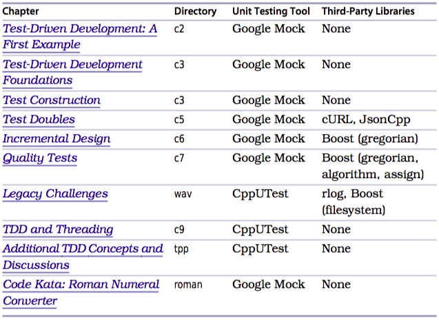
1.3 C++ Compiler
Utuntu
I originally built the examples in this book on Ubuntu 12.10 using g++ 4.7.2.
Install g++ using the following command:
sudo apt-get install build-essential
OS X
I successfully built the examples in this book on Mac OS X 10.8.3 (Mountain Lion) using a gcc port. The version of gcc shipped with Xcode at the time of this writing, 4.2, will not successfully compile the C++ examples in this book.
To install the gcc port, you may need to install MacPorts, an infrastructure that allows you to install free software onto your Mac. Refer to http://www.macports.org/install.php for further information.
You will want to first update MacPorts.
sudo port selfupdate
Install the gcc port using the following command:
sudo port install gcc47
This command may take a considerable amount of time to execute.
(If you prefer, you can specify the +universal variant at the end of the port command, which will enable compiling binaries for both PowerPC and Intel architectures.)
Once you have successfully installed the gcc port, indicate that its installation should be the default.
sudo port select gcc mp-gcc47
You may want to add the command to the path name list.
hash gcc
Windows
On Windows, your best bet for getting the code working as it appears in this book (and thus as it appears in the source distribution) is to consider a MinGW or Cygwin port of g++. Other avenues for exploration include the Microsoft Visual C++ Compiler November 2012 CTP and Clang, but at the time of this writing they do not provide sufficient support for the C+11 standard. This subsection will give a brief overview of some of the challenges and suggestions associated with getting the examples to run on Windows.
Visual C++ Compiler November 2012 CTP
Windows Example Code
As this book approaches final publication, efforts are underway to create working Windows code examples (by eliminating unsupported C++11 elements). You can find the reworked examples as a separate set of repositories at my GitHub page (https://github.com/jlangr), one repository per chapter. Refer to the Google Group discussion forum at https://groups.google.com/forum/?fromgroups#!forum/modern-cpp-with-tdd for further information about Windows examples as they get posted.
The Windows GitHub repositories contain solution (.sln) and project (.vcxproj) files. You should be able to use these files to load example code in Visual Studio Express 2012 for Windows Desktop. You can also use MSBuild to build and run tests for the examples from the command line.
If you want to rework the code examples on your own, it shouldn’t be too horrible an experience. Changing to out-of-class initialization should be easy. You can replace std::unordered_map with std::map. And many of the new additions to C++11 originated in the boost::tr1 library, so you might be able to directly substitute the Boost implementations.
A Few Windows Tips
Visual Studio 2013 Previews
Shortly before my final deadline for book changes, Microsoft released preview downloads for Visual Studio 2013, which promises additional compliance with the C++11 standard as well as support for some proposed C++14 features. I’m hoping you eventually don’t find Windows-specific versions at all. Here’s to a fully C++11-compliant Windows compiler!
1.4 CMake
For better or worse, I chose CMake in an attempt to support cross-platform builds.
For Ubuntu users, the version used for building the examples is CMake 2.8.9. You can install CMake using the following command:
sudo apt-get install cmake
For OS X users, the version used for building the examples is CMake 2.8.10.2. You can install CMake using downloads at http://www.cmake.org/cmake/resources/ software.html.
When you run CMake against the build scripts provided, you might see the following error:
Make Error: your CXX compiler: "CMAKE_CXX_COMPILER-NOTFOUND" was not found.
Please set CMAKE_CXX_COMPILER to a valid compiler path or name.
The message indicates that no appropriate compiler was found. You might receive the error if you installed gcc and not g++. On Ubuntu, installing buildessential should solve the problem. On OS X, defining or changing the definition for CXX should solve the problem.
export CC=/opt/local/bin/x86_64-apple-darwin12-gcc-4.7.2 export CXX=/opt/local/bin/x86_64-apple-darwin12-g++-mp-4.7
1.5 Google Mock
Google Mock, used in many of the book's examples, is a mocking and matcher framework that includes the unit testing tool Google Test.
You will be linking Google Mock into your examples, which means you must first build the Google Mock library. The following instructions may help you get started. You might also choose to refer to the README.txt file supplied with Google Mock for more detailed installation instructions: https://code.google.com/p/googlemock/source/browse/trunk/README.
Installing Google Mock
The official Google Mock site is https://code.google.com/p/googlemock/ [ME: refer to Googletest notes]. You can find downloads at https://code.google.com/p/googlemock/downloads/list. The version used for Unzip the installation zip file (for example, gmock-1.6.0.zip), perhaps in your home directory.
Create an environment variable called GMOCK_HOME that refers to this directory. Here’s an example:
export GMOCK_HOME=/home/jeff/gmock-1.6.0
Here it is on Windows:
setx GMOCK_HOME c:\Users\jlangr\gmock-1.6.0
Unix
I chose to build Google Mock using CMake. From the root of your Google Mock installation ($GMOCK_HOME, henceforth), do the following:
mkdir mybuild
cd mybuild
cmake ..
make
The build directory name mybuild is arbitrary. However, the build scripts used by the examples in the book assume this name. If you change it, you’ll need to alter all of the CMakeLists.txt files.
You will also need to build Google Test, which is nested within Google Mock.
cd $GMOCK_HOME/gtest mkdir mybuild cd mybuild cmake .. make
Windows
Creating a Main for Running Google Mock Tests
Code for each of the examples in this book includes a main.cpp file designed for use with Google Mock.
c2/1/main.cpp
#include "gmock/gmock.h" int main(int argc, char** argv) { testing::InitGoogleMock(&argc, argv); return RUN_ALL_TESTS(); }
The main() function shown here first initializes Google Mock, passing along any command-line arguments. It then runs all of the tests.
Most of the time, this is all you need in main(). Google Mock also provides a default main() implementation that you can link to. Refer to http://code.google.com/p/googletest/wiki/Primer#Writing_the_main()_Function [ME: https://github.com/google/googletest#Writing_the_main()_Function] for further information.
1.6 CppUTest
CppUTest is another C++ unit testing framework that you might choose over Google Test/Google Mock. It offers many comparable features, plus provides a built-in memory leak detector. You can see more examples of CppUTest in Test Driven Development for Embedded C [Gre10] by James Grenning.
Installing CppUTest
You can find the project home for CppUTest at http://www.cpputest.org/, and you can find downloads at http://cpputest.github.io/cpputest/. Download the appropriate file and unpack, perhaps into a new directory named pputest within your home directory.
Create a CPPUTEST_HOME environment variable. Here’s an example:
export CPPUTEST_HOME=/home/jeff/cpputest
You can build CppUTest using make. You will also need to build CppUTestExt, which provides mocking support.
cd $CPPUTEST_HOME ./configure make make -f Makefile_CppUTestExt
[ME: using cmake builds both libcpputest and libpputestext.]
You can install CppUTest to /usr/local/lib using the command make install.
You can build CppUTest using CMake if you choose.
Creating a Main for Running CppUTest Tests
Code for the WAV Reader example in this book includes a testmain.cpp file designed for use with CppUTest.
wav/1/testmain.cpp
#include "CppUTest/CommandLineTestRunner.h" int main(int argc, char** argv) { return CommandLineTestRunner::RunAllTests(argc, argv); }
1.7 libcurl
libcurl provides a client-side URL transfer library that supports HTTP and many other protocols. It supports the cURL command-line transfer tool.
You can find the project home for cURL at http://curl.haxx.se/, and you can find downloads at http://curl.haxx.se/download.html. [ME: https://github.com/curl/curl] Download the appropriate file and unpack, perhaps into your home directory. Create a CURL_HOME environment variable; here’s an example:
export CURL_HOME=/home/jeff/curl-7.29.0
You can build the library using CMake.
cd $CURL_HOME mkdir build cd build cmake .. make
1.8 JsonCpp
JsonCpp provides support for the data interchange format known as JavaScript Object Notation (JSON).
You can find the project home for JsonCpp at http://jsoncpp.sourceforge.net/ [ME: https://github.com/open-source-parsers/jsoncpp], and you can find downloads at http://sourceforge.net/projects/jsoncpp/files/.
Create a JSONCPP_HOME environment variable; here’s an example:
export JSONCPP_HOME=/home/jeff/jsoncpp-src-0.5.
[ME:]
Clone jsoncpp using git.
The recommended approach to integrating JsonCpp in your project is to include the amalgamated source (a single .cpp file and two .h files) in your project, and compile and build as you would any other source file. This ensures consistency of compilation flags and ABI compatibility, issues which arise when building shared or static libraries.
JsonCpp is provided with a script to generate a single header and a single source file to ease inclusion into an existing project. The amalgamated source can be generated at any time by running the following command from the top-directory (this requires Python 2.6):
python amalgamate.py
The include/ should be added to your compiler include path. JsonCpp headers should be included as follow:
#include <json/json.h>
If JsonCpp was built as a dynamic library on Windows, then your project needs to define the macro JSON_DLL.
Refer to https://github.com/open-source-parsers/jsoncpp.
1.9 rlog
rlog provides a message logging facility for C++.
Download the appropriate file and unpack, perhaps into your home directory. Create an environment variable for RLOG_HOME. Here’s an example:
/fengyz/projects/cpp/rlog-1.4
Under Ubuntu, you can build rlog using the following commands:
cd $RLOG_HOME ./configure make
[ME: then add a line in cmake.txt]
target_link_libraries(utest rlog)
And use it:
#include <rlog/rlog.h> #include <rlog/StdioNode.h> //... using namespace rlog; //... rLog(channel, "riff header size = %i" , sizeof(RiffHeader)); rLog(channel, "subchunk header size = %i", sizeof(FormatSubchunkHeader)); rLog(channel, "subchunk size = %i", formatSubchunkHeader.subchunkSize); rLog(channel, "data length = %i", dataChunk.length);
(Refer to http://media.pragprog.com/titles/lotdd/code/wav/13/WavReader.cpp and page 216)
1.10 Boost
Boost provides a large set of essential C++ libraries.
You can find the project home for Boost at http://www.boost.org, and you can find downloads at http://sourceforge.net/projects/boost/files/boost. Boost is updated regularly to newer versions. Download the appropriate file and unpack, perhaps into your home directory. Create environment variables for both BOOST_ROOT and the Boost version you installed. Here’s an example:
export BOOST_ROOT=/home/jeff/boost_1_53_0 export BOOST_VERSION=1.53.0
Many Boost libraries require only header files. Following the preceding instructions should allow you to build all of the examples that use Boost, with the exception of the code in Legacy Challenges (Chapter 8).
To build the code in Legacy Challenges, you will need to build and link libraries from Boost. I used the following commands to build the appropriate libraries:
cd $BOOST_ROOT ./bootstrap.sh --with-libraries=filesystem,system ./b2
The commands I executed might work for you, but in the event they do not, refer to the instructions at http://ubuntuforums.org/showthread.php?t=1180792 (note, though, that the bootstrap.sh argument –with-library should be –with-libraries).
1.11 Building Examples and Running Tests
Once you’ve installed the appropriate software, you can build any of the example versions and subsequently execute tests. From within an example version directory, you’ll first use CMake to create a makefile.
mkdir build
cd build
cmake ..
[ME: modfy include & link paths]
CMakeLists.txt:
include_directories($ENV{GMOCK_HOME}/include $ENV{GTEST_DIR}/googletest/include) link_directories($ENV{GTEST_DIR}/mybuild/googlemock $ENV{GTEST_DIR}/mybuild/googlemock/gtest)
The legacy codebase (see Legacy Challenges) uses libraries from Boost, not just headers. CMakeLists.txt uses the BOOST_ROOT environment variable you defined twice: first, explicitly, by include_directories to indicate where Boost headers can be found, and second, implicitly, when CMake executes find_package to locate Boost libraries.
When building the legacy codebase, you might receive an error indicating that Boost cannot be found. If so, you can experiment with changing the location by passing a value for BOOST_ROOT when you execute CMake.
cmake -DBOOST_ROOT=/home/jeff/boost_1_53_0 ..
Otherwise, ensure that you have built the Boost libraries correctly.
Once you have created a make file using CMake, you can build an example by navigating into the example’s build directory and then executing the following:
make
To execute tests, navigate into the example’s build directory and then execute the following:
./test
For the library example in Quality Tests, you will find the test executable in build/libraryTests.
1.12 Teardown
In this chapter, you learned what you’ll need in order to build and run the examples in this book. Remember that you’ll learn best when you get your hands dirty and follow along with the examples.
If you get stuck with setting things up, first find a trusty pair partner to help. A second set of eyes can quickly spot something that you might struggle with for quite a while. You can also visit the book's home page at http://pragprog.com/ titles/lotdd for helpful tips and a discussion forum. If you and your pair are both still stuck, please send me an email.
2. Test-Driven Development: A First Example incomplete
2.1 Setup
Write a test, get it to pass, clean up the design. That’s all there is to TDD. Yet these three simple steps embody a significant amount of sophistication.
You’ll learn best by coding along with the example in this chapter. Make sure you’ve set up your environment properly (see Chapter 1, Global Setup, on page 1).
The example provides many teaching points and demonstrates how TDD can help you incrementally design a reasonably involved algorithm.
2.2 The Soundex Class
Searching is a common need in many applications. An effective search should find matches even if the user misspells words.
In this chapter, we will test-drive a Soundex class that can improve the search capability in an application. The long-standing Soundex algorithm encodes words into a letter plus three digits, mapping similarly sounding words to the same encoding. Here are the rules for Soundex, per Wikipedia:
- Retain the first letter. Drop all other occurrences of a, e, i, o, u, y, h, w.
- Replace consonants with digits (after the first letter):
- b, f, p, v: 1
- c, g, j, k, q, s, x, z: 2
- d, t : 3
- l: 4
- m, n: 5
- r: 6
- If two adjacent letters encode to the same number, encode them instead as a single number. Also, do so if two letters with the same number are separated by h or w (but code them twice if separated by a vowel). This rule also applies to the first letter.
- Stop when you have a letter and three digits. Zero-pad if needed.
2.3 Getting Started general approach best practice
A common misconception of TDD is that you first define all the tests before building an implementation. Instead, you focus on one test at a time and incrementally consider the next behavior to drive into the system from there.
As a general approach to TDD, you seek to implement the next simplest rule in turn. (For a more specific, formalized approach to TDD, refer to the TPP [//Section 10.4//, The Transformation Priority Premise, on page 281].) What useful behavior will require the most straightforward, smallest increment of code to implement?
With that in mind, where do we start with test-driving the Soundex solution? Let’s quickly speculate as to what implementing each rule might entail.
- Soundex rule #3 appears most involved.
- Rule #4, indicating when to stop encoding, would probably make more sense once the implementation of other rules actually resulted in something getting encoded.
- The second rule hints that the first letter should already be in place,
- so we’ll start with rule #1. It seems straightforward.
The first rule tells us to retain the first letter of the name and…stop! Let’s keep things as small as possible. What if we have only a single letter in the word? Let’s test-drive that scenario.
c2/1/SoundexTest.cpp
#include "gmock/gmock.h" TEST(SoundexEncoding, RetainsSoleLetterOfOneLetterWord) { Soundex soundex; }
Each test you write in TDD and get to pass represents a new, working piece of behavior that you add to the system. Aside from getting an entire feature shipped, your passing tests represent your best measure of progress. You name each test to describe the small piece of behavior.
While you don’t determine all the tests up front, you’ll probably have an initial set of thoughts about what you need to tackle. Many test-drivers capture their thoughts about upcoming tests in a test list (described first in Test Driven Development: By Example [Bec02]). The list can contain names of tests or reminders of code cleanup that you need to do.
The list is yours alone, so you can make it as brief or cryptic as you like.
- As you test-drive and think of new test cases, add them to the list.
- As you add code you know will need to be cleaned up, add a reminder to the list.
- As you complete a test or other task, cross it off the list. -> It’s that simple.
- If you end up with outstanding list items at the end of your programming session, set the list aside for a future session.
You might think of the test list as a piece of initial design. It can help you clarify what you think you need to build. It can also help trigger you to think about other things you need to do.
Note: Don’t let the test list constrain what you do or the order in which you do it, however. TDD is a fluid process, and you should usually go where the tests suggest you go next.
- On line 1, we include gmock, which gives us all the functionality we’ll need to write tests.
- A simple test declaration requires use of the TEST macro (line 2). The TEST macro takes two parameters: the name of the test case and a descriptive name for the test. A test case, per Google’s documentation, is a related collection of tests that can “share data and subroutines.” (link) (The term is overloaded; to some, a test case represents a single scenario.)
Reading the test case name and test name together, left to right, reveals a sentence that describes what we want to verify: “Soundex encoding retains [the] sole letter of [a] one-letter word.” As we write additional tests for Soundex encoding behavior, we’ll use SoundexEncoding for the test case name to help group these related tests.
Don’t discount the importance of crafting good test names.
- On line 3, we create a Soundex object, then…stop! Before we proceed with more testing, we know we’ve just introduced code that won’t compile—we haven’t yet defined a Soundex class! We’ll stop coding our test and fix the problem before moving on. This approach is in keeping with Uncle Bob’s Three Rules of TDD (See Section 3.4, The Three Rules of TDD, on page 59 for more discussion of the rules): – Write production code only to make a failing test pass. – Write no more of a unit test than sufficient to fail. Compilation failures are failures. – Write only the production code needed to pass the one failing test.
Seeking incremental feedback can be a great approach in C++, where a few lines of test can generate a mountain of compiler errors. Seeing an error as soon as you write the code that generates it can make it easier to resolve.
The three rules of TDD aside, you’ll find that sometimes it makes more sense to code the entire test before running it, perhaps to get a better feel for how you should design the interface you’re testing. You might also find that waiting on additional slow compiles isn’t worth the trade-off in more immediate feedback.
For now, particularly as you are learning TDD, seek feedback as soon as it can be useful. Ultimately, it’s up to you to decide how incrementally you approach designing each test.
[ME: fix issue - "undefined reference to pthread_xxx" while linking]
Refer to Undefined reference to pthread_create in Linux:
For Linux the correct command is:
gcc -pthread -o term term.cIn general, libraries should follow sources and objects on command line, and -lpthread is not an "option", it's a library specification. On a system with only libpthread.a installed,
gcc -lpthread ...will fail to link.
So, in CMakeLists.txt, change:
set(CMAKE_CXX_FLAGS "${CMAXE_CXX_FLAGS} -Wall")
to
set(CMAKE_CXX_FLAGS "${CMAXE_CXX_FLAGS} -Wall -pthread")
Done!
The compiler shows that we indeed need a Soundex class. We could add a compilation unit (.h/.cpp combination) for Soundex, but let’s make life easier for ourselves. Instead of mucking with separate files, we’ll simply declare everything in the same file as the test.
Once we’re ready to push our code up or once we experience pain from having everything in one file, we’ll do things the proper way and split the tests from the production code.
c2/2/SoundexTest.cpp
class Soundex { }; // ...
Progmatic approach:
- As you shape the design of a new behavior using TDD, you’ll likely be changing the interface often. Splitting out a header file too early would only slow you down.
- We’re simply choosing a more effective organization until we know we need something better. We’re deferring complexity, which tends to slow us down, until we truly need it. (Some Agile proponents use the acronym YAGNI—“You ain’t gonna need it.”)
- TDD provides you with safe opportunities to challenge yourself, so don’t be afraid to experiment with what you might find to be more effective ways to work.
We’re following the third rule for TDD: write only enough production code to pass a test. We can react to each incremental bit of negative feedback (in this case, failing compilation) and respond with just enough code to get past the negative feedback. To compile, we added an empty declaration for the Soundex class.
Building and running the tests at this point gives us positive feedback.
In TDD, you practice safe coding by testing early and often, so you usually have but one reason to fail.
Since our test passes, it might be a good time to make a local commit. A good version control system allows you to commit easily every time the code is green (in other words, when all tests are passing). If you get into trouble later, you can easily revert to a known good state and try again.
Part of the TDD mentality is that every passing test represents a proven piece of behavior that you’ve added to the system. It might not always be something you could ship, of course. But the more you think in such incremental terms and the more frequently you seek to integrate your locally proven behavior, the more successful you’ll be.
Moving along, we add a line of code to the test that shows how we expect client code to interact with Soundex objects.
c2/3/SoundexTest.cpp
#include "gmock/gmock.h" class Soundex { }; TEST(soundex_encoding, retains_sole_letter_of_one_letter_word) { Soundex soundex; auto encoded = soundex.encode("A"); // <---- }
We are making decisions as we add tests. Here we decided that the Soundex class exposes a public member function called encode() that takes a string argument. Attempting to compile with this change fails, since encode() doesn’t exist. The negative feedback triggers us to write just enough code to get everything to compile and run.
c2/4/SoundexTest.cpp
class Soundex { public: std::string encode(const std::string& word) const { return ""; } };
The code compiles, and all the tests pass, which is still not a very interesting event. It’s finally time to verify something useful: given the single letter A, can encode() return an appropriate Soundex code? We express this interest using an assertion.
c2/5/SoundexTest.cpp
TEST(soundex_encoding, retains_sole_letter_of_one_letter_word) { Soundex soundex; auto encoded = soundex.encode("A"); ASSERT_THAT(encoded, testing::Eq("A")); // <---- }
An assertion verifies whether things are as we expect. The assertion here declares that the string returned by encode() is the same as the string we passed it. Compilation succeeds, but we now see that our first assertion has failed.
If the testing output says something other than “PASSED” or “FAILED,” the test application itself crashed in the middle of a test.
With one or more failed tests, we scan upward to find the individual test that failed. Google Mock prints a [ RUN ] record with each test name when it starts and prints a [ FAILED ] or [ OK ] bookend when the test fails. On failure, the lines between [ RUN ] and [ OK ] might help us understand our failure.
We expected a failing assertion, since we deliberately hard-coded the empty string to pass compilation. That negative feedback is a good thing and part of the TDD cycle. We want to first ensure that a newly coded assertion—representing functionality we haven’t built yet—doesn’t pass. (Sometimes it does, which is usually not a good thing; see Section 3.5, Getting Green on Red, on page 60.) We also want to make sure we’ve coded a legitimate test; seeing it first fail and then pass when we write the appropriate code helps ensure our test is honest.
The failing test prods us to write code, no more than necessary to pass the assertion.
c2/6/SoundexTest.cpp
class Soundex { public: std::string encode(const std::string& word) const { return "A"; // <---- } };
We compile and rerun the tests. The final two lines of its output indicate that all is well.
I’m kidding, right? Well, no. We want to work incrementally. Let’s put it this way: if someone told us to build a Soundex class that supported encoding only the letter A, we’d be done. We’d want to clean things up a little bit, but otherwise we’d need no additional logic.
Another way of looking at it is that the tests specify all of the behavior that we have in the system to date. Right now we have one test. Why would we have any more code than what that test states we need?
We’re not done, of course. We have plenty of additional needs and requirements that we’ll incrementally test-drive into the system. We’re not even done with the current test. We must, must, must clean up the small messes we just made.
2.4 Fixing Unclean Code
It’s extremely easy to introduce deficient code even in a small number of lines. TDD provides the wonderful opportunity to fix such small problems as they arise, before they add up to countless small problems (or even a few big problems).
We decide that the assertion in our test isn’t reader-friendly.
ASSERT_THAT(encoded, testing::Eq("A"));
Much as the test declaration (the combination of test case and test name) should read like a sentence, we want our asserts to do the same. We introduce a using directive to help.
c2/7/SoundexTest.cpp
#include "gmock/gmock.h" using ::testing::Eq; // <---- class Soundex { public: std::string encode(const std::string& word) const { return "A"; } }; TEST(soundex_encoding, retains_sole_letter_of_one_letter_word) { Soundex soundex; auto encoded = soundex.encode("A"); ASSERT_THAT(encoded, Eq("A")); // <---- }
Now we can paraphrase the assertion with no hiccups: assert that the encoded value is equal to the string "A".
Our small change is a refactoring, a code transformation in which we retain existing behavior (as demonstrated by the test) but improve the design. In this case, we improved the test’s design by enhancing its expressiveness. The namespace of Eq() is an implementation detail not relevant to the test’s meaning. Hiding that detail improves the level of abstraction in the test.
Code duplication is another common challenge we face. The costs and risks of maintenance increase with the amount of code duplication.
Our Soundex class contains no obvious duplication. But looking at both the test and production code in conjunction reveals a common magic literal, the string "A". We want to eliminate this duplication. Another problem is that the test name (RetainsSoleLetterOfOneLetterWord) declares a general behavior, but the implementation supports only a specific, single letter. We want to eliminate the hard-coded "A" in a way that solves both problems.
How about simply returning the word passed in?
c2/8/SoundexTest.cpp
class Soundex { public: std::string encode(const std::string& word) const { return word; // <---- } };
At any given point, your complete set of tests declares the behaviors you intend your system to have. That implies the converse: if no test describes a behavior, it either doesn’t exist or isn’t intended (or the tests do a poor job of describing behavior).
(There are other TDD schools of thought about what we might have coded at this point. One alternate technique is triangulation —see Triangulation, on page 283—where you write a second, similar assertion but with a different data expectation in order to drive in the generalized solution. You’ll discover more alternate approaches throughout the book, but we’ll keep things simple for now.)
As we drive through TDD cycles, we’ll use the refactoring step as our opportunity to review the design impacts we just made to the system, fixing any problems we just created.
Our primary refactoring focus will be on increasing expressiveness and eliminating duplication, two concerns that will give us the most benefit when it comes to creating maintainable code. But we’ll use other nuggets of design wisdom as we proceed, such as SOLID class design principles and code smells.
2.5 Incrementalism
- Q.: Are we going to keep working like this? How will we get anything done if we hard-code everything?
- A.: That’s two questions, but I’m happy to answer them both! Yes, we will keep working incrementally. This technique allows us to get a first passing test in place quickly. No worries, the hard-coded value will last only minutes at most. We know we’re not done with what we need to build, so we’ll have to write more tests to describe additional behavior. In this example, we know we must support the rest of the rules. As we write additional tests, we’ll have to replace the hard-coding with interesting logic in order to get the additional tests to pass.
Incrementalism is at the heart of what makes TDD successful. An incremental approach will seem quite unnatural and slow at first. However, taking small steps will increase your speed over time, partly because you will avoid errors that arise from taking large, complicated steps. Hang in there!
Astute readers will note that we’ve already coded something that does not completely meet the specification (spec) for Soundex. The last part of rule #4 says that we must “fill in zeros until there are three numbers.” Oh, the joy of specs! We must read them comprehensively and carefully to fully understand how all their parts interact. (_Better that we had a customer to interact with, someone who could clarify what was intended._) Right now it seems like rule #4 contradicts what we’ve already coded.
Imagine that the rules are being fed to us one by one. “Get the first part of rule #1 working, and then I’ll give you a new rule.” TDD aligns with this latter approach— each portion of a spec is an incremental addition to the system. An incremental approach allows us to build the system piecemeal, in any order, with continually verified, forward progress. There is a trade-off: we might spend additional time incorporating a new increment than if we had done a bit more planning. We’ll return to this concern throughout the book. For now, let’s see what happens when we avoid worrying about it.
We have two jobs: write a new test that describes the behavior, and change our existing test to ensure it meets the spec. Here’s our new test:
c2/9/SoundexTest.cpp
TEST(soundex_encoding, pads_with_zeros_to_ensure_three_digits) { Soundex soundex; auto encoded = soundex.encode("I"); ASSERT_THAT(encoded, Eq("I000")); }
One reviewer asks, “Why didn’t we read the Soundex rules more carefully and write this first?” Good question. Indeed, we weren’t careful. A strength of TDD is its ability to let you move forward in the face of incomplete information and in its ability to let you correct earlier choices as new information arises.
Each test we add is independent. We don’t use the outcome of one test as a precondition for running another. Each test must set up its own context. Our new test creates its own Soundex instance.
A failing test run shows that encode() returns the string "I" instead of "I000". Getting it to pass is straightforward.
c2/9/SoundexTest.cpp
class Soundex { public: std::string encode(const std::string& word) const { return word + "000"; // <---- } };
By building the smallest possible increment, we’re forced to write additional tests in order to add more behavior to the system.
Our new test passes, but the first test we wrote now fails.
When done test-driving, you’ll know that the tests correctly describe how your system works, as long as they pass. They provide examples that can read easier than specs, if crafted well.
c2/9/SoundexTest.cpp
TEST(soundex_encoding, retains_sole_letter_of_one_letter_word) { Soundex soundex; auto encoded = soundex.encode("A"); ASSERT_THAT(encoded, Eq("A000")); // <---- }
We now have two tests that perform the same steps, though the data differs slightly. That’s OK; each test now discretely documents one piece of behavior. We not only want to make sure the system works as expected, we want everyone to understand its complete set of intended behaviors.
It’s time for refactoring. The statement in encode() isn’t as clear about what’s going on as it could be. We decide to extract it to its own method with an intention-revealing name.
c2/10/SoundexTest.cpp
class Soundex { public: std::string encode(const std::string& word) const { return zeroPad(word); } private: std::string zeroPad(const std::string& word) const { return word + "000"; } };
2.6 Fixtures and Setup
It’s common for related tests to need common code. Google Mock lets us define a fixture class in which we can declare functions and member data for a related set of tests. (Tip: Technically, all Google Mock tests use a fixture that it generates behind the scenes.)
c2/10/SoundexTest.cpp
#include "gmock/gmock.h" using ::testing::Eq; class Soundex { public: std::string encode(const std::string& word) const { return zeroPad(word); } private: std::string zeroPad(const std::string& word) const { return word + "000"; } }; class SoundexEncoding: public testing::Test { public: Soundex soundex; }; TEST_F(SoundexEncoding, retains_sole_letter_of_one_letter_word) { auto encoded = soundex.encode("A"); ASSERT_THAT(encoded, Eq("A000")); } TEST_F(SoundexEncoding, pads_with_zeros_to_ensure_three_digits) { auto encoded = soundex.encode("I"); ASSERT_THAT(encoded, Eq("I000")); }
We create the SoundexEncoding fixture (which must derive from ::testing::Test) so that creating a Soundex instance gets done in one place. Within the fixture, we declare a soundex member variable and make it public so that the tests have visibility to it. (If you’re concerned about exposing soundex, remember that our fixture class lives in a .cpp file. We’d prefer to avoid every piece of unnecessary clutter in our tests.)
Google Mock instantiates the fixture class once per test.
To code a custom fixture, we change the TEST macro invocation to TEST_F, with the F standing for “Fixture.” If we forget to use TEST_F, any test code attempting to use fixture member errors will fail compilation.
We delete the local declarations of soundex, since the member is available to each test. We make this change incrementally.
- After coding the fixture and changing the macro, we delete the local declaration of soundex from the first test.
- We run all the tests to verify the change, remove the declaration from the second test, and run all the tests again.
Getting rid of the duplicate Soundex declaration does at least a couple things.
- It increases the abstraction level of our tests. We now see only two lines in each test, which allows us to focus on what’s relevant. (see Section 7.4, Test Abstraction, on page 181 for more information on why this is important).
- It can reduce future maintenance efforts. Imagine we have to change how we construct Soundex objects (perhaps we need to be able to specify a language as an argument). Moving Soundex construction into the fixture means we would need to make our change in only one place, as opposed to making the change across several tests.
We can reduce each test to a single line without losing any readability. I’m also not a fan of explicit using directives, so we clean that up too.
c2/11/SoundexTest.cpp
#include "gmock/gmock.h" #include "Soundex.h" using namespace testing; class SoundexEncoding: public Test { public: Soundex soundex; }; TEST_F(SoundexEncoding, retains_sole_letter_of_one_letter_word) { ASSERT_THAT(soundex.encode("A"), Eq("A000")); } TEST_F(SoundexEncoding, pads_with_zeros_to_ensure_three_digits) { ASSERT_THAT(soundex.encode("I"), Eq("I000")); }
You’ll note that the test now refers to Soundex.h. Having the tests and code in a single file was helpful for a short while. Now, the bouncing up and down in a single file is getting old. We split into the test and the header (we’ll decide whether we should create an .impl file when we’re done). Here’s the header:
c2/11/Soundex.h
#ifndef Soundex_h #define Soundex_h #include <string> class Soundex { public: std::string encode(const std::string& word) const { return zeroPad(word); } private: std::string zeroPad(const std::string& word) const { return word + "000"; } }; #endif
2.7 Thinking and TDD
The cycle of TDD:
- write a small test,
- ensure it fails,
- get it to pass,
- review and clean up the design (including that of the tests),
- ensure the tests all still pass.
You repeat the cycle throughout the day, keeping it short to maximize the feedback it gives you. At each point you have many things to think about. Thinking and TDD, on page 58, contains a list of questions to answer at each small step.
For our next test, we tackle rule #2 (“replace consonants with digits after the first letter”). A look at the replacement table reveals that the letter b corresponds to the digit 1.
c2/12/SoundexTest.cpp
TEST_F(SoundexEncoding, replaces_consonants_with_appropriate_digits) { ASSERT_THAT(soundex.encode("Ab"), Eq("A100")); }
The test fails as expected.
As with most tests we will write, there might be infinite ways to code a solution, out of which maybe a handful are reasonable. Technically, our only job is to make the test pass, after which our job is to clean up the solution.
However, the implementation that we seek is one that generalizes our solution —but does not over-generalize it to support additional concerns — and doesn’t introduce code that duplicates concepts already coded.
You could provide the following solution, which would pass all tests:
std::string encode(const std::string& word) const { if (word == "Ab") return "A100"; return zeroPad(word); }
That code, though,
- does not move toward a more generalized solution for the concern of replacing consonants with appropriate digits.
- It also introduces a duplicate construct: the special case for "Ab" resolves to zero-padding the text "A1", yet we already have generalized code that handles zero-padding any word.
But TDD is not a hard science; instead, think of it as a craftperson’s tool for incrementally growing a codebase. It’s a tool that accommodates continual experimentation, discovery, and refinement.
We’d rather move forward at a regular pace than argue. Here’s our solution that sets the stage for a generalized approach:
c2/13/Soundex.h
std::string encode(const std::string& word) const { auto encoded = word.substr(0, 1); if (word.length() > 1) encoded += "1"; return zeroPad(encoded); }
We run the tests, but our new test does not pass.
Value of: soundex.encode("Ab")
Expected: is equal to 0x4534dc pointing to "A100"
Actual: "A1000"
The padding logic is insufficient. We must change it to account for the length of the encoded string.
c2/14/Soundex.h
std::string zeroPad(const std::string& word) const { auto zerosNeeded = 4 - word.length(); return word + std::string(zerosNeeded, '0'); }
Our tests pass. That’s great, but our code is starting to look tedious. Sure, we know how encode() works, because we built it. But someone else will have to spend just a little more time to carefully read the code in order to understand its intent. We can do better than that. We refactor to a more declarative solution.
c2/15/Soundex.h
class Soundex { public: std::string encode(const std::string& word) const { return zeroPad(head(word) + encodedDigits(word)); } private: std::string head(const std::string& word) const { return word.substr(0, 1); } std::string encodedDigits(const std::string& word) const { if (word.length() > 1) return "1"; return ""; } std::string zeroPad(const std::string& word) const { auto zerosNeeded = 4 - word.length(); return word + std::string(zerosNeeded, '0'); } };
We’re fleshing out the algorithm for Soundex encoding, bit by bit. At the same time, our refactoring helps ensure that the core of the algorithm remains crystal clear, uncluttered by implementation details.
Structuring code in this declarative manner makes code considerably easier to understand. Separating interface (what) from implementation (how) is an important aspect of design and provides a springboard for larger design choices. You want to consider similar restructurings every time you hit the refactoring step in TDD.
Some of you may be concerned about a few things in our implementation details.
- First, shouldn’t we use a stringstream instead of concatenating strings?
- Second, why not use an individual char where possible? For example, why not replace return word.substr(0, 1); with return word.front();?
- Third, wouldn’t it perform better to use return std::string(); instead of return "";?
These code alternatives might all perform better. But they all represent premature optimization. More important now is a good design, with consistent interfaces and expressive code. Once we finish implementing correct behavior with a solid design, we might or might not consider optimizing performance (but not without first measuring; see Section 10.2, TDD and Performance, on page 269 for a discussion about handling performance concerns).
Premature performance optimizations aside, the code does need a bit of work. We eliminate the code smell of using a magic literal to represent the maximum length of a Soundex code by replacing it with an appropriately named constant.
c2/16/Soundex.h
static const size_t MaxCodeLength{4}; // ... std::string zeroPad(const std::string& word) const { auto zerosNeeded = MaxCodeLength - word.length(); return word + std::string(zerosNeeded, '0'); }
What about the hard-coded string "1" in encodedDigits()? Our code needs to translate the letter b to the digit 1, so we can’t eliminate it using a variable. We could introduce another constant, or we could return the literal from a function whose name explains its meaning.
We could even leave the hardcoded string "1" in place to be driven out by the next test. But can we guarantee we’ll write that test before integrating code? What if we’re distracted? Coming back to the code, we’ll waste a bit more time deciphering what we wrote. Keeping with an incremental delivery mentality, we choose to fix the problem now.
c2/17/Soundex.h
std::string encodedDigits(const std::string& word) const { if (word.length() > 1) return encodedDigit(); return ""; } std::string encodedDigit() const { return "1"; }
2.8 Test-Driving vs. Testing
We need to test-drive more of the consonant conversion logic in order to generalize our solution. Should we add an assertion to ReplacesConsonantsWithAppropriateDigits, or should we create an additional test?
The rule of thumb for TDD is one assert per test (see Section 7.3, One Assert per Test, on page 178 for more information on this guideline). It’s a good idea that promotes focusing on the behavior of the tests, instead of centering tests around functions. We will follow this rule most of the time.
We make the rare choice of adding a second assertion, representing a discrete test case, to the test. We’d prefer that if one assertion fails, the others still execute. To accomplish that goal, we use the EXPECT_THAT macro provided by Google Mock, instead of ASSERT_THAT.
c2/18/SoundexTest.cpp
TEST_F(SoundexEncoding, replaces_consonants_with_appropriate_digits) { EXPECT_THAT(soundex.encode("Ab"), Eq("A100")); EXPECT_THAT(soundex.encode("Ac"), Eq("A200")); }
The second consonant drives in the need for an if statement to handle the special case.
c2/18/Soundex.h
std::string encodedDigits(const std::string& word) const { if (word.length() > 1) return encodedDigit(word[1]); return ""; } std::string encodedDigit(char letter) const { if (letter == 'c') return "2"; return "1"; }
We add a third data case.
c2/19/SoundexTest.cpp
TEST_F(SoundexEncoding, replaces_consonants_with_appropriate_digits) { EXPECT_THAT(soundex.encode("Ab"), Eq("A100")); EXPECT_THAT(soundex.encode("Ac"), Eq("A200")); EXPECT_THAT(soundex.encode("Ad"), Eq("A300")); // <---- }
The need for a third consonant makes it clear that we need to replace the if with a hash-based collection.
c2/19/Soundex.h
std::string encodedDigit(char letter) const { const std::unordered_map<char,std::string> encodings { {'b', "1"}, {'c', "2"}, {'d', "3"} }; return encodings.find(letter)->second; }
Now we need to code support for the rest of the consonant conversions. The question is, do we need to test-drive each one?
A mantra surfaced in the early TDD days that says, “Test everything that can possibly break.” This is a glib response to the oft-asked question, “What do I have to test?” Realistically, coding encodings map is a low-risk activity. It’s unlikely we’ll break anything in doing so.
Maybe the most important consideration is that we are test-driving, not testing. “Is there a difference?” – Yes.
- Using a testing technique, you would seek to exhaustively analyze the specification in question (and possibly the code) and devise tests that exhaustively cover the behavior.
- TDD is instead a technique for driving the design of the code. Your tests primarily serve the purpose of specifying the behavior of what you will build. The tests in TDD are almost a by-product of the process. They provide you with the necessary confidence to make subsequent changes to the code.
The important aspect is that TDD represents more of a sufficiency mentality.
- You write as many tests as you need to drive in the code necessary and no more.
- You write tests to describe the next behavior needed.
- If you know that the logic won’t need to change any further, you stop writing tests.
Remind yourself to take smaller, safer steps.
We choose to test-drive. We complete the conversion table.
c2/20/Soundex.h
std::string encodedDigit(char letter) const { const std::unordered_map<char,std::string> encodings { {'b', "1"}, {'f', "1"}, {'p', "1"}, {'v', "1"}, {'c', "2"}, {'g', "2"}, {'j', "2"}, {'k', "2"}, {'q', "2"}, {'s', "2"}, {'x', "2"}, {'z', "2"}, {'d', "3"}, {'t', "3"}, {'l', "4"}, {'m', "5"}, {'n', "5"}, {'r', "6"}, }; return encodings.find(letter)->second; }
What about the tests? Do we need three assertions in ReplacesConsonantsWithAppropriateDigits? To answer that question, we ask ourselves whether having the additional assertions provides increased understanding of how the feature works. We answer ourselves: probably not. We eliminate two assertions, change the remaining one to use ASSERT_THAT, and choose a different encoding just to bolster our confidence a little.
TEST_F(SoundexEncoding, replaces_consonants_with_appropriate_digits) { ASSERT_THAT(soundex.encode("Ax"), Eq("A200")); }
2.9 What If?
Our implementation assumes that the letter passed to encodedDigit() will be found in the encodings map.
Will it ever be possible for encodedDigit() to be passed a letter that doesn’t appear in the lookup map? If so, what should the function do?
We could guess, but the better answer is to ask the customer. We don’t have one, but we can find a customer proxy online.
Question answered: we need to ignore unrecognized characters.
With TDD, you can choose to jot down the name of a would-be test, or you can write it now. At times I’ve found that driving in a few exceptional cases earlier would have saved me some debugging time later. Let’s put the test in place now.
c2/21/SoundexTest.cpp
TEST_F(SoundexEncoding, ignores_non_alphabetics) { ASSERT_THAT(soundex.encode("A#"), Eq("A000")); }
The test doesn’t simply fail; it crashes.
[ RUN ] SoundexEncoding.ignores_non_alphabetics [2] 26420 segmentation fault ./mytest
The find() call returns an iterator pointing to end() that we try to dereference. We change encodedDigit() to instead return an empty string in this case.
c2/21/Soundex.h
std::string encodedDigit(char letter) const { const std::unordered_map<char,std::string> encodings { {'b', "1"}, {'f', "1"}, {'p', "1"}, {'v', "1"}, {'c', "2"}, {'g', "2"}, {'j', "2"}, {'k', "2"}, {'q', "2"}, {'s', "2"}, {'x', "2"}, {'z', "2"}, {'d', "3"}, {'t', "3"}, {'l', "4"}, {'m', "5"}, {'n', "5"}, {'r', "6"}, }; auto it = encodings.find(letter); // <----- return it == encodings.end() ? "" : it->second; // <---- }
2.10 One Thing at a Time
We want to test-drive converting multiple characters in the tail of the word.
c2/22/SoundexTest.cpp
TEST_F(SoundexEncoding, replaces_multiple_consonants_with_digits) { ASSERT_THAT(soundex.encode("Acdl"), Eq("A234")); }
A simple solution would involve iterating through all but the first letter of the word, converting each. But our code isn’t quite structured in a way that easily supports that. Let’s restructure the code.
One thing at a time, however. When test-driving, you want to keep each step in the cycle distinct. When writing a test, don’t go off and refactor. Don’t refactor when trying to get a test to pass, either. Combining the two activities will waste your time when things go awry, which they will.
We comment out the test we just wrote, temporarily halting our “red” activity. (In Google Mock, prepending DISABLED_ to the test name tells Google Mock to skip executing it. See Disabling Tests, on page 76, to read about the implications of disabling tests.)
c2/23/SoundexTest.cpp
TEST_F(SoundexEncoding, DISABLED_ReplacesMultipleConsonantsWithDigits) { ASSERT_THAT(soundex.encode("Acdl"), Eq("A234")); }
We focus on refactoring activity and rework our solution a little. Passing only the tail should simplify the code we’ll need to iterate through the letters to be converted. It also allows us to use a couple string functions that help clarify what the code does: empty() and front().
c2/23/Soundex.h
std::string encode(const std::string& word) const { return zeroPad(head(word) + encodedDigits(tail(word))); } private: // ... std::string tail(const std::string& word) const { return word.substr(1); } std::string encodedDigits(const std::string& word) const { if (word.empty()) return ""; return encodedDigit(word.front()); }
We run our tests again to ensure our changes break no tests. That ends the refactoring activity.
We return to the start of the TDD cycle by reenabling ReplacesMultipleConsonantsWithDigits and watching it fail. We get our tests to pass by using a range-based for loop to iterate the tail of the word.
c2/24/Soundex.h
Now that we’ve added a loop to encodedDigits(), we think we don’t need the guard clause to return early if the word passed in is empty. As a refactoring step, we remove it.
c2/25/Soundex.h
We rerun our tests. Success! Deleting unnecessary code is extremely satisfying, but only when we can do so with confidence. Having tests to try these little bits of cleanup rocks.
2.11 Limiting Length
Rule #4 tells us the Soundex code must be four characters.
c2/26/SoundexTest.cpp
The code throws an exception when Google Mock runs this new test. No worries, because our test tool traps this exception, reports a test failure, and continues running any subsequent tests.
[ RUN ] SoundexEncoding.limits_length_to_four_characters unknown file: Failure C++ exception with description "basic_string::_M_create" thrown in the test body. [ FAILED ] SoundexEncoding.limits_length_to_four_characters (24 ms)
Tip: By default, Google Mock swallows the problem and keeps running the rest of your tests. If you prefer to crash the tests on an uncaught exception, you can run Google Mock with the following command-line option: --gtest_catch_exceptions=0
Looking at a backtrace in gdb (or a comparable debugging tool) tells us that our problem is in zeroPad(). A web search reveals that the _S_create error occurs when you attempt to create a string larger than the maximum allowed size. With those two facts, we focus on the string construction in zeroPad(). – When the length of code exceeds MaxCodeLength, zerosNeeded overflows with a value that makes the string constructor unhappy.
TDD fosters an incremental approach that makes it easier to resolve problems, because it exposes them as soon as you create them. We didn’t need to debug to pinpoint our problem; a glance at the backtrace was all we needed. – we have better test-driven to make the source of problem more explicit.
For our solution to the problem,
- we could fix zeroPad().
- We could also change encodedDigits() to stop once it encodes enough letters.
We choose the latter—once encoding gets filled with encoded digits, we break out of the loop.
c2/26/Soundex.h
std::string encodedDigits(const std::string& word) const { std::string encoding; for (auto letter: word) { if (encoding.length() == MaxCodeLength - 1) break; encoding += encodedDigit(letter); } return encoding; }
The new statement doesn’t clearly and directly declare its intent. We immediately extract it to the intention-revealing function isComplete().
c2/27/Soundex.h
std::string encodedDigits(const std::string& word) const { std::string encoding; for (auto letter: word) { if (isComplete(encoding)) break; // <---- encoding += encodedDigit(letter); } return encoding; } bool isComplete(const std::string&encoding) const { return encoding.length() == MaxCodeLength - 1; }
2.12 Dropping Vowels
Rule #1 says to drop all occurrences of vowels and the letters w, h, and y. For lack of a better name, we’ll refer to these as vowel-like letters.
c2/28/SoundexTest.cpp:
TEST_F(SoundexEncoding, ignores_vowel_like_letters) { ASSERT_THAT(soundex.encode("Baeiouwhycdl"), Eq("B234")); }
The test passes without us adding a lick of production code, because encodedDigit() answers an empty string if the letter to be encoded wasn’t found. Any vowels thus encode to the empty string, which gets harmlessly appended.
A test that passes with no change to your classes is always cause for humility and pause (see Section 3.5, Getting Green on Red, on page 60). Ask yourself, “What might I have done differently?”
If a stream of subsequent tests continues to pass, consider reverting your effort. You’re likely taking too-large steps, and you likely won’t find as much benefit in TDD. In our case, we could have written a test that demonstrates what happens for any unrecognized characters and at that point chosen to have it return the same character instead of the empty string. [ME: 也就是说，如果采取更小的步骤，就会写更多的测试，从而让代码更安全，同时也提供了更详细的文档]
2.13 Doing What It Takes to Clarify Tests
For our next test, we tackle the case where two adjacent letters encode to the same digit. Per Soundex rule #3, such duplicate letters get encoded as a single digit. The rule also states that it applies to the first letter. Let’s deal with the first case now and worry about the first letter next.
c2/29/SoundexTest.cpp
TEST_F(SoundexEncoding, combines_duplicate_encodings) { ASSERT_THAT(soundex.encode("Abfcgdt"), Eq("A123")); }
…
2.14 Testing Outside the Box
2.15 Back on Track
2.16 Refactoring to Single-Responsibility Functions
2.17 Finishing Up
2.18 What Tests Are We Missing?
2.19 Our Solution
2.20 The Soundex Class
2.21 Teardown
3. Test-Driven Development Foundations
3.1 Setup
- The definition of unit
- The TDD cycle of red-green-refactor
- The three rules of TDD
- Why you should never skip observing test failure • Mind-sets for success
- Mechanics for success
3.2 Unit Test and TDD Fundamentals
Unit Test Organization and Execution
A single unit test consists of a descriptive name and a series of code statements, conceptually divided into four (ordered) parts.
- (Optional) statements that set up a context for execution
- One or more statements to invoke the behavior you want to verify
- One or more statements to verify the expected outcome
- (Optional) cleanup statements (for example, to release allocated memory)
Some folks refer to the first three parts as Given-When-Then. In other words, Given a context, When the test executes some code, Then some behavior is verified. Other developers might call this breakdown Arrange-Act-Assert (see Arrange-Act-Assert/Given-When-Then, on page 84).
Typically you group related tests in a single source file. Google Mock, like most unit testing tools, allows you to logically group unit tests into fixtures.
Using the tool to execute all our tests is a test run or suite run.
Most developers writing unit tests (but not doing TDD) seek only the verification it provides. These developers typically write tests once they complete functional portions of production code. Such tests written after development can be tougher to write and maintain, primarily because they weren’t written with testing in mind. We’ll do better and use TDD.
Test-Driving Units
TDD is a more concisely defined process that incorporates the activity of unit testing.
You use TDD to test-drive new behavior into your system in quite small increments. In other words, to add a new piece of behavior to the system, you first write a test to define that behavior. The existence of a test that will not pass forces (drives) you to implement the corresponding behavior.
Each test should represent the smallest meaningful increment you can think of. Your favorite tests contain one, two, or three lines (see Arrange-Act-Assert/Given-When-Then, on page 84) with one assertion (Section 7.3, One Assert per Test, on page 178). Having an ideal will remind you to question the size of each longer test—is it doing too much?
These small bits of related new code you add to the system in response to a failing test are logical groupings, or units of code.
You don’t seek to write tests that cover a wide swath of functionality. The responsibility for such end-to-end tests lies elsewhere, perhaps in the realm of acceptance tests/customer tests or system tests (in this book, integration tests). Integration tests verify code that must integrate with other code or with external entities (the file system, databases, web protocols, and other APIs). In contrast, unit tests allow you to verify units in isolation from other code.
The first rule of TDD (Section 3.4, The Three Rules of TDD, on page 59) states that you cannot write production code unless to make a failing test pass.
Don’t sweat the terminology distinction much. What’s more important is that you are systematically driving every piece of code into the system by first specifying its behavior.
In Test Doubles, you’ll learn how to use test doubles to break dependencies on external entities. Your integration tests, slow by their nature, will morph into fast unit tests.
3.3 The TDD Cycle: Red-Green-Refactor
When doing TDD, you repeat a short cycle of the following:
- Write a test (“red”).
- Get the test to pass (“green”).
- Optimize the design (“refactor”).
During the refactoring step, you seek to ensure your codebase has the best possible design, which allows you to extend and maintain your system at reasonable cost. You refactor when you improve your code’s design without changing its behavior, something that having tests allows you to safely do. The Incremental Design chapter covers refactoring.
Thinking and TDD
The goal of “burning the TDD cycle in your brain” is to make you comfortable
- with writing tests first to specify behavior and
- with cleaning up code each time through the cycle.
Ingraining this habit will free your mind to instead think about the more challenging problem of growing a solution incrementally.
At each point in the TDD cycle, you must be able to answer many questions.
- Write a small test.
- What’s the smallest possible piece of behavior you can increment the system by (What's the Next Test?, on page 73, offers a few ideas)?
- Does the system already have that behavior? How can you concisely describe the behavior in the test’s name?
- Does the interface expressed in the test represent the best possible way for client code to use the behavior?
- Ensure the new test fails. If it doesn’t, why not?
- Does the behavior already exist?
- Did you forget to compile?
- Did you take too large a step in the prior test?
- Is its assertion valid?
- Write the code you think makes the test pass.
- Are you writing no more code than needed to meet the current set of behaviors specified by the tests?
- Are you recognizing where the code you just wrote will need to be cleaned up?
- Are you following your team’s standards?
- Ensure all the tests pass. If not,
- did you code things incorrectly, or
- is your specification incorrect?
- Clean up the code changes you just made.
- What do you need to do in order to get your code to follow team standards?
- Does your new code duplicate other code in the system that you should clean up, too?
- Does the code exhibit questionable smells?
- Are you following good design principles?
- What else do you know about design and clean code that you should apply here?
- Otherwise, is the design evolving in a good direction?
- Does your code change impact the design of other code areas that you should also change?
- Ensure the tests all still pass.
- Do you trust that you have adequate unit test coverage?
- Should you run a slower set of tests to have the confidence to move on?
- What’s the next test?
3.4 The Three Rules of TDD
Uncle Bob provides a concise set of rules for practicing TDD.
- Write production code only to pass a failing unit test.
- write tests first—understand and specify, in the form of a unit test example, behavior you must build into the system.
- Write no more of a unit test than sufficient to fail (compilation failures are failures).
- proceed as incrementally as possible—after each line you write, get feedback (via compilation or test run) if you can before moving on.
For example: When test-driving a RetweetCollection class, we haven’t yet defined RetweetCollection, so we know that this one line of test code shouldn’t compile. We write the code that defines the RetweetCollection class and recompile until we get it right. Only then do we move on to writing the assertion that demonstrates the collection is empty.
You might also find it’s more effective to flesh out the design of a complete test first. – Don't do that!
- proceed as incrementally as possible—after each line you write, get feedback (via compilation or test run) if you can before moving on.
- Write no more production code than necessary to pass the one failing unit test.
- write no more code than your tests specify. That’s why rule #1 says “to pass a failing unit test.” If you write more code than needed—if you implement behavior for which no test exists—you’ll be unable to follow rule #1, because you’ll soon be writing tests that immediately pass.
As you grow in your mastery of TDD, you’ll find cases where it’s near impossible to lead with a failing test. (The following section, Getting Green on Red, talks about this further.)
Learning by following the rules will help you later understand the adverse implications of breaking them.
3.5 Getting Green on Red
The first rule of TDD requires you to first demonstrate test failure before you can write any code. If you write only just enough code to make a test to pass, another test for additional functionality should fail automatically. In practice, however, you’ll find yourself sometimes writing tests that pass right off the bat. I refer to these undesired events as premature passes.
You might experience a premature pass for one of many reasons:
- Running the wrong tests
- Testing the wrong code
- Unfortunate test specification
- Invalid assumptions about the system
- Suboptimal test order
- Linked production code
- Overcoding
- Testing for confidence
Running the wrong tests
Tracking your test count helps you quickly determine when you’ve made one of the following silly mistakes:
- You ran the wrong suite.
- Your Google Mock filter (see Running a Subset of the Tests, on page 87) omits the new test.
- You didn’t compile or link in the new test.
- You disabled (Disabling Tests, on page 76) the new test.
Testing the wrong code
A few reasons why you might end up running the wrong code:
- You forgot to save or build, in which case the “wrong” code is the last compiled version that doesn’t incorporate your new changes. Ways to eliminate this mistake include making the unit test run dependent upon compilation or running tests as part of a postbuild step.
- The build failed and you didn’t notice, thinking it had passed.
- The build script is flawed. Did you link the wrong object module? Is another object module with a same-named module clashing?
- You are testing the wrong class. If you’re doing interesting things with test doubles, which allow you to use polymorphic substitution in order to make testing easier, your test might be exercising a different implementation than you think.
Unfortunate test specification
You accidentally coded a test to assert one thing when you meant another.
On a premature pass, always reread your test to ensure it specifies the proper behavior.
Invalid assumptions about the system • Suboptimal test order
You wrote the test because you assumed the behavior didn’t already exist (unless you were testing out of insecurity—see Testing for Confidence on page 69). A passing test tells you that your assumption was wrong. The behavior is already in the system! You must stop and analyze the system in the light of the behavior you thought we were adding, until you understand the circumstances enough to move on.
Getting a passing test in this case represents a good thing. You’ve been alerted to something important. Perhaps it is your misunderstanding of how a third-party component behaves. Taking the time to investigate may well save you from shipping a defect.
Suboptimal Test Order
What might we have done to avoid writing a test that passed?
Did we need to even write this test? TDD is about confidence, not exhaustive testing.
- Perhaps we should delete HasSizeOfOneAfterTweetAdded and move on.
- Or, perhaps we should retain it for its documentation value.
- Otherwise, any time we get a premature pass, we look at the code we wrote to pass the prior test. – Maybe the reason is in the suboptimal test order.
You’ll likely resist reverting your changes and starting over in order to find a path that avoids a premature pass. Yet you’ll learn some of the most valuable lessons in the rework. If you choose not to, at least rack your brain and think how you might have avoided the premature pass, which might help you avoid the problem next time.
Linked production code
Adding a convenience method such as isEmpty() creates duplication on the side of the code’s interface. It represents a different way for clients to interface with behavior that we’ve already test-driven. That means a test against isEmpty() will pass automatically. We still want to clearly document its behavior, though.
As we add new functionality to RetweetCollection, such as combining similar tweets, we’ll want to verify that the new behavior properly impacts the collection’s size and emptiness. We have several ways to address verifying both attributes.
The first option is for every size-related assertion, add a second assertion around emptiness. This choice produces unnecessarily repetition and cluttered tests. [ME: don't do this!]
The second option is for every test around size, write a second test for emptiness. While keeping in line with the notion of one assert per test, this choice would also produce too much duplication. [ME: don't do this!]
The third option is to create a helper method or custom assertion. Since the code contains a conceptual link between size and emptiness, perhaps we should link the concepts in the assertions.
c3/9/RetweetCollectionTest.cpp:
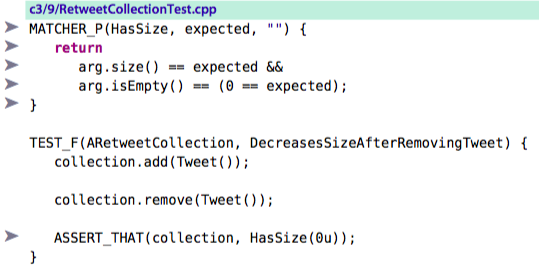
The MATCHER_P macro in Google Mock defines a custom matcher that accepts a single argument. See https://code.google.com/p/googlemock/wiki/CheatSheet for further information. You can use a simple helper method if your unit testing tool doesn’t support custom matchers.
The fourth option is to create tests that explicitly document the link between the two concepts. In a sense, these tests are a form of documenting invariants. From there on out, we can stop worrying about testing for emptiness in any additional tests.
c3/10/RetweetCollectionTest.cpp
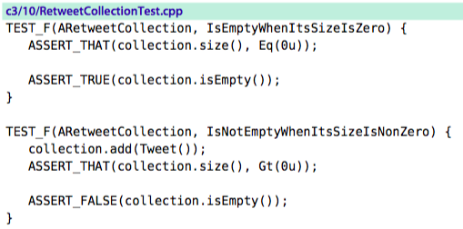
The asserts that relate to checking size in these two tests act as precondition assertions. They are technically unnecessary but in this case serve to bolster the relationship between the two concepts.
I will usually prefer the fourth option, though sometimes find the third useful. TDD is not an exact science. It provides room for many different approaches, meaning that you must stop and assess the situation from time to time and choose a solution that works best in context.
Overcoding
If you’ve programmed for any length of time, you have a normal tendency to jump right with what you know is needed for an end solution.
These inclinations and intuitions about what the code needs to do are what makes a good programmer. You don’t have to discard these thoughts that come to mind.
But to succeed with TDD, you must ensure that you introduce these concepts incrementally and with tests. Keeping to the red-green-refactor rhythm provides many safeguards and also helps grow the number and coverage of unit tests.
You might omit a number of useful tests as a result. – You can instead incrementally grow the underlying data structure, using failing tests as proof for a need to generalize the solution.
Sometimes you’ll realize that you don’t even need a map. Resisting a morei-than-necessary implementation allows you to keep the code simpler in the meantime. You’ll also avoid permanent over-complexity when there’s a simpler end solution.
Writing tests for things like exception handling means that client programmers will have an easier time understanding how to interact with your class. You force yourself to clearly understand and document the scenarios in which problems can occur.
Learning to produce just enough code is one of the more challenging facets of TDD, but it can pay off dramatically. Sticking to red-green-refactor can help reinforce the incremental approach of TDD.
Testing for confidence
Sometimes you just don’t know what the code does in certain cases. Test-driving generated what you believe to be a complete solution, but you’re not sure. “Does our algorithm handle this case?” You write the corresponding test as a probe of the solution. If it fails, you’re still in the red-green-refactor cycle, with a failing test prodding you to write the code that handles the new case.
If your probe passes, great! The system works as you hoped. You can move on. But should you keep or discard the new test? – Your answer should reflect its documentation value. Does it help a future consumer or developer to understand something important? Does it help better document why another test fails? If so, retain the test. Otherwise, remove it.
Writing a test to probe behavior represents an assumption you’re making about the system that you want to verify. You might liken testing for confidence to Invalid Assumptions About the System, on page 62. The distinction is that every time you write a test, you should know whether you expect it to fail or pass.
- If you expect a test to fail and you’re surprised when it doesn’t, you’ve made an invalid assumption.
- If you write a test that you expect to pass, you’re testing for confidence.
Stop and Think
Premature passes should be fairly rare. But they’re significant, particularly when you’re learning to practice TDD. Each time one occurs, ask yourself these questions:
- What did I miss?
- Did I take too large a step?
- Did I make a dumb mistake?
- What might I have done differently?
Like compiler warnings, you always want to listen to what premature passes are telling you.
3.6 Mind-Sets for Successful Adoption of TDD
TDD is a discipline to help you grow a quality design, not just a haphazard approach to verifying pieces of a system.
Incrementalism
TDD is a way to grow a codebase from nothing into a fully functional system, bit by bit (or unit by unit). Every time you add a new unit of behavior into the system, you know it all still works—you wrote a test for the new behavior, and you have tests for every other unit already built. You don’t move on unless everything still works with the new feature in place. Also, you know exactly what the system was designed to do, because your unit tests describe the behaviors you drove into the system.
The incremental approach of TDD meshes well with an Agile process (though you can certainly use TDD in any process, Agile or not). Agile defines short iterations (typically a week or two) in which you define, build, and deliver a small amount of functionality. Each iteration represents the highest-priority features the business wants. The business may completely change priorities with each subsequent iteration. They may even choose to cancel the project prematurely. That’s OK, because by definition you will have delivered the features that the business wanted most.
TDD offers support in the small for a similar incremental mind-set. You tackle units one by one, defining and verifying them with tests. At any given point, you can stop development and know that you have built everything the tests say the system does. Anything not tested is not implemented, and anything tested is implemented correctly and completely.
Test Behavior, Not Methods
A common mistake for TDD newbies is to focus on testing member functions.
But fully covering add behavior requires coding to a few different scenarios. The result is that you must lump a bunch of different behaviors into a single test. The documentation value of the tests diminishes, and the time to understand a single test increases.
Instead, focus on behaviors or cases that describe behaviors.
As a result, you can holistically look at the test names and know exactly the behaviors that the system supports.
Using Tests to Describe Behavior
Think of your tests as examples that describe, or document, the behavior of your system.
The full understanding of a well-written test is best gleaned by combining two things:
- the test name, which summarizes the behavior exhibited given a specific context,
- the test statements themselves, which demonstrate the summarized behavior for a single example.
The more you think about TDD as documentation, the more you understand the importance of a high-quality test. The documentation aspect of the tests is a by-product of doing TDD. To ensure your investment in unit tests returns well on value, you must ensure that others can readily understand your tests. Otherwise, your tests will waste their time.
Good tests will save time by acting as a trustworthy body of comprehensive documentation on the behaviors your system exhibits. As long as all your tests pass, they accurately impart what the system does. Your documentation won’t get stale.
Keeping it Simple
The cost of unnecessary complexity never ends.
Developers create unnecessary complexity for numerous reasons.
- Time pressure: Haste allows complexity to grow, which slows you down in so many ways (comprehension, cost of change, build time).
- Lack of education: Seek honest feedback from teammates through pairing and other review forms. Learn how to recognize design deficiencies and code smells. Learn how to correct them with better approaches—take advantage of the many great books on creating clean designs and code.
- Existing complexity: convoluted legacy codebase
- Fear of changing code: Without fast tests, you don’t always do the right things in code. “If it ain’t broke, don’t fix it.” Fear inhibits proper refactoring toward a good, sustainable design. With TDD, every green bar you get represents an opportunity to improve the codebase (or at least prevent it from degrading). Incremental Design is dedicated to doing the right things in code.
- Speculation: Instead, wait until you really need it. It usually won’t cost anything more.
Simplicity is how you survive in a continually changing environment.
Your best defense is a simple design:
- code that is readable,
- code that doesn’t exhibit duplication,
- code that eschews other unnecessary complexities.
These characteristics maximally reduce your maintenance costs.
Sticking to the Cycle
Not following red-green-refactor will cost you. See Section 3.5, Getting Green on Red, on page 60 for many reasons why it’s important to first observe a red bar. Obviously, not getting a green when you want one means you’re not adding code that works. More importantly, not taking advantage of the refactoring step of the cycle means that your design will degrade. Without following a disciplined approach to TDD, you will slow down.
3.7 Mechanics for Success best practice technique
The prior section, Section 3.6, Mind-Sets for Successful Adoption of TDD, on page 69, emphasizes a philosophy for success with TDD. This section discusses various specific techniques that will help keep you on track.
What’s the Next Test?
One of the biggest questions: “What’s the next test I should write?”
One answer is to write the test that results in the simplest possible increment of production code. But just what does that mean?
The Transformation Priority Premise (TPP): Uncle Bob has devised a scheme to categorize each increment as a transformation form (see Section 10.4, The Transformation Priority Premise, on page 281). All transformations are prioritized from simplest (highest priority) to most complex (lowest priority). Your job is to choose the transformation with the highest-priority order and write the test that generates that transformation. Incrementing in transformation priority order will produce an ideal ordering of tests. – The TPP is complex, since it’s been demonstrated to provide value for many algorithmic-oriented solutions.
Otherwise, you can use the following list of questions to help decide:
- What’s the next most logically meaningful behavior?
- What’s the smallest piece of that meaningful behavior you can verify?
- Can you write a test that demonstrates that the current behavior is insufficient?
Tips:
- We seek meaningful behavior with each new test. That means we don’t directly test-drive getters, setters, or constructors.
- Sometimes it’s worth considering exceptional cases early on, before you get too deep in all the happy path cases. Other times, you can save them until later. You can often code an exceptional test in a short time, needing only a small bit of minimally invasive code to make it pass.
- Each small test increment builds upon a prior small increment with minimal impact.
Over time, you’ll get a good mental picture of the implementation required to get a given test to pass. Your job is to make life easy on yourself, so you’ll get better at choosing the test that corresponds to the implementation with the simplest increment.
You will make less than ideal choices from time to time when choosing the next test. See Suboptimal Test Order, on page 62, for an example. A willingness to backtrack and discard a small bit of code can help you better learn how to take more incremental routes through an implementation.
If the time limit hits, discard your current effort and start over. A good version control tool like git makes reverting easy, rapid, effective, and very safe.
Ten-Minute Limit
TDD depends on short feedback cycles.
From time to time, you’ll struggle getting a test to pass. Or you’ll attempt to clean up some code but break a few tests in the process. Or you’ll feel compelled to bring up the debugger to understand what’s going on.
Struggle is expected, but set a limit on the length of your suffering. Allow no more than ten minutes to elapse from the time your tests last passed. It is important to realize when your attempt at a solution derails.
If the time limit hits, discard your current effort and start over. A good version control tool like git makes reverting easy, rapid, effective, and very safe.
Don’t get overly attached to code, particularly not code you struggled with. Throw it out with extreme prejudice. It’s at most ten minutes of code, and your solution was likely poor. Take a short break, clear your mind, and approach the problem with a new, improved outlook.
If you were stymied by something that didn’t work before, take smaller steps this second time and see where that gets you. Introduce additional asserts to verify all questionable assumptions. You’ll at least pinpoint the very line of code that caused the problem, and you’ll probably build a better solution.
Defects
TDD gives you the potential to have close to zero defects in your new code. (15 defects during its first 11 months in production).
Your dumb logic defects will almost disappear with TDD. What will remain? It will be all the other things that can and do go wrong:
- conditions no one ever expected,
- external things out of sync (for example, config files),
- curious combinations of behavior involving several methods and/or classes
- specification problems, including inadvertent omissions and misunderstandings between you and the customer.
When QA or support finally does shove a defect in your face, what do you do? Well, you’re test-driving. – You might first write a few simple tests to probe the existing system. Tests with a tighter focus on related code might help you better understand how the code behaves, which in turn might help you decipher the failure. You can sometimes retain these probes as useful characterization tests (Chapter 8, Legacy Challenges, on page 195). Other times, you discard them as one-time tools.
Once you think you’ve pinpointed the problem source, don’t simply fix it and move on. This is TDD! -> Instead,
- write a test that you think emulates the behavior that exposed the defect. Ensure that the test fails (red!).
- Fix it (green!).
- Refactor (refactor!).
Disabling Tests
Normally, work on one thing at a time when test-driving code. Occasionally you’ll find yourself with a second test that fails while you’re working on getting a first test to pass. Having another test always fail means that you won’t be able to follow the red-green-refactor cycle for the first test (unless they are both failing for the same reason).
Instead of allowing the second, failing test to distract you or divert your attention, you can disable it temporarily. Mark the test as disabled. Many tools support the ability to explicitly disable a test and can remind you when you run your tests that one or more tests are disabled. The reminder should help prevent you from the crime of accidentally checking in disabled tests.
Using Google Mock, you disable a test by prepending DISABLED_ to its name.
TEST(ATweet, DISABLED_RequiresUserNameToStartWithAnAtSign)
When you run your test suite, Google Mock will print a reminder at the end to let you know you have one or more disabled tests.
Don’t check in code with disabled (or commented-out) tests unless you have a really good reason. The code you integrate should reflect current capabilities of the system. Commented-out tests (and production code too) waste time for other developers.
3.8 Teardown
In this chapter, you learned key fundamentals about TDD, including how it differs from unit testing, how to follow the TDD cycle (and what to do when it doesn’t go as expected), and some important mind-sets and mechanisms for success with TDD. The underlying concepts and philosophies covered here provide the foundation for moving forward with TDD.
In the next chapter, you’ll learn some nuts and bolts about how to translate these concepts into actual tests.
4. Test Construction
4.1 Setup
This chapter delves into the specifics of implementing your tests: file organization, fixtures, setup, teardown, filters, assertions, and exceptionbased assertions, plus a few other odds and ends.
4.2 Organization
How do you organize your tests, from both a file standpoint and a logical one?
In this section, you’ll learn about
- how to group your tests using fixtures, as well as
- how to take advantage of their setup and teardown hooks.
- how to approach organization within your tests as well, using the concept of Given-When-Then (also known as Arrange-Act-Assert).
File Organization
You test-drive related behavior by defining tests in a single test file. Don’t create a header file for your test functions—it demands extra effort for no value.
You may also have one test file cover behavior located in a few areas. Don’t limit yourself to one test file per class. Setup and Teardown, on page 81, provides one reason why you’d want multiple test files per class.
Name the file based on the tests it contains. Summarize the related behavior and encode it in the test name. A consistent naming convention will help programmers readily locate the tests they seek.
Fixtures
Most unit testing tools let you logically group related tests. In Google Mock, you group related tests using what Google calls the test case name.
The following test declaration has a test case name of ARetweetCollection. IncrementsSizeWhenTweetAdded is the name of a test within the test case.
TEST(ARetweetCollection, IncrementsSizeWhenTweetAdded)
Related tests need to run in the same environment. You’ll have many tests that require common initialization or helper functions. Many test tools let you define a fixture —a class that provides support for cross-test reuse.
In Google Mock, you define a fixture as a class derived from ::testing::Test. You typically define the fixture at the beginning of your test file.
using namespace ::testing; class ARetweetCollection: public Test { };
To give a test access to members defined in the fixture class, you must change the TEST macro definition to TEST_F (the trailing F stands for fixture).
The test case name must match the fixture name! If not or if you forget to append _F to the macro name, you’ll get a compile error where the tests reference elements from the fixture.
Creation of a collection variable is a detail that test readers don’t usually need to see in order to understand what’s going on. Moving the instantiation to a fixture removes that distraction from each of the two tests in this example. If you remove an element from a test in this manner, reread the test. If its intent remains clear, great. If not, undo the change, or consider renaming the variable to make the intent obvious.
You can and should also move all common functions into the fixture, particularly if you are not enclosing your tests within a namespace.
Setup and Teardown
If all of the tests in a test case require one or more statements of common initialization, you can move that code into a setup function that you define in the fixture. In Google Mock, you must name this member function SetUp (it overrides a virtual function in the base class ::testing::Test).
For each test belonging to the fixture, Google Mock creates a new, separate instance of the fixture. This isolation helps minimize problems created when the statements executed in one test impact another test. –> The implication is that each test must create its own context from scratch and not depend upon the context created by any other tests. After creating the fixture instance, Google Mock executes the code in SetUp() and then executes the test itself.
Both of the following tests add a Tweet object to the collection in order to create an initial context:
c3/14/RetweetCollectionTest.cpp
TEST_F(ARetweetCollection, IsNoLongerEmptyAfterTweetAdded) { collection.add(Tweet()); ASSERT_FALSE(collection.isEmpty()); } TEST_F(ARetweetCollection, HasSizeOfOneAfterTweetAdded) { collection.add(Tweet()); ASSERT_THAT(collection.size(), Eq(1u)); }
We define a new fixture for RetweetCollection tests that represents a collection populated with a single tweet. We choose a fixture name that describes that context: ARetweetCollectionWithOneTweet.
c3/15/RetweetCollectionTest.cpp
class ARetweetCollectionWithOneTweet: public Test { public: RetweetCollection collection; void SetUp() override { collection.add(Tweet()); } };
We take advantage of the common initialization, creating tests that are ever- so-simpler to read.
c3/15/RetweetCollectionTest.cpp
TEST_F(ARetweetCollectionWithOneTweet, IsNoLongerEmpty) { ASSERT_FALSE(collection.isEmpty()); } TEST_F(ARetweetCollectionWithOneTweet, HasSizeOfOne) { ASSERT_THAT(collection.size(), Eq(1u)); }
When removing duplication, be careful not to remove information critical to understanding the test. – Find a way to make the test more explicit.
We can avoid having to encode redundant descriptions of our context into each test name by using fixtures with names that describe the context: The first test previously had the test case.test name combination ARetweetCollection.IsNoLongerEmptyAfterTweetAdded (Google Mock refers to this combination as its full name). Now the full name is ARetweetCollectionWithOneTweet.IsNoLongerEmpty.
We have one more test we can clean up.
c3/15/RetweetCollectionTest.cpp
TEST_F(ARetweetCollection, IgnoresDuplicateTweetAdded) { Tweet tweet("msg", "@user"); Tweet duplicate(tweet); collection.add(tweet); collection.add(duplicate); ASSERT_THAT(collection.size(), Eq(1u)); }
We choose to use the more interesting tweet for all tests.
We can use regular ol’ C++ pointers that we delete in a teardown function.
c3/17/RetweetCollectionTest.cpp
class ARetweetCollectionWithOneTweet: public Test { public: RetweetCollection collection; void SetUp() override { collection.add(Tweet("msg", "@user")); // <---- } void TearDown() override { delete tweet; tweet = nullptr; } };
The teardown function is essentially the opposite of the setup function. It executes after each test, even if the test threw an exception.
You use the teardown function for cleanup purposes
- to release memory (as in this example),
- to relinquish expensive resources (for example, database connections),
- or to clean up other bits of state, such as data stored in static variables.
The exciting payoff is that we are able to reduce the number of lines in the test from five to three that represent the core of what we’re demonstrating in the test.
c3/17/RetweetCollectionTest.cpp
TEST_F(ARetweetCollectionWithOneTweet, IgnoresDuplicateTweetAdded) { Tweet duplicate(*tweet); // <---- collection.add(duplicate); ASSERT_THAT(collection.size(), Eq(1u)); }
Here’s a version of the fixture that uses smart pointers:
c3/18/RetweetCollectionTest.cpp
class ARetweetCollectionWithOneTweet: public Test { public: RetweetCollection collection; shared_ptr<Tweet> tweet; void SetUp() override { tweet = shared_ptr<Tweet>(new Tweet("msg", "@user")); collection.add(*tweet); } };
Note: Setup initialization code should apply to all associated tests. Setup context that only a fraction of tests use creates unnecessary confusion. If some tests require a tweet and some tests don’t, create a second fixture and apportion the tests appropriately.
Warning: Don’t hesitate to create additional fixtures. But each time you create a new fixture, determine whether that need represents a design deficiency in the production code. The need for two distinct fixtures might indicate that the class you’re testing violates the SRP, and you might want to split it into two.
Arrange-Act-Assert/Given-When-Then
Tests have a common flow. Your tests should declare intent with as much immediacy as possible. A reader should readily understand the essential elements of a test’s setup (arrange), what behavior it executes (act), and how that behavior gets verified (assert).
The mnemonic Arrange, Act, Assert (AAA, usually spoken as triple-A), devised by Bill Wake, reminds you to visually organize your tests for rapid recognition.
For example, from
c3/14/RetweetCollectionTest.cpp
TEST_F(ARetweetCollection, IgnoresDuplicateTweetAdded) { Tweet tweet("msg", "@user"); Tweet duplicate(tweet); collection.add(tweet); collection.add(duplicate); ASSERT_THAT(collection.size(), Eq(1u)); }
to:
c3/13/RetweetCollectionTest.cpp
TEST_F(ARetweetCollection, IgnoresDuplicateTweetAdded) { Tweet tweet("msg", "@user"); Tweet duplicate(tweet); collection.add(tweet); collection.add(duplicate); ASSERT_THAT(collection.size(), Eq(1u)); }
Some test-drivers prefer the mnemonic Given-When-Then.
- Given a context,
- When the test invokes some behavior,
- Then some result is verified. (The cleanup task isn’t part of the mnemonic; it’s considered housekeeping with minimal significance to an understanding of the behavior your test verifies. You might also hear the phrase Setup—Execute—Verify (—Teardown).)
Given-When-Then provides a slight additional connotation that your focus when doing TDD is on verifying behavior, not executing tests. It also aligns with an analogous concept used for Acceptance Test–Driven Development (see Section 10.3, Unit Tests, Integration Tests, and Acceptance Tests, on page 278).
The concept of AAA won’t shatter any earths, but applying it consistently will eliminate unnecessary friction that haphazardly organized tests create for the reader.
4.3 Fast Tests, Slow Tests, Filters, and Suites
A typical test might run in less than a millisecond on a decent machine. With that speed, you can run at least thousands of unit tests in a couple seconds.
Dependencies on collaborators that interact with slow resources such as databases and external services will slow things down.
You’ll learn how to begin breaking those dependencies on slow collaborators in the chapter Test Doubles. Building fast tests might represent the difference between succeeding with TDD and abandoning it prematurely. Why?
A core goal of doing TDD is to obtain as much feedback as possible as often as possible.
If instead your tests complete executing in more than a few seconds, you won’t run them as often.
TDD begins to diminish in power as the feedback cycle lengthens. The longer the time between feedback, the more questionable code you will create.
Slow tests create such a problem for TDD that some folks no longer call them unit tests but instead refer to them as integration tests. (See Section 10.3, Unit Tests, Integration Tests, and Acceptance Tests, on page 278.)
Running a Subset of the Tests
You might already have a set of tests (a suite) that verifies a portion of your system. Chances are good that your test suite isn’t so fast, since most existing systems exhibit countless dependencies on slow collaborators.
- The first natural reaction to a slow test suite is to run tests less frequently. That strategy doesn’t work if you want to do TDD.
- The second reaction is to run a subset of the tests all the time. While less than ideal, this strategy might just work, as long as you understand the implications.
Google Mock makes it easy to run a subset of the tests by specifying what is known as a test filter.
./test --gtest_filter=ATweet.CanBeCopyConstructed # weak ./test --gtest_filter=ATweet.* # slightly less weak ./test --gtest_filter=*weet*.*
What if you want to run all tests related to tweets but avoid any construction tests for the Tweet class? Google Mock lets you create complex filters.
./test --gtest_filter=*Retweet*.*:ATweet.*:-ATweet*.*Construct*
You use a colon (:) to separate individual filters. Once Google Mock encounters a negative sign (hyphen), all filters thereafter are subtractive.
So, what’s the problem with running a subset of the tests?
- The more tests you can run in a short time, the more likely you will know the moment you introduce a defect.
- The fewer tests you run, the longer it will be on average before you discover a defect.
–> In general, the longer the time between introducing a defect and discovering it, the longer it will take to correct. There are a few simple reasons.
- First, if you’ve worked on other things in the interim, you will often expend additional time to understand the original solution.
- Second, newer code in the area may increase the comprehension effort required as well as the difficulty of making a fix.
Many unit test tools (but not Google Mock) directly support the ability to permanently specify arbitrary suites.
Test Triaging
I worked recently with a customer that had a sizable C++ codebase. They had embarked on TDD not long before my arrival and had built a few hundred tests. The majority of their tests ran slowly, and the entire test run took about three minutes, far too long for the number of tests in place. Most tests took about 300 or more milliseconds to execute.
UsingGoogleMock,wequicklywroteatestlistenerwhosejobwastoproduceafile,slowTests.txt, containing a list of tests that took longer than 10ms to execute. We then altered Google Mock code to support reading a list of filters from a file. That change essentially provided suite support for Google Mock. We then changed Google Mock to support running the converse of a specified filter. Using the slowTests.txt file, the team could run either the slow subset of all tests or the fast subset of all tests. The slow suite took most of the three minutes to run (see Section 10.3, Unit Tests, Integration Tests, and Acceptance Tests, on page 278); the fast suite took a couple seconds.
We altered Google Mock to fail if an individual test exceeded a specified number of milliseconds (passed in as a command-line argument named slow_test_threshold). The customer then configured the continuous integration (CI) build to first run the fast test suite, triggering it to fail if any test was too slow, and then to run the slow suite.
We told the developers to run the fast suite continually at their desk as they test-drove code. The developers were to specify the slow_test_threshold value as they ran fast tests, so they knew as soon as they introduced an unacceptably slow test. Upon check-in, they were to run both slow and fast suites. We asked the developers to try to shrink the size of slowTests.txt over time, by finding ways to eliminate bad dependencies that made those tests run slowly (see the chapter Test Doubles).
The team got the message and ended up with the bulk of their unit tests as fast tests. Last I heard, they were rapidly growing their test-driven codebase successfully.
I’ve helped a few teams through a similar process of test triaging. Often it’s the 80-20 rule: 20 percent of the tests take 80 percent of the execution time. Bucketing the tests into fast and slow suites allows a team to quickly improve their ability to do TDD.
- The ability to define suites provides the basis for splitting tests so that you can run fast tests only.
- The identification of the slow tests allows you to incrementally transform crummy slow tests into spiffy fast tests.
You will usually need integration tests (tests that must integrate with external services; see Section 10.3, Unit Tests, Integration Tests, and Acceptance Tests, on page 278). They will be slow. Having the ability to arbitrarily define suites allows you to maintain many collections of tests that you run in the CI build as appropriate.
4.4 Assertions
TDD generates automated unit tests, which self-verify (see Section 7.2, Tests Come FIRST, on page 173).
Each assertion encountered represents an attempt to verify that something occurred as expected. The framework stores information about the test failure, runs any teardown logic, and moves on to another test.
Some tools, Google Mock included, provide an alternate assertion mechanism that allows a test to continue executing even if the assertion fails. These assertions are known as nonfatal assertions (in contrast to fatal assertions that abort the test).
Your production tests should use fatal assertions. If you strive for one assert per test (Section 7.3, One Assert per Test, on page 178), you’ll rarely have code that executes after that sole assertion.
When designing tests or deciphering test failures, you might use additional assertions as probes. You would normally remove such probes when you’re ready to check in code.
Classic Form Assertions
Most, if not all, frameworks support what I’ll refer to as classic-form asserts. They follow a pattern first set out with SUnit, a Smalltalk unit testing framework built in the 1990s.
You might also consider the more literary form of assertions known as Hamcrest (see Hamcrest Assertions, on page 91).
The two core workhorse assertions for Google Mock (classic-form asserts):
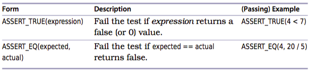
Google Mock, like most C++ unit-testing frameworks, uses macros to implement the behavior for assertions.
Most frameworks provide several additional assertion forms designed to improve expressiveness.
- ASSERT_FALSE
- ASSERT_GT
- ASSERT_LT
Hamcrest Assertions
The most prevalent assertion, comparing two values for equality (ASSERT_EQ in Google Mock), is idiomatic. You have to remember that the expected value comes first. It would sound like “Assert equals the expected value of 5 to the actual value of x.”
Hamcrest assertions were introduced into unit testing tools several years ago in an attempt to improve the expressiveness of tests, the flexibility of creating complex assertions, and the information supplied by failure messages.
Hamcrest uses matchers (“Hamcrest” is an anagram of “matchers”) to declare comparisons against actual results. Matchers can be combined to build complex yet easily understood comparison expressions. You can also create custom matchers.
string actual = string("al") + "pha"; ASSERT_THAT(actual, Eq("alpha"));
Hamcrest can seem like overkill initially. But the wealth of matchers should make it clear that Hamcrest provides ample opportunities for high levels of expressiveness in your tests. Many of the matchers can actually reduce the amount of code you write at the same time they increase the abstraction level in your tests.
ASSERT_THAT(actual, StartsWith("alx"));
A list of the provided matchers appears in the Google Mock documentation.
You’ll want to add a using declaration to your test file.
using namespace ::testing;
Otherwise, the assertions that you so dearly want to be expressive will be filled with clutter.
ASSERT_THAT(actual, ::testing::StartsWith("al"));
The value of using Hamcrest increases even more with the improved readability of the failure messages.
Expected: starts with "alx" Actual: "alpha" (of type std::string)
The ability to combine matchers can reduce multiple lines needed to assert something into a single-line assertion.
ASSERT_THAT(actual,
AllOf(StartsWith("al"), EndsWith("ha"), Ne("aloha")));
In this example, AllOf indicates that all of the matcher arguments must succeed in order for the entire assert to pass. Thus, the actual string must start with "al", end with "ha", and not be equal to "aloha".
Most developers eschew the use of Hamcrest for assertions against boolean values and prefer to use the classic-form assertion instead.
ASSERT_TRUE(someBooleanExpression); ASSERT_FALSE(someBooleanExpression);
Finally, if the set of matchers Google Mock provides is insufficient for your needs, you can create custom matchers.
Choosing the Right Assertion
The goal of an assertion in your test is to succinctly describe the expected outcome of preceding statements executed in the test. Usually you want the assertion to be specific.
ASSERT_THAT(tweetsAdded, Eq(3));
Weaker comparisons can at times be more expressive, but most of the time you want to avoid them.
ASSERT_THAT(tweetsAdded, Gt(0)); // avoid broad assertions
Most of your assertions should use the equality form. You could technically use the ASSERT_TRUE form for everything, but the equality form assertions (Hamcrest or not) provide a better message when an assertion does fail.
However, when you use an equality form…
ASSERT_THAT(tweetsAdded, Eq(3));
the failure message tells you what the assertion expected plus what was actually received.
Value of: tweetsAdded Expected: is equal to 3 Actual: 5 (of type unsigned int)
The wording of the failure message is why you always want to specify the expected and actual values in the correct order. Unintentionally reversing the order creates a confusing failure message that will take additional time to decipher. If you use ASSERT_THAT(), the actual value comes first; if you use ASSERT_EQ(), the expected value comes first.
Comparing Floats
Floating-point numbers are imprecise binary representations of real numbers. As such, the result of a float-based calculation might not exactly match another float value, even though it appears as if they should.
Google Mock and other tools provide special assertion forms that allow you to compare two floating-point quantities using a tolerance. If the two quantities differ by an amount greater than the tolerance, the assertion fails. Google Mock provides a simpler comparison by using units in the last place (ULPs) as the default tolerance.
ASSERT_THAT(x + y, DoubleEq(4.56));
Tip: ULPs and comparing floating-point numbers are complex topics (http://www.cygnus-software.com/papers/comparingfloats/comparingfloats.htm.
Exception-Based Tests
Your intimate knowledge of the code paths is what allows you to know when you need to worry about handling exceptions.
When doing TDD, you drive code to handle these concerns into your system by first writing a failing test. The result is a test that documents to other developers—who don’t have your intimate knowledge of the code paths—what could go wrong and what should happen when it does. A client developer armed with this knowledge can consume your classes with much higher confidence.
Suppose you are testing a bit of code that throws an exception under certain circumstances. Your job as a professional is to document that case in a test.
Some unit testing frameworks allow you to declare that an exception should be thrown and fail the test if an exception is not thrown. Using Google Mock, we code the following:
c3/12/TweetTest.cpp
TEST(ATweet, RequiresUserToStartWithAtSign) { string invalidUser("notStartingWith@"); ASSERT_ANY_THROW(Tweet tweet("msg", invalidUser)); }
The ASSERT_ANY_THROW macro fails the test if the expression it encloses does not throw an exception. We run all the tests and await the failure of this test.
Expected: Tweet tweet("msg", invalidUser) throws an exception.
Actual: it doesn't.
Here is corresponding code that gets the test to pass:
c3/12/Tweet.h
Tweet(const std::string& message="", const std::string& user=Tweet::NULL_USER) : message_(message) , user_(user) { if (!isValid(user_)) throw InvalidUserException(); } bool isValid(const std::string& user) const { return '@' == user[0]; }
If you know the type of the exception that will be thrown, you can specify it.
c3/12/TweetTest.cpp
TEST(ATweet, RequiresUserToStartWithAnAtSign) { string invalidUser("notStartingWith@"); ASSERT_THROW(Tweet tweet("msg", invalidUser), InvalidUserException); }
The failure message tells you when the expected exception type does not match what was actually thrown.
Expected: Tweet tweet("msg", invalidUser) throws an exception
of type InvalidUserException.
Actual: it throws a different type.
If your framework does not support a single-line declarative assert that ensures an exception is thrown, you can use the following structure in your test:
c3/12/TweetTest.cpp
TEST(ATweet, RequiresUserNameToStartWithAnAtSign) { string invalidUser("notStartingWith@"); try { Tweet tweet("msg", invalidUser); FAIL(); } catch (const InvalidUserException& expected) {} }
We could code this in a number of ways, but I prefer the technique shown here. It’s the generally preferred idiom in the TDD community.
You might also need to use the try-catch structure if you must verify any postconditions after the exception is thrown. For example, you may want to verify the text associated with the thrown exception object.
c3/13/TweetTest.cpp
TEST(ATweet, RequiresUserNameToStartWithAtSign) { string invalidUser("notStartingWith@"); try { Tweet tweet("msg", invalidUser); FAIL(); } catch (const InvalidUserException& expected) { ASSERT_STREQ("notStartingWith@", expected.what()); } }
Note the use of ASSERT_STREQ. Google Mock supplies four assertion macros (ASSERT_STREQ, ASSERT_STRNE, ASSERT_STRCASEEQ, and ASSERT_STRCASENE) designed to support C-style (null-terminated) strings, in other words, char* variables.
4.5 Inspecting Privates
New test-drivers inevitably ask two questions:
- Is it OK to write tests against private member data?
- What about private member functions?
These are two related but distinct topics that both relate to design choices you must make.
Private Data
Tell-Don't-Ask concept: you should tell an object to do something and let that object go off and complete its work.
-> If you ask lots of questions of the object, you’re violating Tell-Don’t-Ask. A system consisting of excessive queries to other objects will be entangled and complex. –> coding duplicate bits of logic to handle the responses
An object told to do something will sometimes delegate the work to a collaborator object. Accordingly, a test would verify the interaction—“Did the collaborator receive the message?”—using a test double (see Test Doubles). This is known as interaction-based testing.
Still, not all interactions require spying on collaborators. When test-driving a simple container, for example, you’ll want to verify that the container holds on to any objects added. Simply ask the container what it contains using its public interface and assert against the answer. Tests that verify by inspecting attributes of an object are known as state-based tests.
Tip: It’s only fair game to allow clients to know what they themselves stuffed into an object. Add an accessor. (If you’re worried about evil clients using this access for cracking purposes, have the accessor return a copy instead.)
Tip: You might have the rare need to hold onto the result of some intermediate calculation/—essentially a side effect of making a function call that will be used later. It’s acceptable to create an accessor to expose this value that might not otherwise need to be part of the interface for the class. You might declare the test as a friend of the target class, but /don’t do that. Add a brief comment to declare your intent.
public: // exposed for testing purposes; avoid direct production use: unsigned int currentWeighting;
Exposing data solely for the purpose of testing will bother some folks, but it’s more important to know that your code works as intended.
Excessive state-based testing is a design smell, however. Any time you expose data solely to support an assertion, think about how you might verify behavior instead. Refer to Schools of Mock, on page 134, for further discussion of state vs. interaction testing.
Private Behavior
When test-driving, everything flows from the public interface design of your class. To add detailed behavior, you test-drive it as if your test were a production client of the class. As the details get more detailed and the code more complex, you’ll find yourself naturally refactoring to additional extracted methods. You might find yourself wondering if you should directly write tests against those extracted methods.
Most of the time, when you feel compelled to test private behavior, instead move the code to another class or to a new class.
Tip: Asking about the type of book still exhibits possible feature envy. The switch statement represents another code smell. Replacing it with a polymorphic hierarchy would allow us to create more direct, more focused tests.
Q.: Won’t I end up with thousands of extra special-purpose classes by coding this way?
A.: You will end up with more classes, certainly, but not thousands more. Each class will be significantly smaller, easier to understand/test/maintain, and faster to build! (See Section 4.3, Fast Tests, Slow Tests, Filters, and Suites, on page 86.)
Q.: I’m not a fan of creating more classes.
A.: It’s where you start truly taking advantage of OO. As you start creating more single-purpose classes, each containing a small number of single-purpose methods, you’ll start to recognize more opportunities for reuse. It’s impossible to reuse large, highly detailed classes. In contrast, SRP-compliant classes begin to give you the hope of reducing your overall amount of code.
What if you’re dealing with legacy code? Suppose you want to begin refactoring a large class with dozens of member functions, many private. Like private behavior, simply relax access and add a few tests around some of the private functions. (Again, don’t worry about abuse; it doesn’t happen.) Seek to move the function to a better home later. See Legacy Challenges for more on getting legacy code under control.
4.6 Testing vs. Test-Driving: Parameterized Tests and Other Toys
TDD is less about testing than it is about design. Yes, you produce unit tests as a result of practicing TDD, but they are almost a by-product. -> It allows you to keep the design clean over time so that you may introduce new behavior or change existing behavior with high confidence and reasonable cost.
With a testing mentality, you seek to create tests that cover a breadth of concerns. You create tests for five types of cases: zero, one, many, boundary, and exceptional cases.
While both testing and test-driving are about providing enough confidence to ship code,
- you stop test-driving as soon you have the confidence that you’ve built all you need (and your tests all pass, of course).
- In contrast, a good tester seeks to cover the five types of cases as exhaustively as reasonable.
Usually, though, you stop as soon as you believe you have a correct and clean implementation that covers the cases you know you must support. Stated another way, stop once you can’t think of how to write a test that would fail.
The genesis of many code-level testing tools was to support the writing of tests, not to support doing TDD. As such, many tools provide sophisticated features to make testing easier. -> Question the desire: Does this feature suggest that I’m outside the bounds of TDD? Is there an approach that better aligns with the goals of TDD?
This section will cover, briefly, some tempting test tool features. [ME: but avoid to use them!]
Parameterized Tests
Perhaps it would be nice if you could simply iterate a list of expected inputs and outputs and pump this into a single test that took an input and an output as arguments. The parameterized tests feature exists in some test tools (Google Mock included) to support this need.
We use TEST_P, P for parameterized, to declare the test.
These are perfectly fine ideas, but you’re no longer in the realm of TDD.
Remember that a goal of TDD is to have tests that document behaviors by example, each named to aptly describe the unique behavior being driven in. Parameterized tests can meet this need, but more often than not, they simply act as tests.
Comments in Tests
Comments aren’t a test tool feature but a language feature. In both production code and test code, your best choice is to transform as many comments as you can into more-expressive code. The remaining comments will likely answer questions like “Why in the world did I code it that way?”
Outside of perhaps explaining a “why,” if you need a comment to explain your test, it stinks. Tests should clearly document class capabilities. You can always rename and structure your tests in a way (see Section 7.3, One Assert per Test, on page 178 and Arrange-Act-Assert/Given-When-Then, on page 84) that obviates explanatory comments.
–> Don’t summarize a test with a descriptive comment. Fix its name. Don’t guide readers through the test with comments. Clean up the steps in the test.
4.7 Teardown
Now you’re ready to tackle some bigger issues. How do you write tests against objects that must interact with other objects, particularly when those objects exhibit troublesome dependencies?
5. Test Doubles
5.1 Setup
The reality is that objects must work with other objects (collaborators) in a production OO system. Sometimes the dependencies on collaborators can cause pesky challenges for test-driving—they can be slow, unstable, or not even around to help you yet.
In this chapter, you will learn how to brush away those challenges using test doubles:
- how to break dependencies using handcrafted test doubles
- how you might simplify the creation of test doubles by using a tool.
- different ways of setting up your code so that it can use test doubles (injection techniques)
- the design impacts of using test doubles, as well as strategies for their best use.
5.2 Dependency Challenges
If an object A depends upon a collaborator object B in order to accomplish its work, A is dependent upon B.
Story: Place Description Service (This Nominatim Search Service is part of the Open MapQuest API. You can find details on the API at http://open.mapquestapi.com/nominatim.)
Why do these dependency concerns create testing challenges?
- First, a dependency on slow collaborators results in undesirably slow tests.
- Second, a dependency on a volatile service (either unavailable or returning different answers each time) results in intermittently failing tests.
The dependency concern of sheer existence can exist. You don’t have the time to sit and wait for someone else to complete their work, and you don’t have the time to create an HTTP class yourself.
5.3 Test Doubles
You can avoid being blocked, in any of these cases, by employing a test double. A test double is a stand-in—a doppelgänger (literally: “double walker”)—for a production class.
When a client sends a GET request to the HTTP object, the test double can return a canned response. The test itself determines the response that the test double should return.
Imagine you are on the hook to build the service but you aren’t concerned with unit testing it (perhaps you plan on writing an integration test). You have access to some classes that you can readily reuse.
- CurlHttp, which uses cURL to make HTTP requests. It derives from the pure virtual base class Http, which defines two functions, get() and initialize(). Clients must call initialize() before they can make calls to get().
- Address, a struct containing a few fields.
- AddressExtractor, which populates an Address struct from a JSON string using JsonCpp.
You might code the following:
CurlHttp http; http.initialize(); auto jsonResponse = http.get(createGetRequestUrl(latitude, longitude)); AddressExtractor extractor; auto address = extractor.addressFrom(jsonResponse); return summaryDescription(address);
Now imagine you want to add tests for that small bit of code. It won’t be so easy, because the CurlHttp class contains unfortunate dependencies you don’t want.
How will you write a test that sidesteps the dependency challenges of the CurlHttp class? In the next section, we’ll work through a solution.
5.4 A Hand-Crafted Test Double
To use a test double, you must be able to supplant the behavior of the CurlHttp class. C++ provides many different ways, but the predominant manner is to take advantage of polymorphism.
Let’s take a look at the Http interface that the CurlHttp class implements (realizes):
c5/1/Http.h:
virtual ~Http() {} virtual void initialize() = 0; virtual std::string get(const std::string& url) const = 0;
c5/1/PlaceDescriptionServiceTest.cpp:
TEST_F(APlaceDescriptionService, ReturnsDescriptionForValidLocation) { HttpStub httpStub; PlaceDescriptionService service{&httpStub}; auto description = service.summaryDescription(ValidLatitude, ValidLongitude); ASSERT_THAT(description, Eq("Drury Ln, Fountain, CO, US")); }
We define HttpStub directly in the test file so that we can readily see the test double’s behavior along with the tests that use it.
c5/1/PlaceDescriptionServiceTest.cpp:
class HttpStub: public Http { void initialize() override {} std::string get(const std::string& url) const override { return "???"; } };
Since the external Nominatim Search Service returns a JSON response, we should return an appropriate JSON response that will generate the description expected in our test’s assertion.
c5/2/PlaceDescriptionServiceTest.cpp:
class HttpStub: public Http { void initialize() override {} std::string get(const std::string& url) const override { return R"({ "address": { "road":"Drury Ln", "city":"Fountain", "state":"CO", "country":"US" }})"; } };
How did I come up with that JSON? I ran a live GET request using my browser (the Nominatim Search Service API page shows you how) and captured the resulting output.
From the test, we inject our HttpStub instance into a PlaceDescriptionService object via its constructor. We’re changing our design from what we speculated. Instead of the service constructing its own Http instance, the client of the service will now need to construct the instance and inject it into (pass it to) the service. The service constructor holds on to the instance via a base class pointer.
c5/2/PlaceDescriptionService.cpp:
PlaceDescriptionService::PlaceDescriptionService(Http* http) : http_(http) {}
Once we get our test to compile and fail, we code summaryDescription().
c5/2/PlaceDescriptionService.cpp:
string PlaceDescriptionService::summaryDescription( const string& latitude, const string& longitude) const { auto getRequestUrl = ""; auto jsonResponse = http_->get(getRequestUrl); AddressExtractor extractor; auto address = extractor.addressFrom(jsonResponse); return address.road + ", " + address.city + ", " + address.state + ", " + address.country; }
A test double that returns a hard-coded value is a stub. You can similarly refer to the get() method as a stub method.
We test-drove the relevant code into summaryDescription(). But what about the request URL? When the code you’re testing interacts with a collaborator, you want to make sure that you pass the correct elements to it. How do we know that we pass a legitimate URL to the Http instance?
In fact, we passed an empty string to the get() function in order to make incremental progress. We need to drive in the code necessary to populate getRequestUrl correctly. We could triangulate and assert against a second location (see Triangulation, on page 283).
Better, we can add an assertion to the get() stub method we defined on HttpStub.
c5/3/PlaceDescriptionServiceTest.cpp:
class HttpStub: public Http { void initialize() override {} std::string get(const std::string& url) const override { verify(url); // <----- return R"({ "address": { "road":"Drury Ln", "city":"Fountain", "state":"CO", "country":"US" }})"; } void verify(const string& url) const { auto expectedArgs( "lat=" + APlaceDescriptionService::ValidLatitude + "&" + "lon=" + APlaceDescriptionService::ValidLongitude); ASSERT_THAT(url, EndsWith(expectedArgs)); } };
Tip: Why did we create a separate method, verify(), for our assertion logic? It’s because of a Google Mock limitation: you can use assertions that cause fatal failures only in functions with void return. Refer to http://code.google.com/p/googletest/wiki/AdvancedGuide#Assertion_Placement.
The stub’s assertion tests the most important aspect of the URL: does it contain correct latitude/longitude arguments?
c5/3/PlaceDescriptionService.cpp:
string PlaceDescriptionService::summaryDescription( const string& latitude, const string& longitude) const { auto getRequestUrl = "lat=" + latitude + "&lon=" + longitude; auto jsonResponse = http_->get(getRequestUrl); // ... }
Our URL won’t quite work, since it specifies no server or document. We bolster our verify() function to supply the full URL before passing it to get().
c5/4/PlaceDescriptionServiceTest.cpp:
void verify(const string& url) const { string urlStart( "http://open.mapquestapi.com/nominatim/v1/reverse?format=json&"); string expected(urlStart + "lat=" + APlaceDescriptionService::ValidLatitude + "&" + "lon=" + APlaceDescriptionService::ValidLongitude); ASSERT_THAT(url, Eq(expected)); }
Once we get the test to pass, we undertake a bit of refactoring. Our summaryDescription() method violates cohesion, and the way we construct key-value pairs in both the test and production code exhibits duplication.
c5/4/PlaceDescriptionService.cpp:
#include "PlaceDescriptionService.h" #include "Http.h" #include "AddressExtractor.h" #include "Address.h" #include <string> using namespace std; PlaceDescriptionService::PlaceDescriptionService(Http* http) : http_(http) {} string PlaceDescriptionService::summaryDescription( const string& latitude, const string& longitude) const { auto request = createGetRequestUrl(latitude, longitude); auto response = get(request); return summaryDescription(response); } string PlaceDescriptionService::summaryDescription( const string& response) const { AddressExtractor extractor; auto address = extractor.addressFrom(response); return address.summaryDescription(); } string PlaceDescriptionService::get(const string& requestUrl) const { return http_->get(requestUrl); } string PlaceDescriptionService::createGetRequestUrl( const string& latitude, const string& longitude) const { string server{"http://open.mapquestapi.com/"}; string document{"nominatim/v1/reverse"}; return server + document + "?" + keyValue("format", "json") + "&" + keyValue("lat", latitude) + "&" + keyValue("lon", longitude); } string PlaceDescriptionService::keyValue( const string& key, const string& value) const { return key + "=" + value; }
There are several approaches we might take; for further discussion, refer to Implicit Meaning, on page 191.
The function keyValue() appears ripe for reuse. We can also sense that generalizing our design to support a second service would be a quick increment, since we’d be able to reuse some of the structure in PlaceDescriptionService.
Our test’s design is insufficient, however. For programmers not involved in its creation, it is too difficult to follow. Read on.
5.5 Improving Test Abstraction When Using Test Doubles
It’s easy to craft tests that are difficult for others to read. When using test doubles, it’s even easier to craft tests that obscure information critical to their understanding. <— ReturnsDescriptionForValidLocation is difficult to understand because it hides relevant information, violating the concept of test abstraction (see Section 7.4, Test Abstraction, on page 181).
c5/4/PlaceDescriptionServiceTest.cpp:
TEST_F(APlaceDescriptionService, ReturnsDescriptionForValidLocation) { HttpStub httpStub; PlaceDescriptionService service{&httpStub}; auto description = service.summaryDescription(ValidLatitude, ValidLongitude); ASSERT_THAT(description, Eq("Drury Ln, Fountain, CO, US")); }
Why do we expect the description to be an address in Fountain, Colorado? Readers must poke around to discover that the expected address correlates to the JSON address in the HttpStub implementation.
We must refactor the test so that stands on its own. -> Make the test is responsible for setting up the return value of its get() method.
c5/5/PlaceDescriptionServiceTest.cpp:
class HttpStub: public Http { public: string returnResponse; // <---- void initialize() override {} std::string get(const std::string& url) const override { verify(url); return returnResponse; // <---- } void verify(const string& url) const { // ... } }; TEST_F(APlaceDescriptionService, ReturnsDescriptionForValidLocation) { HttpStub httpStub; httpStub.returnResponse = R"({"address": { "road":"Drury Ln", "city":"Fountain", "state":"CO", "country":"US" }})"; // <---- PlaceDescriptionService service{&httpStub}; auto description = service.summaryDescription(ValidLatitude, ValidLongitude); ASSERT_THAT(description, Eq("Drury Ln, Fountain, CO, US")); }
Now the test reader can correlate the summary description to the JSON object returned by HttpStub.
We can similarly move the URL verification to the test.
c5/6/PlaceDescriptionServiceTest.cpp:
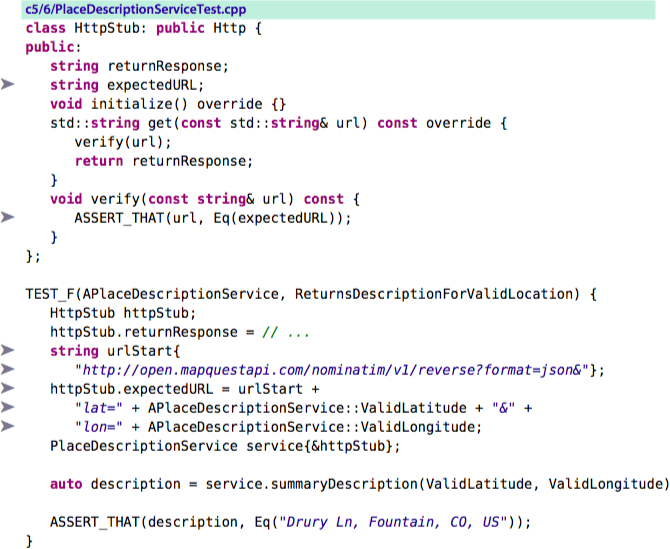
We pared down HttpStub to a simple little class that captures expectations and values to return. Since it also verifies those expectations, however, HttpStub has evolved from being a stub to becoming a mock. A mock is a test double that captures expectations and self-verifies that those expectations were met.
To test-drive a system with dependencies on things such as databases and external service calls, you’ll need several mocks. If they’re only simple little classes that manage expectations and values to return, they’ll all start looking the same. Mock tools can reduce some of the duplicate effort required to define test doubles.
5.6 Using Mock Tools
Mock tools such as Google Mock, CppUMock, or Hippo Mocks simplify your effort to define mocks and set up expectations. You’ll learn how to use Google Mock in this section.
Defining a Derivative
Let’s test-drive summaryDescription() again. We’ll need to mock the HTTP methods get() and initialize().
c5/7/Http.h:
virtual ~Http() {} virtual void initialize() = 0; virtual std::string get(const std::string& url) const = 0;
The first step in using the mock support built into Google Mock is to create a derived class that declares mock methods. Google Mock allows us to define the HttpStub derivative succinctly.
c5/7/PlaceDescriptionServiceTest.cpp
class HttpStub: public Http { public: MOCK_METHOD0(initialize, void()); MOCK_CONST_METHOD1(get, string(const string&)); };
MOCK_CONST_METHOD1 tells Google Mock to define a const member function taking one argument:
- The first macro argument, get(), represents the name of the member function.
- You supply the rest of the member function’s signature—its return value and argument declarations—as the second macro argument (string(const string&)).
MOCK_METHOD0 creates a nonconst, zero-argument override.
Google Mock also provides support for mocking template functions and for specifying the calling convention. Refer to http://code.google.com/p/googlemock/wiki/V1_6_CheatSheet#Defining_a_Mock_Class.
Google Mock translates a mock declaration into a member function defined on the derived class. Behind the scenes, Google Mock synthesizes an implementation for that function to manage interactions with it. If the member function doesn’t override the appropriate base class function, you won’t get the behavior you want.
(Under C++11, the override keyword lets the compiler verify that you’ve properly overridden a function. However, the MOCK_METHOD macros don’t yet accommodate the override keyword. See https://code.google.com/p/googlemock/issues/detail?id=157 for a patch that you can apply to Google Mock to fix this shortfall.)
Setting Expectations
We decide to delete our implementation of summaryDescription() and test-drive it again. We choose to shrink the scope of the first test. Instead of driving an implementation for all of summaryDescription(), we’ll drive in only the code that sends off an HTTP request. A new test name captures our intent.
c5/7/PlaceDescriptionServiceTest.cpp
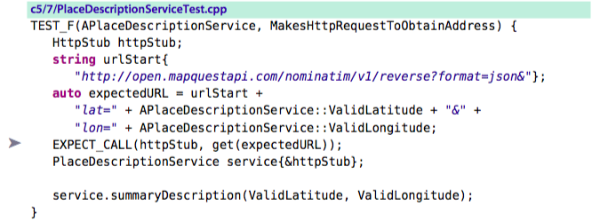
We use the EXPECT_CALL() macro to set up expectations as part of the test’s Arrange step (see Arrange-Act-Assert/Given-When-Then, on page 84). The macro configures Google Mock to verify that a message get() gets sent to the httpStub object with an argument that matches expectedURL.
Where’s the assertion? Google Mock does its verification when the mock object goes out of scope.
If needed, you can force Google Mock to run its verification before the mock goes out of scope.
Mock::VerifyAndClearExpectations(&httpStub);
We implement just enough of summaryDescription() to compile.
c5/7/PlaceDescriptionService.cpp
string PlaceDescriptionService::summaryDescription( const string& latitude, const string& longitude) const { return ""; }
Running our tests produces the following failure:
Actual function call count doesn't match EXPECT_CALL(httpStub, get(expectedURL))...
Expected: to be called once
Actual: never called - unsatisfied and active
That’s a good failure! We implement enough code to pass the test.
c5/8/PlaceDescriptionService.cpp
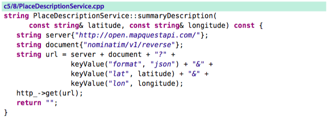
We write a second test to flesh out summaryDescription().
c5/9/PlaceDescriptionServiceTest.cpp
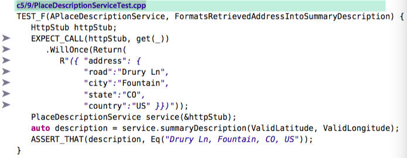
The EXPECT_CALL() invocation in the test tells Google Mock what to return from a call to get(). To paraphrase the code, a call on the HttpStub object to get() will once (and only once) return a specific JSON string value.
Our EXPECT_CALL() uses the wildcard matcher _ (an underscore; its qualified name is testing::_) as an argument to get(). The wildcard allows Google Mock to match on any call to the function, regardless of the argument.
The wildcard increases the test’s level of abstraction by removing an irrelevant detail. However, the lack of concern over the URL argument means that we’d better have that other test (MakesHttpRequestToObtainAddress) that is concerned with proper argument passing. In other words, don’t use wildcard matchers unless you truly don’t care about the arguments or if you already have other tests that do care. (See the Google Mock documentation for the full list of matchers.)
Nice Mocks and Strict Mocks
Something is missing: We don’t call initialize() before calling get(). (Don’t forget to run your integration tests!)
To drive in a call to initialize(), we can add an expectation to the MakesHttpRequestToObtainAddress test.
c5/11/PlaceDescriptionServiceTest.cpp
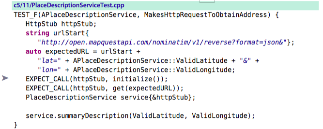
The high-level policy in summaryDescription() remains untouched. We make an isolated change to get() to update its implementation detail.
c5/11/PlaceDescriptionService.cpp
string PlaceDescriptionService::get(const string& url) const { http_->initialize(); // <---- return http_->get(url); }
When we run the tests, we receive a warning— not for MakesHttpRequestToObtainAddress but for FormatsRetrievedAddressIntoSummaryDescription, which is the other test.
GMOCK WARNING:
Uninteresting mock function call - returning directly.
function call: initialize()
Google Mock captures all interactions with a mock object, not just the ones for which you set expectations. The warning is intended to help by telling you about an interaction you might not have expected.
Your goal should always be zero warnings. Either turn them all off or fix them as soon as they arise. Any other strategy that allows warnings to stick around will breed hundreds or thousands of warnings over time. At that point, they’re all pretty much useless. Ignoring the Google Mock warning is unacceptable; we must eliminate it.
We have other choices:
- We could add the expectation to FormatsRetrievedAddressIntoSummaryDescription, but that adds a bit of clutter to the test that has nothing to do with its goal. We’ll avoid this solution that goes against the concept of test abstraction.
- Always question design when you’re presented with a challenge like this. -> Moving the call to a different place wouldn’t eliminate the warning, though.
- What about the test design? We split one test into two. If we expressed everything in a single test, that one test could set up the expectations to cover all three significant events. That’s an easy fix, but we’d end up with a cluttered test. Refer to 7.3 One Assert per Test for further discussion about this choice. For now, let's stick with separate tests.
- We could also create a fixture helper function that added the expectation on initialize() and then returned the HttpStub instance. We might name such a function createHttpStubExpectingInitialization().
- Google Mock provides a simpler solution (and many other mock tools provide similar solutions). The
NiceMocktemplate effectively tells Google Mock to track interactions only for methods on which expectations exist.
c5/12/PlaceDescriptionServiceTest.cppTEST_F(APlaceDescriptionService, FormatsRetrievedAddressIntoSummaryDescription) { NiceMock<HttpStub> httpStub; EXPECT_CALL(httpStub, get(_)) .WillOnce(Return( // ... }
In contrast, wrapping a mock in StrictMock turns the uninteresting mock call warning into an error.
StrictMock<HttpStub> httpStub;
By using NiceMock, we take on a small risk. If the code later somehow changes to invoke another method on the Http interface, our tests aren’t going to know about it. You should use NiceMock when you need it, not habitually. Seek to fix your design if you seem to require it often.
Refer to http://code.google.com/p/googlemock/wiki/CookBook#Nice_Mocks_and_Strict_Mocks for more about NiceMock and StrictMock.
Order in the Mock
By default, Google Mock doesn’t concern itself with verifying the order in which expectations are met. If you’re concerned about order, you can tell Google Mock (and many other C++ mocking tools) to verify it. The simplest way is to declare an instance of InSequence at the top of the test and ensure that subsequent EXPECT_CALLs appear in the order you expect.
c5/13/PlaceDescriptionServiceTest.cpp
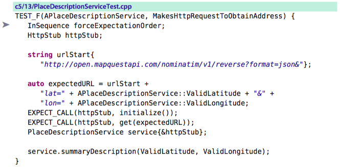
Google Mock provides finer control over order if you require it.
- The After() clause says that an expectation is met only if it executes after another expectation.
- Google Mock also lets you define an ordered list of expected calls.
Refer to http://code.google.com/p/googlemock/wiki/CheatSheet#Expectation_Order for further information.
Making a Mockery of Things: Clever Mock Tool Features
The EXPECT_CALL macro supports a number of additional modifiers. Here’s its syntax:
EXPECT_CALL(mock_object, method(matchers))
.With(multi_argument_matcher) ?
.Times(cardinality) ?
.InSequence(sequences) *
.After(expectations) *
.WillOnce(action) *
.WillRepeatedly(action) ?
.RetiresOnSaturation(); ?
The ? and * represent the cardinality of each modifier:
- ? indicates that you can optionally call the modifier once,
- * indicates that you can call the modifier any number of times.
Explanation:
- The most likely useful modifier is
Times(), which lets you specify the exact number of times you expect a method to be called. - You can specify
WillRepeatedly()if you know a method will be called many times but aren’t concerned with exactly how many.
Refer to http://code.google.com/p/googlemock/wiki/CheatSheet#Setting_Expectations, http://code.google.com/p/googlemock/wiki/ForDummies#Setting_Expectations
Google Mock is a general-purpose unit testing tool that supports mocking for just about any convolution that you can code. For example, suppose you need to mock a function to populate an out parameter. The following interface, defined on a class named DifficultCollaborator, represents a function that both returns a value and populates an argument:
c5/13/OutParameterTest.cpp
virtual bool calculate(int* result)
You can specify one action for a Google Mock expectation, using either WillOnce() or WillRepeatedly(). Most of the time, that action will be to return a value. In the case of a function that needs to do more, you can use DoAll(), which creates a composite action from two or more actions.
c5/13/OutParameterTest.cpp
DifficultCollaboratorMock difficult; Target calc; EXPECT_CALL(difficult, calculate(_)) .WillOnce(DoAll( SetArgPointee<0>(3), Return(true))); auto result = calc.execute(&difficult); ASSERT_THAT(result, Eq(3));
Our additional action for this example is SetArgPointee<0>(3), which tells Google Mock to set the pointee (the thing that’s getting pointed at) for the 0th argument to the value 3.
Google Mock has solid support for other side-effect actions, including the ability to
- throw exceptions,
- set variable values,
- delete arguments,
- invoke functions or functors
Refer to http://code.google.com/p/googlemock/wiki/CheatSheet#Actions.
Most of the time, the basic Google Mock mechanisms you learned earlier will suffice. When test-driving, if you find yourself seeking esoteric mock tool features frequently, stop and take a look at your design.
- Are you testing a method that’s doing too much?
- Can you restructure your design in a manner so that you don’t need such complex mocking? More often than not, you can.
Where you may need the more powerful features of your mock tool is when you tackle the challenge of writing tests around non-test-driven, poorly structured code. You’ll learn about these challenges in Legacy Challenges.
Troubleshooting Mock Failures
You will invariably struggle with defining mocks properly.
I received the following failure message:
Actual function call count doesn't match EXPECT_CALL(httpStub, get(expectedURL))...
Expected: to be called once
Actual: never called - unsatisfied and active
– My stupidity was that I had inadvertently stripped the const declaration from the URL argument.
Steps:
- The first thing to determine is whether the production code actually makes the proper call. (Have you even coded anything yet?)
- Second, have you defined the mock method properly? If you’re not sure, you either can add a cout statement as the first line of the production implementation or can crank up the debugger.
- Did you make the member function getting mocked virtual?
- Did you botch the MOCK_METHOD() declaration? All type information must match precisely; otherwise, the mock method is not an override. Ensure all const declarations match.
- If you’re still stuck, eliminate any concerns about argument matching. Use the wildcard matcher (testing::_) for all arguments and rerun the tests. If they pass, then one of the arguments is not recognized as a match by Google Mock.
One Test or Two?
From the stance of documenting public behaviors—those a client would care about—PlaceDescriptionService’s sole goal is to return a summary string given a location. Describing this behavior in a single test might be simpler for a reader. The interaction of summaryDescription() with its Http collaborator isn’t of interest to the client. It’s an implementation detail. Does it make sense to create a second test to document that interaction?
Absolutely. TDD’s most important value is in helping you drive and shape the design of your system. Interactions with collaborators are a key aspect of that design. Having tests that describe those interactions will be of high value to other developers.
Having two tests provides additional benefits.
- First, a mock verification is an assertion. We already require an assertion to verify the summary string. Splitting into two tests falls in line with one assert per test (Section 7.3, One Assert per Test, on page 178).
- Second, the separated tests are eminently more readable. Setting expectations in Google Mock makes it harder to spot the assertion points (and also to keep in line with Arrange-Act-Assert/Given-When-Then, on page 84), so anything we can do to simplify mock-based tests pays off.
5.7 Getting Test Doubles in Place
You have two jobs when introducing a test double.
- First, code the test double.
- Second, get the target to use an instance of it.
Certain techniques for doing so are known as dependency injection (DI).
- constructor injection: injecting the test double via a constructor
- setter injection: In some circumstances, you might find it more appropriate to pass the test double using a setter member function.
- other techniques gor getting test doubles in place
Use the one that's most appropriate for your circumstance.
Override Factory Method and Override Getter
To apply Override Factory Method, you must change the production code to use a factory method any time a collaborator instance is needed. Here’s one way to implement the change in the PlaceDescriptionService:
c5/15/PlaceDescriptionService.h
#include <memory> // ... virtual ~PlaceDescriptionService() {} // ... protected: virtual std::shared_ptr<Http> httpService() const;
c5/15/PlaceDescriptionService.cpp
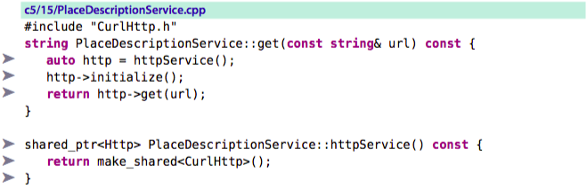
In the test, we define a derivative of PlaceDescriptionService. The primary job of this subclass is to override the factory method (httpService()) that returns an Http instance.
c5/15/PlaceDescriptionServiceTest.cpp
class PlaceDescriptionService_StubHttpService: public PlaceDescriptionService { public: PlaceDescriptionService_StubHttpService(shared_ptr<HttpStub> httpStub) : httpStub_{httpStub} {} shared_ptr<Http> httpService() const override { return httpStub_; } shared_ptr<Http> httpStub_; };
We change our tests to create an HttpStub shared pointer and store it in the PlaceDescriptionService_StubHttpService instance.
c5/15/PlaceDescriptionServiceTest.cpp
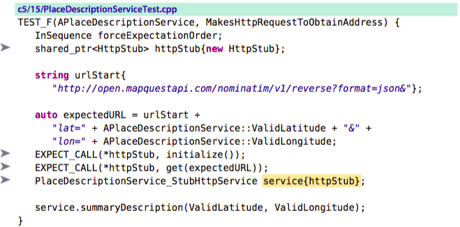
Override Factory Method demonstrates the hole in coverage created by using test doubles. Since our test overrides the production implementation of httpService(), code in that method never gets exercised by the tests. As stated before, make sure you have an integration test that requires use of the real service! Also, don’t let any real logic sneak into the factory method; otherwise, you’ll grow the amount of untested code. The factory method should return only an instance of the collaborator type.
As an alternative to Override Factory Method, you can use Override Getter. With respect to our example, the difference is that the httpServer() function is a simple getter that returns a member variable referencing an existing instance, whereas in Override Factory, httpServer() is responsible for constructing the instance. The test remains the same.
c5/16/PlaceDescriptionService.h
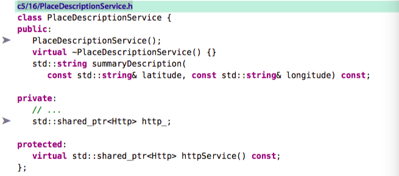
c5/16/PlaceDescriptionService.cpp
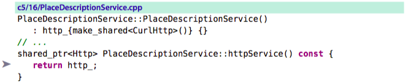
Used sparingly, Override Factory Method and Override Getter are simple and effective, particularly in legacy code situations (see Legacy Challenges). Prefer constructor or setter injection, however.
Introduce via Factory
A factory class is responsible for creating and returning instances.
If you have an HttpFactory, you can have your tests tell it to return an HttpStub instance instead of an Http (production) instance.
If you don’t already have a legitimate use for a factory, don’t use this technique. Introducing a factory only to support testing is a poor choice.
Here’s our factory implementation:
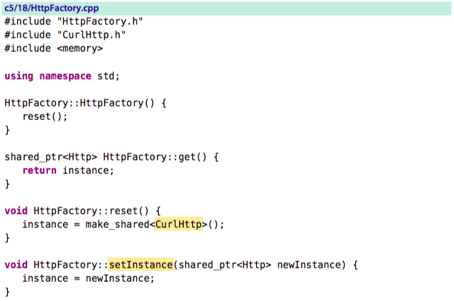
During setup, the test creates a factory and injects an HttpStub instance into it. Subsequent requests to get() on the factory return this test double.
c5/18/PlaceDescriptionServiceTest.cpp
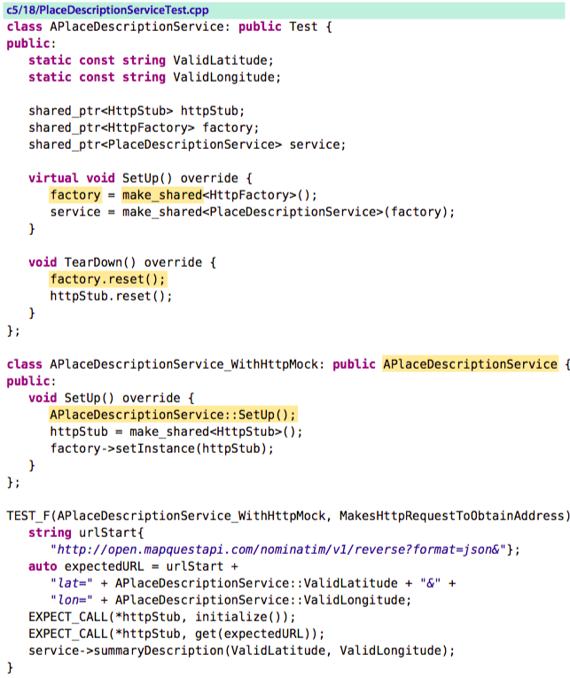
We change the production code in summaryDescription() to obtain its Http instance from the factory.
c5/18/PlaceDescriptionService.cpp
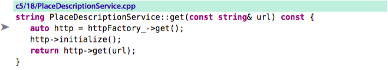
Since we’re passing the factory through the constructor, this pattern is little different from constructor injection, except that we now have an extra layer of indirection.
Introduce via Template Parameter
Some of the injection techniques can be somewhat clever.
Injecting via a template parameter is another option that doesn’t require clients to pass a collaborator instance. Its use is best constrained to legacy situations where a template already exists.
We declare the PlaceDescriptionService class as a template that can be bound to a single typename, HTTP. We add a member variable, http_, of the parameter type HTTP.
c5/19/PlaceDescriptionService.h
In the test fixture, we declare the service to be of type PlaceDescriptionServiceTemplate bound to the mock type, HttpStub:
c5/19/PlaceDescriptionServiceTest.cpp
class APlaceDescriptionService_WithHttpMock: public APlaceDescriptionService { public: PlaceDescriptionServiceTemplate<HttpStub> service; };
The test doesn’t provide PlaceDescriptionService with an instance of the mock; it supplies the mock’s type. PlaceDescriptionService creates its own instance of this type (as the member variable http_).
Since Google Mock will be looking to verify interaction expectations on the template object’s instance, we need to provide the test with access to it. We change the test to obtain the stub instance via an accessor function on PlaceDescriptionServiceTemplate named http().
c5/19/PlaceDescriptionServiceTest.cpp
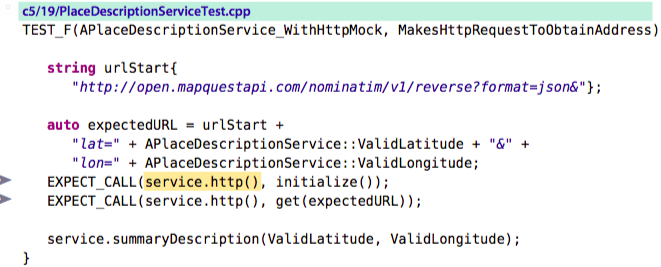
You can support introducing a mock via a template parameter in a number of ways, some even more clever than this implementation (which is based on the Template Redefinition pattern in Working Effectively with Legacy Code [Fea04]).
Injection Tools
Tools to handle injecting collaborators as dependent objects are known as dependency injection (DI) tools. Two known C++ examples are Autumn Framework and Qt IoC Container.
You should first master the manual injection techniques described here and then investigate the tools to see whether they improve things. DI tools are generally much more effective in languages that support full reflective capabilities.
5.8 Design Will Change
Your first reaction to test doubles may be that using them will change your approach to design.
Cohesion and Coupling
When faced with a troublesome dependency (such as a slow or volatile collaborator), the best option is to isolate it to a separate class.
- you’ll have more potential for reuse and more design flexibility (the ability to replace it with a polymorphic substitute, for example).
- You’ll also have a few more options when it comes to creating a test double.
While it could be broken into several smaller functions, like we did earlier, developers often don’t bother. Test-after developers aren’t as habituated to regular refactoring, and they don’t usually have the fast tests needed to make it quick and safe.
[ME: write only the sufficient code to pass the test -> 代码围绕功能点实现，粒度更小，更容易复用 <— 生产代码的方式！]
Test-after code:
- violates the SRP.
- has the code smell known as Long Method. -> Longer functions like this promote unnecessary duplication, because other services are likely to need some of the same cURL logic. Reuse begins with isolation of reusable constructs that other programmers can readily identify. As long as the potentially reusable chunks of code lay buried in a Long Method, reuse won’t happen.
For test-after code, You can use link substitution to support writing a fast unit test (see Section 8.9, Creating a Test Double for rlog, on page 207). Or you can write an integration test that generates a live call to the REST service. But both types of test will be larger, with more setup and verification in a single test. The integration test will be slow and brittle.
You will seek cohesive, decoupled designs as you practice TDD. You’ll start to realize the benefit of a more flexible design. You’ll quickly discover how these better designs align with tests that are much smaller and easier to write, read, and maintain.
Shifting Private Dependencies
If you weren’t concerned about testing, the HTTP call in the PlaceDescriptionService could remain a private dependency, meaning that clients of PlaceDescriptionService would be oblivious to the existence of the HTTP call.
When you use setter or constructor injection, however, clients take on the responsibility of creating Http objects and passing them in. You shift the dependency of PlaceDescriptionService to the client.
Q.: Doesn’t setter or constructor injection violate the notion of information hiding?
A.: From the stance of the client, yes. You can use an alternate form of dependency injection (see Section 5.7, Getting Test Doubles in Place, on page 123). The information you’re exposing is unlikely to cause future grief if someone takes advantage of it.
You also have the option of providing a default instance. We can configure PlaceDescriptionService to contain a CurlHttp instance that gets replaced when the test provides an HttpStub. The production client need not change.
Q.: But what if a nefarious developer chooses to pass in a destructive Http instance?
A.: Choose an alternate injection form if clients are outside your team. If you’re worried about developers within the team deliberately taking advantage of the injection point to do evil things, you have bigger problems.
Q.: TDD is growing on me, but I’m concerned about changing how I design solely for purposes of testing. My teammates probably feel the same way.
A.: Knowing that software works as expected is a great reason to change the way you design code. Have this conversation with your teammates: “I’m more concerned about whether the code works. Allowing this small concession means we can more easily test our code, and getting more tests in place can help us shape the design more easily and trust the code more. Can we rethink our standards?”
5.9 Strategies for Using Test Doubles
Test doubles are like any tool; the bigger challenge is not in learning how to use them but in knowing when to use them.
Exploring Design
Some programmers always wear the designer hat. To adhere to the SRP, they might break the required logic into two needs: parsing the JSON response and formatting the output.
TDD allows you…no, it requires you to make conscious design choices at all times. TDD helps you explore that design. Often that’s done by coding something that works and then refactoring to an appropriate solution.
When test-driving in this manner, you introduce mocks to supply otherwise-missing collaborator behavior. You design interfaces for the collaborators based on the interests and needs of the client.
At some point, you or someone else will implement the collaborator. You have a choice:
- remove the mocks so that the code under test uses the production collaborator or
- keep the mocks in place:
- If the collaborator introduces troublesome dependencies, you’ll need to retain the mock.
- If it does not, removing the mock means removing a bit of extra complexity in your tests. However, you might choose to retain the mocks, particularly if interactions with the collaborator are an important aspect of design that you should describe.
The best guideline probably takes into account the effort required to maintain and understand the tests. It can be simpler without mocks in place, but that’s not always the case. It can require a lot of setup code to initialize some collaborators, which can increase your effort to maintain the tests.
Having tests highly dependent on implementation specifics—which methods are called in which order—created significant problems. But in hindsight, the far larger problem was our inadequate system design. We might have had an easier time had we factored away duplication across tests. Another significant problem was not having appropriate performance/scaling tests.
Schools of Mock
London school: Practitioners who view TDD primarily as a design exploration tool
- focuses on using TDD to grow out a system in this manner.
- promotes the notion of Tell-Don’t-Ask: its emphasis on object interactions -> it promotes a more decoupled design.
- you (a client object) want to tell an object to do something by sending it a message and letting it go do its work.
- You don’t want to ask an object for information and then do work that could be the responsibility of that object.
Classic school (Cleveland school):
- emphasizes verification of behavior by inspecting state.
- Folks in this camp avoid introducing mocks until a dependency concern forces the issue.
Dependencies:
- Introducing a mock creates a dependency of the tests on the implementation details of the target.
- If you employ a tool, you also create a dependency on that tool.
-> Both dependencies can make your designs more rigid and your tests more fragile if you’re not careful. The best defense against challenges created by dependencies is good design: isolate and minimize them.
Using mocks also generates additional complexity that you’ll pay for.
It’s possible to incorporate elements of both London and classic schools into your TDD practice.
Using Test Doubles Wisely important guideline
If you want a fully test-driven system with fast tests, the predominance of systems will require you to use test doubles.
When you use test doubles, consider the following recommendations:
Reconsider the design
- Does your compulsion to mock exist in order to simplify creation of dependent objects? -> Revisit your dependency structure.
- Are you mocking the same thing in multiple places? -> Restructure the design to eliminate this duplication.
Recognize the concession to unit testing coverage
A test double represents a hole of sorts in your system’s coverage. The lines of logic that your test double supplants is code that your unit tests will not execute. You must ensure that other tests cover that logic.
Refactor your tests
Don’t let your increased dependency on a third-party tool create a problem.
A haphazard approach can quickly generate rampant mocking, resulting in lots of duplication and otherwise difficult tests.
Refactor your tests as much as you refactor your production code!
- Encapsulate expectation declarations in common helper methods to improve abstraction,
- reduce the extent of the dependency,
- minimize duplicate code.
When you later want to upgrade to a newer, better tool than Google Mock, you won’t be faced with quite as devastating a change.
Question overly complex use of test doubles
If you’re struggling with mocks, it could be because either you’re trying to test too much or your design is deficient.
Having multiple levels of mocks is usually a recipe for headaches.
Using fakes, as discussed in Section 5.10, Miscellaneous Test Double Topics, on page 136, usually leads to more struggle.
If stuck, simplify what you’re trying to do by breaking things into smaller tests. Look also at the potential of splitting apart the code you are testing.
Choose expressiveness over power
Choose your mock tool because it helps you create highly abstract tests that document behaviors and design, not because it has cool features and can do clever, esoteric things. Use those clever, esoteric features only when you must.
5.10 Miscellaneous Test Double Topics
In this final section, you’ll learn a few odds and ends about using test doubles, including
- generally accepted terminology,
- where to define them,
- whether to mock concrete classes,
- their potential impact on performance.
What Do You Call Them?
xUnit Test Patterns [Gerard Meszaros. xUnit Test Patterns. Addison-Wesley, Reading, MA, 2007. ] acts as the definitive guide for these definitions.
- Test double: An element that emulates a production element for testing purposes
- Stub: A test double that returns hard-coded values
- Spy: A test double that captures information sent to it for later verification
- Mock: A test double that self-verifies based on expectations sent to it
- Fake: A test double that provides a light-weight implementation of a production class
Our handcrafted test double implementation for get() acted as both a stub and a spy.
- It acted as a spy by verifying that the URL sent to it contained an accurate HTTP GET request URL.
- It acted as a stub by returning hard-coded JSON text.
- We turned it into a mock by using Google Mock to capture expectations and automatically verify whether they were met.
The canonical example for a fake is an in-memory database. Since interacting with file-system-based databases is inherently slow, many teams have implemented a test double class to emulate much of the interaction with the database. The underlying implementation is typically a hash-based structure that provides simple and rapid key-based lookup.
The challenge with fakes is that they become first-rate classes, often growing into complex implementations that contain their own defects. It’s not impossible, but there are many easy mistakes to make.
-> Avoid fakes. You will otherwise undoubtedly waste half an afternoon at some point fixing a problem caused by a subtle defect in the fake. Your test suite exists to simplify and speed up development, not to waste time by creating problems of its own.
If you do employ fakes, you’ll want to ensure that they are themselves unit tested. Tests for the fake will need to prove that the logic matches behavior in the emulated object.
Where Do They Go?
- Start by defining your test double within the same file as the tests that use it. -> Developers can then readily see the test double declaration that the tests use.
- Once multiple fixtures use the same test double, you will want to move the declaration to a separate header file.
- You should move your test doubles out of sight once they become so dumb that you never need to look at them again.
Remember that changes to the production interface will break tests that use derived test doubles. If you’re all on the same team and following collective code ownership guidelines (everyone has to right to change any code), the developer changing the production interface is responsible for running all tests and fixing any that break. In other circumstances, sending out a message that clearly communicates the change (and implications) is prudent.
Vtables and Performance
You introduce test doubles to support test-driving a class with a problematic dependency. Many techniques for creating test doubles involve creating derived types that override virtual member functions. If the production class previously contained no virtual methods, it now does and thus now contains a vtable. The vtable carries the overhead of an extra level of indirection.
The introduction of a vtable represents a performance concern, since C++ now requires an additional lookup into the vtable (instead of simply calling a function). Also, the compiler can no longer inline a virtual function.
But in most cases, the performance impact of vtables is negligible or even nonexistent. The compiler is able to optimize away some of the cost in certain cases. You’ll want the better, polymorphic design most of the time.
However, if you must call the mocked production function extensively, you will want to first profile performance. If the measured degradation is unacceptable, consider a different mocking form (perhaps a template-based solution), rework the design (and possibly recoup the performance loss by optimizing elsewhere), or introduce integration tests to compensate for the loss of the ability to unit test. Visit Section 10.2, TDD and Performance, on page 269 for more discussion.
Mocking Concrete Classes
Many systems predominantly consist of concrete classes with few such interfaces. From a design stance, introducing interfaces can start to provide you with means of isolating one part of the system from another. The Dependency Inversion Principle (DIP) promotes breaking dependencies by having clients depend on abstractions, not concrete implementations. Introducing these abstractions in the form of pure virtual classes can improve build times and isolate complexity. More importantly, they can make testing simpler.
You can, if you must, create a mock that derives from a concrete class. The problem is that the resulting class represents a mix of production and mocked behavior, a beast referred to as a partial mock.
- First, a partial mock is usually a sign that the class you’re mocking is too large—if you need to stub some of its elements but not all, you can likely split the class into two around these boundaries.
- Second, you will likely get into trouble when working with partial mocks. You can quickly end up in “mock hell." – In some cases, you can end up with devious defects: “Aha! I thought the code was interacting with the mock method at this point, but it looks like it’s interacting with the real method.”
When you reach for a clever tool like a partial mock, your design is giving off smells. A cleaner design might, for example, adapt the concrete class with a class that derives from an interface. Tests would no longer require a partial mock, instead creating a test double for the interface.
5.11 Teardown
This chapter provided you with techniques for breaking collaborator dependencies when test-driving.
You’re just starting to get to the good stuff. Now that you can test-drive all your code,
- how can you take advantage of it so that your design stays clean and simple? And
- how can you ensure that your tests, too, stay clean and simple?
The next two chapters focus on improving the design of both your production code and tests so that your maintenance efforts remain minimal over time.
6. Incremental Design
6.1 Setup
You’ve learned the core fundamentals of TDD, from mechanics to preferred practices to techniques for dealing with dependencies. You’ve also refactored along the way, incrementally shaping your code with each change— but to what end?
The primary reason to practice TDD is to support the ability to add or change features at a sustained, stable maintenance cost. [ME: to accommodate changes]
TDD provides this support by letting you continually refine the design as you drive changes into your system. The tests produced by practicing TDD demonstrate that your system logic behaves as expected, which allows you to clean up new code as soon as you add it.
The implication is momentous.
- Without TDD, you don’t have the rapid feedback to allow you to safely and easily make incremental code changes.
- Without making incremental code changes, your codebase will steadily degrade.
In this chapter, you’ll learn what sorts of things you want to do when in the refactoring step. -> We’ll focus primarily on Kent Beck’s concept of simple design (see Extreme Programming Explained: Embrace Change [Bec00]), a great starter set of rules for keeping your code clean.
6.2 Simple Design
Three simple rules when practicing TDD:
- Ensure your code is always highly readable and expressive.
- Eliminate all duplication, as long as doing so doesn’t interfere with the first rule.
- Ensure that you don’t introduce unnecessary complexity into your system: Avoid speculative constructs (“I just know we’re gonna have to support many-to-many someday”) and abstractions that don’t add to your system’s expressiveness.
The final rule is important, but the other two hold slightly higher priority. – Prefer introducing an abstraction such as a new member function or class if it improves expressiveness.
Following these rules can give you an eminently maintainable system.
The Cost of Duplication
Duplication is perhaps the biggest cost in maintaining a codebase over time.
Case 1: simple code -> copy & paste -> 100 times throughout the codebase.
Solution to case 1: place this simple code in one place.
Reason:
- Most developers are lazy about creating new member functions, and
- sometimes they resist doing so because of dubious claims about degrading performance. But ultimately they are only creating more future work for themselves.
Case 2: Imagine you’ve been told to add a variant to an existing feature. Your changes require a half-dozen lines of code executed if some condition exists, else execute a half-dozen lines of existing code. You discover that the existing feature is implemented in an untested 200-line member function.
Solution to case 2: The right thing would be a design that extracts the 195 or so lines of commonality and allows you to introduce your variant as an extesion. Perhaps the template method or strategy design pattern would provide the basis for an appropriate solution.
Reason: Most programmers don’t do the right thing, not because they don’t know how but because they are lazy and fearful. “If I change the existing code and it breaks, I’ll get blamed for breaking something that I shouldn’t have been messing with in the first place.” It’s easier to copy the 200 lines, make the changes needed, and move on.
Because of this somewhat natural tendency toward duplication, most large systems contain substantially more code than required. The extra code dramatically increases maintenance costs and risks.
You have the potential to stave off this systematic degradation by incrementally refactoring as part of the TDD cycle.
The Portfolio Manager
Let’s take a look at how Beck’s notion of simple design plays out in developing a small subsystem.
Story: Portfolio Manager
Investors want to track stock purchases and sales to provide the basis for financial analysis.
c6/1/PortfolioTest.cpp
#include "gmock/gmock.h" #include "Portfolio.h" using namespace ::testing; class APortfolio: public Test { public: Portfolio portfolio_; }; TEST_F(APortfolio, IsEmptyWhenCreated) { ASSERT_TRUE(portfolio_.IsEmpty()); } TEST_F(APortfolio, IsNotEmptyAfterPurchase) { portfolio_.Purchase("IBM", 1); ASSERT_FALSE(portfolio_.IsEmpty()); } TEST_F(APortfolio, AnswersZeroForShareCountOfUnpurchasedSymbol) { ASSERT_THAT(portfolio_.ShareCount("AAPL"), Eq(0u)); } TEST_F(APortfolio, AnswersShareCountForPurchasedSymbol) { portfolio_.Purchase("IBM", 2); ASSERT_THAT(portfolio_.ShareCount("IBM"), Eq(2u)); }
c6/1/Portfolio.cpp
#include "Portfolio.h" using namespace std; Portfolio::Portfolio() : isEmpty_{true} , shareCount_{0u} { } bool Portfolio::IsEmpty() const { return isEmpty_; } void Portfolio::Purchase(const string& symbol, unsigned int shareCount) { isEmpty_ = false; shareCount_ = shareCount; } unsigned int Portfolio::ShareCount(const string& symbol) const { return shareCount_; }
Were you able to understand what the Portfolio class does by reading the tests? -> You should be building the habit of reading test names as your first understanding of what a class has been designed to do. The tests are your gateway to understanding.
Simple Duplication in the Portfolio Manager
We have duplication in both our tests and our production code.
The string literal "IBM" repeats three times across two tests: it appears once in IsNotEmptyAfterPurchase and twice in AnswersShareCountForPurchasedSymbol.
Extracting the literal to a constant
- it makes reading things a little easier,
- it reduces the risk of mistyping the literal in the future, and
- it makes new tests a little easier to write.
- Further, if the symbol for IBM needs to change, we can make that change in one place.
#include "gmock/gmock.h" #include "Portfolio.h" using namespace ::testing; using namespace std; class APortfolio: public Test { public: static const string IBM; // <----- Portfolio portfolio_; }; const string APortfolio::IBM("IBM"); // <----- // ... TEST_F(APortfolio, IsEmptyWhenCreated) { ASSERT_TRUE(portfolio_.IsEmpty()); } TEST_F(APortfolio, IsNotEmptyAfterPurchase) { portfolio_.Purchase(IBM, 1); ASSERT_FALSE(portfolio_.IsEmpty()); } // ... TEST_F(APortfolio, AnswersZeroForShareCountOfUnpurchasedSymbol) { ASSERT_THAT(portfolio_.ShareCount("AAPL"), Eq(0u)); } TEST_F(APortfolio, AnswersShareCountForPurchasedSymbol) { portfolio_.Purchase(IBM, 2); ASSERT_THAT(portfolio_.ShareCount(IBM), Eq(2u)); } TEST_F(APortfolio, ThrowsOnPurchaseOfZeroShares) { ASSERT_THROW(portfolio_.Purchase(IBM, 0), InvalidPurchaseException); }
Does that mean you should always extract common literals to a variable?
-> Design choices are often judgment calls. Strive to adhere to the design principles set out in this chapter to better understand how they benefit your system. With that experience, when you encounter code that requires a judgment call, you’ll understand the implication of forgoing a design rule.
Take a look at the production code and see whether you can spot the duplication – The code doesn’t exhibit visibly obvious line-for-line (or expression-for-expression) duplication. Instead, it contains algorithmic duplication – The IsEmpty() member function returns the value of a bool that changes when Purchase() gets called. Yet the notion of emptiness is directly tied to the number of shares, stored also when Purchase() gets called. We can eliminate this conceptual duplication by eliminating the isEmpty_ variable and instead having IsEmpty() ask about the number of shares.
bool Portfolio::IsEmpty() const { return 0 == shareCount_; // <----- }
Note: Yes, it’s slightly awkward to ask for the number of shares overall in order to determine emptiness, but it’s correct for now, in other words, in the incremental sense. Writing what you know to be short-term code should trigger interesting thoughts, which might in turn translate to new tests. The problem with our implementation is that the portfolio will return empty if someone purchases zero shares of a symbol. Our definition of empty is whether the portfolio contains any symbols. So, is that empty? Or should we disallow such purchases? For the purposes of moving forward, we choose the latter and write a test named ThrowsOnPurchaseOfZeroShares.
Algorithmic duplication becomes a significant problem as your system grows. More often than not, the duplication morphs into unintentional variance, as changes to one implementation don’t get rolled into the other implementations.
Can We Really Stick to an Incremental Approach?
A bit of coding later, and we have the following tests written:
TEST_F(APortfolio, IsEmptyWhenCreated) { TEST_F(APortfolio, IsNotEmptyAfterPurchase) { TEST_F(APortfolio, AnswersZeroForShareCountOfUnpurchasedSymbol) { TEST_F(APortfolio, AnswersShareCountForPurchasedSymbol) { TEST_F(APortfolio, ThrowsOnPurchaseOfZeroShares) { TEST_F(APortfolio, AnswersShareCountForAppropriateSymbol) { TEST_F(APortfolio, ShareCountReflectsAccumulatedPurchasesOfSameSymbol) { TEST_F(APortfolio, ReducesShareCountOfSymbolOnSell) { TEST_F(APortfolio, ThrowsWhenSellingMoreSharesThanPurchased) {
We’re told a new story.
Story: Show Purchase History
Investors want to see a list of purchase records for a given symbol, with each record showing the date of purchase and number of shares.
The story throws a wrench into our implementation. This is where many developers question the wisdom of TDD. – Had we spent additional time up front vetting the requirements, we might have figured out that we need to track the date of purchase. Our initial design could have incorporated that need.
Let’s see if we can proceed incrementally, seeking positive feedback every few minutes. One way to do that is to make assumptions.
Our assumption is that purchases are always made on a specific date. That makes our current task simpler because we can ignore the need to pass a date to Purchase().
TEST_F(APortfolio, AnswersThePurchaseRecordForASinglePurchase) { portfolio_.Purchase(SAMSUNG, 5); auto purchases = portfolio_.Purchases(SAMSUNG); auto purchase = purchases[0]; ASSERT_THAT(purchase.ShareCount, Eq(5u)); ASSERT_THAT(purchase.Date, Eq(Portfolio::FIXED_PURCHASE_DATE)); }
To get this test to pass, we don’t even need to associate the purchase record with the holdings_ data structure. Since our current assumption is that this works for only a single purchase, we can define a “global” purchase record collection for Portfolio.
class InvalidPurchaseException: public std::exception { }; class InvalidSellException: public std::exception { }; struct PurchaseRecord { PurchaseRecord(unsigned int shareCount, const boost::gregorian::date& date) : ShareCount(shareCount) , Date(date) { } unsigned int ShareCount; boost::gregorian::date Date; }; class Portfolio { public: static const boost::gregorian::date FIXED_PURCHASE_DATE; // <---- bool IsEmpty() const; void Purchase(const std::string& symbol, unsigned int shareCount); void Sell(const std::string& symbol, unsigned int shareCount); unsigned int ShareCount(const std::string& symbol) const; std::vector<PurchaseRecord> Purchases(const std::string& symbol) const; // <---- private: std::unordered_map<std::string, unsigned int> holdings_; std::vector<PurchaseRecord> purchases_; // <---- };
const date Portfolio::FIXED_PURCHASE_DATE(date(2014, Jan, 1)); // <---- void Portfolio::Purchase(const string& symbol, unsigned int shareCount) { if (0 == shareCount) throw InvalidPurchaseException(); holdings_[symbol] = shareCount + ShareCount(symbol); purchases_.push_back(PurchaseRecord(shareCount, FIXED_PURCHASE_DATE)); // <---- } vector<PurchaseRecord> Portfolio::Purchases(const string& symbol) const { return purchases_; }
We created a production constant, FIXED_PURCHASE_DATE, to allow us to make quick, demonstrable progress. We know it’s bogus. Let’s get rid of it by removing our temporary but useful assumption that all purchases are on the same date.
TEST_F(APortfolio, AnswersThePurchaseRecordForASinglePurchase) { date dateOfPurchase(2014, Mar, 17); // <---- portfolio_.Purchase(SAMSUNG, 5, dateOfPurchase); // <---- auto purchases = portfolio_.Purchases(SAMSUNG); auto purchase = purchases[0]; ASSERT_THAT(purchase.ShareCount, Eq(5u)); ASSERT_THAT(purchase.Date, Eq(dateOfPurchase)); }
Rather than having to fix all the other tests that call the Purchase() member function, we can take a smaller step and default the date parameter.
void Purchase( const std::string& symbol, unsigned int shareCount, const boost::gregorian::date& transactionDate= Portfolio::FIXED_PURCHASE_DATE); // <----
void Portfolio::Purchase( // <---- const string& symbol, unsigned int shareCount, const date& transactionDate) { // <---- if (0 == shareCount) throw InvalidPurchaseException(); holdings_[symbol] = shareCount + ShareCount(symbol); purchases_.push_back(PurchaseRecord(shareCount, transactionDate)); // <---- }
Using a fixed date isn’t a valid long-term requirement (although defaulting to the current time might be), so we now want to eliminate the default parameter on Purchase(). Unfortunately, we have at least a handful of tests that call Purchase() without passing a date.
One solution is to add a date argument to the calls in all of the affected tests. That seems tedious. It also might violate the principle of test abstraction (see Section 7.4, Test Abstraction, on page 181) for those tests—none of them cares about the purchase date.
That we need to change many tests at once, without changing the behavior they describe, tells us they contain duplication that we should have eliminated. What if we supply a fixture helper method that handles the call to Purchase() and provides a default value for the date so that the tests need not specify it?
class APortfolio: public Test { public: static const string IBM; static const string SAMSUNG; Portfolio portfolio_; static const date ArbitraryDate; void Purchase( // <---- const string& symbol, unsigned int shareCount, const date& transactionDate=APortfolio::ArbitraryDate) { portfolio_.Purchase(symbol, shareCount, transactionDate); } }; TEST_F(APortfolio, ReducesShareCountOfSymbolOnSell) { Purchase(SAMSUNG, 30); // <---- portfolio_.Sell(SAMSUNG, 13); ASSERT_THAT(portfolio_.ShareCount(SAMSUNG), Eq(30u - 13)); } TEST_F(APortfolio, AnswersThePurchaseRecordForASinglePurchase) { date dateOfPurchase(2014, Mar, 17); Purchase(SAMSUNG, 5, dateOfPurchase); // <---- auto purchases = portfolio_.Purchases(SAMSUNG); auto purchase = purchases[0]; ASSERT_THAT(purchase.ShareCount, Eq(5u)); ASSERT_THAT(purchase.Date, Eq(dateOfPurchase)); }
One point of potential debate is that the helper function Purchase() removes a bit of information from the tests—specifically, that it’s delegating to the portfolio_ instance. A first-time reader must navigate into the helper method to see just what it’s doing. But it’s a simple function and doesn’t bury key information that the reader will have a hard time remembering.
As a rule of thumb, avoid hiding Act (see Arrange-Act-Assert/Given-When-Then, on page 84) specifics.
- We can use the helper method when we need to make a purchase as part of setting up a test.
- But for tests where we’re specifically testing Purchase() behavior, we should directly invoke it.
Thus,
- ReducesShareCountOfSymbolOnSell can use the helper, since it makes a purchase as part of arranging the test.
- AnswersShareCountForPurchasedSymbol verifies purchase behavior, so it retains the direct call to portfolio_.Purchase().
TEST_F(APortfolio, AnswersShareCountForPurchasedSymbol) { portfolio_.Purchase(IBM, 2); // <---- ASSERT_THAT(portfolio_.ShareCount(IBM), Eq(2u)); } TEST_F(APortfolio, ReducesShareCountOfSymbolOnSell) { Purchase(SAMSUNG, 30); // <---- portfolio_.Sell(SAMSUNG, 13); ASSERT_THAT(portfolio_.ShareCount(SAMSUNG), Eq(30u - 13)); }
Personally, I don’t like the inconsistencies this creates in the way the tests look. I’m OK with running everything through the helper method, as long as it’s a simple one-liner delegation, as it is in this case. If that bothers you, another solution is to simply include the date parameter in each of the tests and use a constant with a name like ArbitraryPurchaseDate.
An incremental approach often requires introducing small bits of code that we later remove—tiny bits of waste product.
In return, we get the much more valuable ability to make continual forward progress on creating well-designed, correct code. We don’t worry about tackling new, never-before-considered features—we use TDD to incorporate them as a similar series of small steps. The more we keep our code clean, the easier it is to make our changes.
More Duplication
After a bit of test and production code cleanup, our tests around the purchase record are short and sweet.
To support the negative amounts in the purchase record, we changed the ShareCount member to a signed integer.
struct PurchaseRecord { PurchaseRecord(int shareCount, const boost::gregorian::date& date) // <---- : ShareCount(shareCount) , Date(date) {} int ShareCount; // <--- boost::gregorian::date Date; };
void ASSERT_PURCHASE( PurchaseRecord& purchase, int shareCount, const date& date) { ASSERT_THAT(purchase.ShareCount, Eq(shareCount)); ASSERT_THAT(purchase.Date, Eq(date)); }
Finally, we have:
void Portfolio::Purchase( const string& symbol, unsigned int shareCount, const date& transactionDate) { Transact(symbol, shareCount, transactionDate); } void Portfolio::Sell( const string& symbol, unsigned int shareCount, const date& transactionDate) { if (shareCount > ShareCount(symbol)) throw InvalidSellException(); Transact(symbol, -shareCount, transactionDate); } void Portfolio::Transact( const string& symbol, int shareChange, const date& transactionDate) { if (0 == shareChange) throw ShareCountCannotBeZeroException(); holdings_[symbol] = ShareCount(symbol) + shareChange; purchases_.push_back(PurchaseRecord(shareChange, transactionDate)); }
One more little expressiveness thing is that the name of our exception type InvalidSellException is not very good. Let’s change it to InsufficientSharesException.
TEST_F(APortfolio, ThrowsWhenSellingMoreSharesThanPurchased) {
ASSERT_THROW(Sell(SAMSUNG, 1), InsufficientSharesException);
}
void Portfolio::Sell( const string& symbol, unsigned int shareCount, const date& transactionDate) { if (shareCount > ShareCount(symbol)) throw InsufficientSharesException(); Transact(symbol, -shareCount, transactionDate); }
Is there anything else we could do from the stance of our two simple design rules? It appears that we’ve squashed all the duplication. What of readability? Purchase() does nothing other than delegate, so it’s clear, and Sell() simply adds a constraint and reverses the shares, so it too makes immediate sense. Transact() doesn’t quite have the immediacy we want.
Benefits of Small Methods important guideline
Transact() consists of three simple one-liners. It’s simply not expressive enough. Let’s fix that.
c6/15/Portfolio.cpp
void Portfolio::Transact( const string& symbol, int shareChange, const date& transactionDate) { ThrowIfShareCountIsZero(shareChange); UpdateShareCount(symbol, shareChange); AddPurchaseRecord(shareChange, transactionDate); } void Portfolio::ThrowIfShareCountIsZero(int shareChange) const { if (0 == shareChange) throw ShareCountCannotBeZeroException(); } void Portfolio::UpdateShareCount(const string& symbol, int shareChange) { holdings_[symbol] = ShareCount(symbol) + shareChange; } void Portfolio::AddPurchaseRecord(int shareChange, const date& date) { purchases_.push_back(PurchaseRecord(shareChange, date)); }
Here are the reasons you might offer for not doing what we just did:
- It’s extra effort. Creating new functions is a pain.
- Creating a function for a one-liner used in only one place seems ridiculous.
- The additional function calls incur performance overhead.
- It’s harder to follow the entire flow through all the code.
- You’ll end up with tens of thousands of little crummy methods, each with horribly long names.
And here are some reasons why you should consider moving your code in this direction:
- It adheres to the simple design rule of expressiveness.
- The code requires no explanatory comments.
- Problems stand out like sore thumbs in such small functions. <-> In contrast, Defects hide easily in dense, long functions.
- It adheres to the design concept of cohesion and the SRP.
- All lines of code in a given function are at the same level of abstraction.
- Each function has one reason to change.
- It paves the way for simpler future design changes.
Do a thing in one place. We can easily move the existing logic to a new class if necessary. Furthermore, we're poised to factor into a command pattern with a base class ofTransaction. - Following the flow of code is more easily done without implementation details in the way.
Think about the notion of separating interface from implementation or separating abstractions from concrete details. - The performance overhead of extract methods in this fashion is almost never a problem.
See Section 10.2, TDD and Performance, on page 269. - Small functions represent the start of real reuse.
As you extract more similarly small functions, you will begin to more readily spot duplicate concepts and constructs in your development efforts. -> You won’t end up with an unmanageable mass of tiny methods. You will instead shrink your production code size dramatically.
Be willing to move in the direction of smaller functions and see what happens.
Finishing the Functionality
Our next test requires the portfolio to answer the correct set of purchase records when multiple symbols have been purchased.
bool operator==(const PurchaseRecord& lhs, const PurchaseRecord& rhs) { return lhs.ShareCount == rhs.ShareCount && lhs.Date == rhs.Date; } TEST_F(APortfolio, SeparatesPurchaseRecordsBySymbol) { Purchase(SAMSUNG, 5, ArbitraryDate); Purchase(IBM, 1, ArbitraryDate); auto sales = portfolio_.Purchases(SAMSUNG); ASSERT_THAT(sales, ElementsAre(PurchaseRecord(5, ArbitraryDate))); }
Google Mock provides the ElementsAre() matcher for verifying explicit elements in a collection. The comparison requires the ability to compare two PurchaseRecord objects, so we add an appropriate implementation for operator==(). (We might also have chosen to implement operator==() as a member function on PurchaseRecord, but currently we only have need for it in a test.)
To get the test to pass, we first declare the purchaseRecords_ member variable in Portfolio.h, an unordered map that stores a vector of PurchaseRecord objects for each symbol. We also change the signature of AddPurchaseRecord() to take a symbol.
class Portfolio { public: bool IsEmpty() const; void Purchase( const std::string& symbol, unsigned int shareCount, const boost::gregorian::date& transactionDate); void Sell(const std::string& symbol, unsigned int shareCount, const boost::gregorian::date& transactionDate); unsigned int ShareCount(const std::string& symbol) const; std::vector<PurchaseRecord> Purchases(const std::string& symbol) const; private: void Transact(const std::string& symbol, int shareChange, const boost::gregorian::date&); void UpdateShareCount(const std::string& symbol, int shareChange); void AddPurchaseRecord( // <----- const std::string& symbol, int shareCount, const boost::gregorian::date&); void ThrowIfShareCountIsZero(int shareChange) const; std::unordered_map<std::string, unsigned int> holdings_; std::vector<PurchaseRecord> purchases_; std::unordered_map<std::string, std::vector<PurchaseRecord>> purchaseRecords_; // <----- };
Note: We leave the existing logic that adds to the purchases_ vector untouched—we want to get our new code working before we worry about cleaning up old code.
void Portfolio::Transact( const string& symbol, int shareChange, const date& transactionDate) { ThrowIfShareCountIsZero(shareChange); UpdateShareCount(symbol, shareChange); AddPurchaseRecord(symbol, shareChange, transactionDate); // <---- } void Portfolio::AddPurchaseRecord( const string& symbol, int shareChange, const date& date) { purchases_.push_back(PurchaseRecord(shareChange, date)); auto it = purchaseRecords_.find(symbol); // <---- if (it == purchaseRecords_.end()) // <---- purchaseRecords_[symbol] = vector<PurchaseRecord>(); // <---- purchaseRecords_[symbol].push_back(PurchaseRecord(shareChange, date)); // <---- } unsigned int Portfolio::ShareCount(const string& symbol) const { auto it = holdings_.find(symbol); if (it == holdings_.end()) return 0; return it->second; } vector<PurchaseRecord> Portfolio::Purchases(const string& symbol) const { // <---- // return purchases_; return purchaseRecords_.find(symbol)->second; }
In the Purchases() function, we return the vector of purchase records corresponding to the symbol. We write just enough code, not worrying yet about the possibility that the symbol is not found. Instead of worrying, we add an entry (“deal with symbol not found in Purchases”) to our test list.
Once our tests all pass, we clean up our code by removing references to purchases_. We write the test we just added to our test lists. We clean things up a bit more.
- Expressiveness-wise, AddPurchaseRecord() is a bit dense.
- Duplication-wise, ShareCount() and Purchases() contain redundant code around finding elements from a map. We fix both problems.
TEST_F(APortfolio, AnswersEmptyPurchaseRecordVectorWhenSymbolNotFound) { ASSERT_THAT(portfolio_.Purchases(SAMSUNG), Eq(vector<PurchaseRecord>())); }
template<typename T> T Find(std::unordered_map<std::string, T> map, const std::string& key) const { auto it = map.find(key); return it == map.end() ? T{} : it->second; }
#include "Portfolio.h" #include "PurchaseRecord.h" using namespace std; using namespace boost::gregorian; bool Portfolio::IsEmpty() const { return 0 == holdings_.size(); } void Portfolio::Purchase( const string& symbol, unsigned int shareCount, const date& transactionDate) { Transact(symbol, shareCount, transactionDate); } void Portfolio::Sell( const string& symbol, unsigned int shareCount, const date& transactionDate) { if (shareCount > ShareCount(symbol)) throw InvalidSellException(); Transact(symbol, -shareCount, transactionDate); } void Portfolio::Transact( const string& symbol, int shareChange, const date& transactionDate) { ThrowIfShareCountIsZero(shareChange); UpdateShareCount(symbol, shareChange); AddPurchaseRecord(symbol, shareChange, transactionDate); } void Portfolio::ThrowIfShareCountIsZero(int shareChange) const { if (0 == shareChange) throw ShareCountCannotBeZeroException(); } void Portfolio::UpdateShareCount(const string& symbol, int shareChange) { holdings_[symbol] = ShareCount(symbol) + shareChange; } void Portfolio::AddPurchaseRecord( const string& symbol, int shareChange, const date& date) { if (!ContainsSymbol(symbol)) InitializePurchaseRecords(symbol); Add(symbol, {shareChange, date}); } void Portfolio::InitializePurchaseRecords(const string& symbol) { purchaseRecords_[symbol] = vector<PurchaseRecord>(); } void Portfolio::Add(const string& symbol, PurchaseRecord&& record) { purchaseRecords_[symbol].push_back(record); } bool Portfolio::ContainsSymbol(const string& symbol) const { return purchaseRecords_.find(symbol) != purchaseRecords_.end(); } unsigned int Portfolio::ShareCount(const string& symbol) const { return Find<unsigned int>(holdings_, symbol); } vector<PurchaseRecord> Portfolio::Purchases(const string& symbol) const { return Find<vector<PurchaseRecord>>(purchaseRecords_, symbol); }
We once again did dramatic, lots-of-small-functions refactoring. Overkill? Perhaps. Benefits? Immediacy of comprehension, certainly.
The isolation of implementation details also means that if we wanted to use a different data structure, our changes would be easier to spot and also isolated, thus diminishing risk. Also, we can clearly spot each of the steps that alters the state of the Portfolio because of our use of const on appropriate member functions.
Finally, we poised ourselves for a better design. In the next section, our collection of purchase records ends up a first-level class on its own. Our current cleanup of encapsulating all operations on this collection provides for an easier transition to that new design.
To be clear, we aren’t prethinking our design. Instead, we get an increment of code to work and then seek to optimize the design of the current solution. The side effect is that subsequent changes are easier.
Incremental Design Made Simple
Our Portfolio contains two collections that parallel each other: holdings_ maps the symbol to a total of shares, and purchaseRecords_ maps the symbol to a list of purchase records. We could eliminate holdings_ and instead calculate the total of shares for a given symbol on demand.
Keeping two collections represents a performance optimization. It results in slightly more complex code, and we need to ensure that the two collections always match each other. That’s ultimately your call. We don’t need it yet, so we’ll factor out the common code.
The first step is to change the ShareCount() function to dynamically calculate the number of shares for a given symbol.
unsigned int Portfolio::ShareCount(const string& symbol) const { auto records = Find<vector<PurchaseRecord>>(purchaseRecords_, symbol); return accumulate(records.begin(), records.end(), 0, [] (int total, PurchaseRecord record) { // (1) return total + record.ShareCount; }); }
[ME: refer to http://zh.cppreference.com/w/cpp/algorithm/accumulate for detailed information about accumulate ]
[ME: (1) refer to Lambda expression (anonymouse function object)]
We no longer need to make a call to UpdateShareCount() from Transact(). We can safely delete UpdateShareCount()! We then change IsEmpty() to refer to purchaseRecords_ instead of holdings_, which allows us to finally delete the declaration for holdings_.
bool Portfolio::IsEmpty() const { return 0 == purchaseRecords_.size(); } void Portfolio::Transact( const string& symbol, int shareChange, const date& transactionDate) { ThrowIfShareCountIsZero(shareChange); AddPurchaseRecord(symbol, shareChange, transactionDate); }
The final effort is to move all code related to the collection of purchase records to a separate class. Why? The Portfolio class is violating the SRP.
- Its primary reason to change is any modification to the policy of how we manage the portfolio.
- But it has an additional reason to change—implementation specifics around the collection of purchase records.
Isolating the purchase record code would represent an SRP-compliant design. It would allow us to more easily pinpoint where our performance change should go. Extracting the code would decrease our chance of accidentally breaking something else in Portfolio.
We can once again make this change incrementally, adding a bit of new code and running our tests to ensure things still work. The first step is to introduce a new member variable that maps symbols to holdings.
std::unordered_map<std::string, Holding> holdings_;
Next, we incrementally start adding parallel support to update the holdings_ map, starting first in InitializePurchaseRecords().
void Portfolio::InitializePurchaseRecords(const string& symbol) { purchaseRecords_[symbol] = vector<PurchaseRecord>(); holdings_[symbol] = Holding(); }
In the Add() function, we delegate to a function with the same name in the Holding class. We obtain the code for the Holding class by copying it over from Portfolio and simplifying it appropriately.
void Portfolio::Add(const string& symbol, PurchaseRecord&& record) { purchaseRecords_[symbol].push_back(record); holdings_[symbol].Add(record); // <---- }
public: void Add(PurchaseRecord& record) { purchaseRecords_.push_back(record); } private: std::vector<PurchaseRecord> purchaseRecords_;
On to the Purchases() function. We replace the existing code (now commented out—don’t worry, these commented lines won’t stick around in our code) with a simpler version, again delegating to a new function defined on Holding.
vector<PurchaseRecord> Portfolio::Purchases(const string& symbol) const { // return Find<vector<PurchaseRecord>>(purchaseRecords_, symbol); return Find<Holding>(holdings_, symbol).Purchases(); }
std::vector<PurchaseRecord> Purchases() const { return purchaseRecords_; }
We update ContainsSymbol() by asking the same question of holdings_ as we previously did of the purchaseRecords_ collection.
bool Portfolio::ContainsSymbol(const string& symbol) const { // return purchaseRecords_.find(symbol) != purchaseRecords_.end(); return holdings_.find(symbol) != holdings_.end(); }
Changing ShareCount() is another delegation effort.
unsigned int Portfolio::ShareCount(const string& symbol) const { // auto records = Find<vector<PurchaseRecord>>(purchaseRecords_, symbol); // return accumulate(records.begin(), records.end(), 0, // [] (int total, PurchaseRecord record) { // return total + record.ShareCount; }); return Find<Holding>(holdings_, symbol).ShareCount(); }
unsigned int ShareCount() const { return accumulate(purchaseRecords_.begin(), purchaseRecords_.end(), 0, [] (int total, PurchaseRecord record) { return total + record.ShareCount; }); }
Last, we try to remove the purchaseRecords_ member variable. The compiler tells us which code still references the variable. We delete those references and make sure our tests still run. (They do!)
// no longer needed! std::unordered_map<std::string, std::vector<PurchaseRecord>> purchaseRecords_;
We’re almost done. The last job is to ensure that we’ve written tests for the Holding class. The code is already tested, in the context of Portfolio, so why add tests? The reason is that we also want the documentation value that tests can provide. If a developer wants to use the Holding class, they should be able to understand how it’s used by reading tests that directly document its behavior.
When extracting a new class in this fashion, you’ll sometimes be able to move tests directly across.
#include "gmock/gmock.h" #include "Holding.h" #include "DateTestConstants.h" using namespace ::testing; using namespace std; class AHolding: public Test { public: Holding holding; }; TEST_F(AHolding, AnswersPurchasesStored) { holding.Add({10, ArbitraryDate}); holding.Add({20, ArbitraryDate}); ASSERT_THAT(holding.Purchases(), ElementsAre( PurchaseRecord(10, ArbitraryDate), PurchaseRecord(20, ArbitraryDate))); } TEST_F(AHolding, AnswersTotalSharesAcrossPurchaseRecords) { holding.Add({5, ArbitraryDate}); holding.Add({12, ArbitraryDate}); ASSERT_THAT(holding.Shares(), Eq(5 + 12)); }
The end result is that the code in Holding is excruciatingly simple, all oneliners, and immediately understood. The code in Portfolio is also fairly simple, all one- or two-liners, each immediately understood.
Another beautiful thing throughout this whole process is that we were able to make dramatic changes to our design, bit by bit, without worrying.
6.3 Where Is the Up-Front Design?
If you were building code in the 1990s, odds are good that your team expended a considerable amount of up-front effort to produce design models. – Use cases, class diagrams, state models, sequence diagrams, collaboration diagrams, component models, and so on.
Chances are that you create few of these models today. The interest in Agile has led to teams abandoning the production of detailed design models.
What does Agile say about design? The Agile principles (part of the Agile Manifesto; see http://agilemanifesto.org/principles.html) suggest
- that the software must be valuable to the customer,
- that it can accommodate changing requirements at any time,
- that it works,
- that it has a good design, and
- that it is no more complex than need be.
The challenge with Agile is that you are expected to respond to change. You must figure out how to code support for the feature into a system that wasn’t explicitly designed to accommodate it.
It’s still worthwhile to sketch an initial design, given what you know about what the system must do. But it’s not worthwhile to expend substantial effort in detailing the initial design. Concern yourself with high-level structure:
- what are the key classes and dependencies in the system,
- what are interfaces between subsystems and to external systems, and
- what are some of the core message flows?
TDD is a means of addressing design on a continual basis. TDD initially takes more development effort but results in higher-quality code. You save a lot of time by minimizing up-front design efforts.
You should certainly invest in up-front design, but accept that your models will almost always be wrong.
A class diagram is a fine thing to create, for example, but don’t sweat the low-level details. Instead, focus on class names, dependencies, and maybe a few key public behaviors.
TDD allows you to retain the simplest possible design for a model based on the current business needs. If you keep your design as clean as possible over time, you have the best chance to incorporate new, never-before-conceived features. <-> If you instead allow your system to degrade (and exhibit lots of duplication and difficult-to-understand code), you’ll have a tough time with any new feature request that comes along.
But Where’s the Real Meaty Design Talk?
Reread the portfolio example. Granted, it’s a simple piece of an application, but the concepts all scale up to very large systems.
Questions: where’s all that stuff about
- coupling,
- cohesion,
- single responsibility principle and
- the other SOLID design principles,
- dependency structures,
- code smells,
- law of Demeter,
- patterns,
- encapsulation,
- composition vs. inheritance,
- and so on?
The goal of this chapter was to demonstrate how you can incrementally deal with a continually evolving design.
You should also always be seeking to learn more about design. It’s all good as long as it makes incremental change easier. The simple design concepts will get you a large portion of the way there. But keep digging.
Most of the time, the classic design concepts are in alignment with the notion of simple design. Design patterns, for example, are primarily about the expressiveness of a solution. Some, such as Template Method, are explicitly about eliminating duplication.
Where Do Simple Design and Classic Design Concepts Clash?
There are a few places where you should supplant classic (aka old) concepts about design with modern, incremental design ideas. The following list covers some of the common clashes between old-school design and incremental design via TDD:
- Accessibility
You still should prefer keeping members as private as possible.- It makes some changes easier.
- Though unlikely, exposing members unnecessarily might open you up to harm from nefarious or stupid clients.
However, if you need to relax access to allow tests to verify that things actually work as intended, you shouldn’t worry most of the time. Knowing the system works is far more compelling than overdoting on a vague concern about future abuse. If you’re still worried, there are clever but safe means that should relax everyone. Just remember that clever is often a glittery cousin of stupid.
In tests, absolutely stop sweating unnecessary design clutter such as private vs. public. No one is calling your tests. Access specifiers in tests only serve to detract from readability. - Timeliness
Old-school design told you that you needed to try to derive a design as close to perfect as possible. With simple design, that’s simply not true. It’s better to learn how to continually accommodate changes via simple, incremental design.
6.4 Refactoring Inhibitors
With the notion of using simple, incremental design as your primary design driver, the refactoring step is where much of the real work gets done.
Anything that keeps you from refactoring easily, or even from wanting to refactor, is bad. When you stop refactoring incrementally, your system will start degrading quickly.
Be on guard for the following inhibitors to refactoring:
- Insufficient tests
Following TDD provides you with fast tests for every small bit of discrete logic you build into your system. These tests provide you with high confidence to change the code for the better. <-> In contrast, when you have fewer fast unit tests and thus lower test coverage, your interest and ability to refactor shrinks dramatically. Your approach to coding becomes fear-based: “If it ain’t broke, don’t fix it!” - Long-lived branches
Anyone who’s had to merge code from a separate branch with lots of activity knows that extensive refactoring makes for merge hell. Developers working on a branch may be asked to minimize the scope of their changes. Doing so might make merges easier but will also make the source base suffer forever. If you must sustain branches over long periods of time, seek to continually integrate from mainline. Otherwise, avoid long-lived branches. - Implementation-specific tests
When test-driving, you specify the behavior of a class through its public interface. By definition, refactoring is changing design without changing externally recognized (public) behavior. Tests that have an awareness of what would otherwise be private details run the risk of breaking when those private details change. You want the ability to change the underlying structure of your code as needed, extracting or inlining methods at will.
Heavy mocking or stubbing of collaborators can expose information to tests that otherwise would remain private. Done judiciously, using test doubles won’t cause problems. With careless use of test doubles, however, you may find yourself breaking lots of tests when you want to refactor your code. That’s a good enough reason for many developers to not want to bother refactoring. - Crushing technical debt
The sheer volume of difficult code may be enough to cause many developers to give up. “Where do I start?” The worse you let your code get, the harder it will be to do anything about it. Make sure you always take advantage of the refactoring step. - No know-how
Anything you don’t know can and will be used against you. You probably know a bit about design, and you learned about simple design in this chapter, but learn more. If you don’t have a solid grounding in design, odds are you won’t refactor enough. - Premature performance obsession
Many of the ideas promoted in this book about design center around small classes and functions, which incurs the overhead of creating additional objects and calling extra methods. Many developers resist such changes and are content with longer functions and classes.
Ensure you first create a clean, maintainable design. Profile the proper design to determine whether it exhibits performance deficiencies. Optimize the code only if absolutely necessary. Most optimizations increase the difficulty of understanding and maintaining the code. - Management metric mandates
If their standing in the company or considerable money (in the form of salaries or bonuses) is tied to specific goals, smart employees will do whatever it takes to meet the goal. If the goal is represented by a singular metric, chances are that sharp developers will find a way to more easily achieve that number, whether or not doing so serves the real business need.
As an example, consider the defect density metric, defined as defects per kilo lines of code (KLOC). -> The easier route is to increase the lines of code.
- Short-sighted infatuation with speed
“Just ship it. Stop spending time on refactoring.” Can you blame a project manager for not understanding the importance of keeping your system’s design clean?
Just say no, and otherwise keep your refactoring to yourself. Work to keep your code clean every few minutes as part of the TDD cycle. If asked, you can say “This is how I work as a responsible professional.”
You must take advantage of the opportunity that each passing test provides you; otherwise, code cruft will build up quickly and begin to slow the rate of development.
You might even feel compelled to ask for a refactoring iteration. Don’t! Nontechnical folks have no idea what refactoring is.
Unfortunately, no matter how hard you try, you will inevitably have iterations where a new feature doesn’t fit easily into the code, causing you to deliver the feature later than expected. When this occurs, ask for forgiveness, and run an honest investigation into how you might have prevented the additional effort. Don’t let it happen habitually.
6.5 Teardown
In this chapter,
- you learned how to ensure your software retains a quality design so that you can easily maintain it over time.
- You learned how to apply the concepts of simple design during the refactoring step in the TDD cycle.
- You also learned about
- the importance of continual, incremental refactoring and
- how certain factors can result in insufficient refactoring efforts.
Don’t stop here. You’ll want to ensure that you apply similar design concepts to your tests, a topic you’ll read about in more detail in the next chapter.
You’ll also want to read more about object-oriented design from other sources. Everything you learn about good design will help you succeed with growing your system.
7. Quality Tests
7.1 Setup
You learned in the Incremental Design chapter how to use TDD to shape your system’s design.
In this chapter, you’ll learn how to design your tests well to extend their return on value and keep them from becoming a maintenance burden.
You’ll learn about quality tests using a few core concepts.
- The FIRST mnemonic, a great way to vet your tests
- One Assert per Test, a guideline to help constrain the size of your tests
- Test Abstraction, a core principle for readable tests
7.2 Tests Come FIRST
Wondering if you’ve built a good unit test? Vet it against the FIRST mnemonic, devised by Brett Schuchert and Tim Ottinger.
The mnemonic reminds you of a key part of TDD’s definition: tests come first.
FIRST breaks down into the following:
- F for Fast
- I for Isolated
- R for Repeatable
- S for Self-verifying
- T for Timely
Fast
TDD supports incremental and iterative development through its core cycle of specify, build, and refactor.
How long should a cycle take? The shorter, the better. – The more code you grow between introducing a defect and discovering it, the more time you stand to waste in pinpointing and fixing the problem. You want ultra-rapid feedback!
Much as writers create rough drafts, we create rough code for our first pass. But code gets harder to change as we build slop upon slop. Our best hope for sanity? Continually examine and clean up each small bit of code.
You want to run all existing unit tests with each small change. How important is it to keep this cycle cost low? If it takes on average three or four seconds to compile, link, and run your tests, your code increments can be small and your feedback high.
In the absence of rapid feedback, you will write fewer tests, refactor your code less, and increase the time between introducing a problem and discovering it.
The Cost of Building
Build times in C++ present a hefty challenge. The lion’s share of the build time directly relates to the dependency structure of your code. Code dependent on a change must be rebuilt.
Part of doing TDD well requires crafting a design that minimizes rampant rebuilds.
- Per the Interface Segregation Principle (ISP) (Agile Software Development, Principles, Patterns, and Practices [Mar02]), forcing clients to depend upon interfaces they don’t use indicates a design deficiency.
- Similarly, abusing other principles can result in longer build times. The Dependency Inversion Principle (DIP) tells you to depend upon abstractions, not details (Agile Software Development, Principles, Patterns, and Practices [Mar02]). If you change details of a concrete class, all its clients must rebuild.
- If you’re introducing new private methods as part of refactoring, you can find yourself waiting impatiently on long rebuilds. You might consider using the “pointer to implementation” (PIMPL) idiom. To use PIMPL, extract your concrete details to a separate implementation class. Delegate to the implementation as needed from the interface functions. You’re then free to change the implementation all you want, creating new functions at will, without triggering recompiles on the code dependent on the public interface.
Success in TDD is a matter of keeping things clean and fast.
Dependencies on Collaborators
Dependencies on what you’re changing increases build time. For running tests, the concern about dependencies moves in the other direction: dependencies from what you’re testing on other code increases test execution time.
If you test code that interacts with another class that in turn must invoke an external API (for example, a database call), the tests must wait on the API call. (They’re now integration tests, not unit tests.)
Running a Subset of the Tests
Most unit testing tools allow you to run a subset of the entire test suite. Google Test, for example, allows you to specify a filter. For example, passing the following filter to your test executable will run all tests whose fixture name starts with Holding and whose test name includes the word Avail. Running a smaller subset of tests might save you a bit of execution time.
./test --gtest_filter=Holding*.*Avail*
Just because you can doesn’t mean that you should…at least not habitually. Regularly filtering your test run suggests you have a bigger problem —your tests have too many dependencies on slower things. Fix the real problem first!
When you aren’t able to easily run all your tests, don’t immediately jump to running a single unit test at a time. Find a way to run as many tests as possible. At least try to run all of the tests in a given fixture (for example, Holding*.*) before giving up and running only a single test at a time.
Running a subset of the tests might save you time up front, but remember that the fewer tests you run, the more likely you will find problems later. The more you find problems later, the more likely they’ll take longer to fix.
Isolated
If you’re doing TDD, each of your tests should always fail at least once.
You want your tests to be isolated— failing for a single reason. -> Small and focused tests, each driving in the existence of a small bit of behavior, increase isolation.
Also, each test should verify a small bit of logic independent from external concerns. If the code it tests interacts with a database, file system, or other API, a failure could be because of one of many reasons. Introducing test doubles (see Chapter 5, Test Doubles, on page 105) can create isolation.
Not only should tests be independent from external production system factors, they should also be independent from other tests. Any test that uses static data runs the risk of failing because of stale data.
If your test requires extensive setup or if the production code could be holding on to stale data, you might find yourself digging to find out that a subtle system change broke the test. You might introduce a precondition assertion that verifies any assumptions your test makes in its Arrange portion.
c7/2/libraryTest/HoldingTest.cpp
TEST_F(ACheckedInHolding, UpdatesDateDueOnCheckout) { ASSERT_TRUE(IsAvailableAt(holding, *arbitraryBranch)); // <---- holding->CheckOut(ArbitraryDate); ASSERT_THAT(holding->DueDate(), Eq(ArbitraryDate + date_duration(Book::BOOK_CHECKOUT_PERIOD))); }
When a precondition assertion fails, you’ll waste less time finding and fixing the problem. If you find yourself employing this technique often, though, find a way to simplify your design instead—precondition asserts suggest that the level of understanding you have about your system is insufficient. They might also suggest you’re burying too much information in setup.
The Library Application
Code examples in this chapter come from a small demo library system. Definitions for a few key terms may help you better understand the examples. A patron is a person who checks out, or borrows, holdings from branches—physical locations in the library system. A holding is a single copy of a book at the library.
Repeatable
Quality unit tests are repeatable — you can run them time after time and always obtain the same results, regardless of which other tests (if any) ran first.
Intermittent test failures are bad news. They indicate some level of nondeterministic or otherwise varying behavior in your test runs. Pinpointing the cause of variant behavior can require considerable effort.
Your tests might fail intermittently for one of the following reasons:
- Static data: A good unit test doesn’t depend upon the side effects of other tests and similarly doesn’t let these remnants cause problems.
- Volatility of external services: Avoid writing unit tests that depend on external forces out of your control, such as the current time, file system, databases, and other API calls. Introduce test doubles (Chapter 5, Test Doubles, on page 105) as needed to break the dependency.
- Concurrency: Threaded or other multiprocessing execution will introduce nondeterministic behavior that can be exceptionally challenging for unit tests. Refer to TDD and Threading for a few suggestions on how to test-drive multithreaded code.
Self-Verifying
A unit test must execute code and verify that it worked without involving you.
A unit test must have at least one assertion; it must have failed at least once in the course of its existence, and there must be some way for it to fail sometime in the future.
Avoid any concessions to this guideline. – Don’t add cout statements to your tests as substitutes for assertions. Manually verifying console or log file output wastes time and increases risk.
Devious programmers looking to bump up their code coverage numbers quickly figure out that they can write tests without assertions. Executing a broad swath of code without asserting anything does improve the metrics.
Timely
When do you write tests? In a timely fashion, meaning that you write them first.
Why? Because you’re doing TDD, of course, and you’re doing TDD because it’s the best way to sustain a high-quality codebase.
You also don’t write a bunch of tests in advance of any code. Instead,
- you write one test at a time, and
- even within that one test you write one assertion at a time.
Your approach is as incremental as it can be, viewing each test as a small bit of specification that you use to immediately drive in accordant behavior.
7.3 One Assert per Test
You test-drive small, discrete bits of behavior into your system. With each pass through the TDD cycle, you specify behavior plus a way to verify that the behavior actually works—an assertion.
To allow a future programmer to understand the behavior you designed into the system, your test must clearly state intent. The most important declaration of intent is the test’s name, which should clarify the context and goal.
The more behavior you drive from a single test, the less your test name can concisely describe the behavior.
In the library system, a holding is unavailable when a patron has checked it out and is available once a patron has checked it in. We might design a single test focused on availability.
c7/3/libraryTest/HoldingTest.cpp
TEST_F(HoldingTest, Availability) { holding->Transfer(EAST_BRANCH); holding->CheckOut(ArbitraryDate); EXPECT_FALSE(holding->IsAvailable()); date nextDay = ArbitraryDate + date_duration(1); holding->CheckIn(nextDay, EAST_BRANCH); EXPECT_TRUE(holding->IsAvailable()); }
Combining behaviors into a single test puts them all into the same place. You’ll likely find that many of your methods work in concert with other methods, meaning that it can be a real challenge to figure out to which method-focused test the test code belongs. The downside is that it will take additional time for a reader to understand what’s going on, particularly as you add a third, fourth, or umpteenth behavior to the test.
Splitting into multiple tests allows you to derive names that clearly state what happens under what conditions. It also allows you to take advantage of Arrange-Act-Assert/Given-When-Then for increased clarity.
c7/3/libraryTest/HoldingTest.cpp
class AHolding: public HoldingTest { }; // ... TEST_F(AHolding, IsNotAvailableAfterCheckout) { holding->Transfer(EAST_BRANCH); holding->CheckOut(ArbitraryDate); EXPECT_THAT(holding->IsAvailable(), Eq(false)); } TEST_F(AHolding, IsAvailableAfterCheckin) { holding->Transfer(EAST_BRANCH); holding->CheckOut(ArbitraryDate); holding->CheckIn(ArbitraryDate + date_duration(1), EAST_BRANCH); EXPECT_THAT(holding->IsAvailable(), Eq(true)); }
The names of single-purpose tests stand on their own—you don’t have to read a test to understand what it does. The complete set of such test names acts as a concordance of system capabilities. You start to view test names as related groupings of behaviors, not just discrete verifications.
Looking at test names holistically can trigger thoughts about missing tests.
Assertions are postconditions. If multiple assertions are required to describe a single behavior, you can justify a second assertion in a test.
Consider the method IsEmpty(), often added to increase expressiveness beyond what a function like Size() produces. You might choose to involve both functions as postcondition tests around emptiness of a new collection.
You might also choose to have multiple assertions to verify a bunch of data elements.
c7/3/libraryTest/HoldingTest.cpp
TEST_F(AHolding, CanBeCreatedFromAnother) { Holding holding(THE_TRIAL_CLASSIFICATION, 1); holding.Transfer(EAST_BRANCH); Holding copy(holding, 2); ASSERT_THAT(copy.Classification(), Eq(THE_TRIAL_CLASSIFICATION)); ASSERT_THAT(copy.CopyNumber(), Eq(2)); ASSERT_THAT(copy.CurrentBranch(), Eq(EAST_BRANCH)); ASSERT_TRUE(copy.LastCheckedOutOn().is_not_a_date()); }
Finally, you might combine assertions where the description of behavior doesn’t vary but the implementation is getting more specialized as more data variants are added. For example, this utility converts Arabic numbers to Roman numbers:
c7/3/libraryTest/RomanTest.cpp
TEST(ARomanConverter, AnswersArabicEquivalents) { RomanConverter converter; ASSERT_EQ("I", converter.convert(1)); ASSERT_EQ("II", converter.convert(2)); ASSERT_EQ("III", converter.convert(3)); ASSERT_EQ("IV", converter.convert(4)); ASSERT_EQ("V", converter.convert(5)); ASSERT_EQ("VI", converter.convert(6)); ASSERT_EQ("VII", converter.convert(7)); ASSERT_EQ("VIII", converter.convert(8)); ASSERT_EQ("IX", converter.convert(9)); ASSERT_EQ("X", converter.convert(10)); ASSERT_EQ("XIV", converter.convert(14)); ASSERT_EQ("XIX", converter.convert(19)); ASSERT_EQ("XL", converter.convert(40)); ASSERT_EQ("XC", converter.convert(90)); ASSERT_EQ("CD", converter.convert(400)); ASSERT_EQ("CM", converter.convert(900)); ASSERT_EQ("L", converter.convert(50)); ASSERT_EQ("C", converter.convert(100)); ASSERT_EQ("D", converter.convert(500)); ASSERT_EQ("M", converter.convert(1000)); ASSERT_EQ("MCMLXXXIX", converter.convert(1989)); // ... }
You could choose to split tests in either of these cases. But having separate tests doesn’t appear to have as much value, evidenced by the names you might come up with: ConvertsRomanIIToArabic, ConvertsRomanIIIToArabic, and so on. Or CopyPopulatesClassification, CopyPopulatesCopyNumber, and so on.
The key thing to remember is to have one behavior per test. And in case it’s not obvious, any test with conditional logic (for example, if statements) is almost certainly violating this guideline.
One Assert per Test isn’t a hard rule, but it’s usually a better choice. Head in the direction of fewer assertions per test, not more. The more you do it, the more you’ll find the value.
7.4 Test Abstraction
Uncle Bob defines abstraction as “amplification of the essential and elimination of the irrelevant.”
Since you want to be able to read your tests as documentation, they must cut to the chase, declaring their intent as clearly and simply as possible.
From a simplistic stance, you can increase abstraction in your tests by
- making them more cohesive (One Assert per Test),
- focusing on better naming (for the test itself as well as the code within), and
- abstracting away the rest of the cruft (using perhaps fixture helper functions or SetUp()).
[ME: unit test naming best practice UnitOfWork__StateUnderTest__ExpectedBehavior, refer to https://stackoverflow.com/questions/155436/unit-test-naming-best-practices and http://osherove.com/blog/2005/4/3/naming-standards-for-unit-tests.html]
We’ll work through identifying nine different test smells and cleaning up test code accordingly.
Bloated Construction
c7/3/linereader/LineReaderTest.cpp
TEST(LineReaderTest, OneLine) { const int fd = TemporaryFile(); // <---- write(fd, "a", 1); // <---- lseek(fd, 0, SEEK_SET); // <---- LineReader reader(fd); const char *line; unsigned len; ASSERT_TRUE(reader.GetNextLine(&line, &len)); ASSERT_EQ(len, (unsigned)1); ASSERT_EQ(line[0], 'a'); ASSERT_EQ(line[1], 0); reader.PopLine(len); ASSERT_FALSE(reader.GetNextLine(&line, &len)); close(fd); }
The highlighted three lines appear to create a temporary file, populate it with a single character ("a"), and reset the file pointer to its beginning. This bloated construction requires the reader to wade through unnecessary test setup details. We can replace the bloat with a single-line abstraction.
c7/4/linereader/LineReaderTest.cpp
TEST(LineReaderTest, OneLine) { const int fd = WriteTemporaryFile("a"); // <---- LineReader reader(fd); const char *line; unsigned len; ASSERT_TRUE(reader.GetNextLine(&line, &len)); ASSERT_EQ(len, (unsigned)1); ASSERT_EQ(line[0], 'a'); ASSERT_EQ(line[1], 0); reader.PopLine(len); ASSERT_FALSE(reader.GetNextLine(&line, &len)); close(fd); }
The test is a couple lines shorter and hides the implementation details required to create a file with a small amount of data.
Irrelevant Details
The test first creates a temporary file. The original programmer, being a good coding citizen, made sure the file was closed at the end of the test.
c7/5/linereader/LineReaderTest.cpp
TEST(LineReaderTest, OneLine) { const int fd = WriteTemporaryFile("a"); // <---- LineReader reader(fd); const char *line; unsigned len; ASSERT_TRUE(reader.GetNextLine(&line, &len)); ASSERT_EQ(len, (unsigned)1); ASSERT_EQ(line[0], 'a'); ASSERT_EQ(line[1], 0); reader.PopLine(len); ASSERT_FALSE(reader.GetNextLine(&line, &len)); close(fd); // <----- }
The call to close() is clutter, another detail that distracts from understanding the test. We can take advantage of the TearDown() hook to ensure the file gets closed. We can also eliminate the type information from the variable declaration for fd (file descriptor, presumably), moving it too into the fixture.
c7/6/linereader/LineReaderTest.cpp
class LineReaderTest: public testing::Test { public: int fd; // <---- void TearDown() { close(fd); // <---- } }; TEST_F(LineReaderTest, OneLine) { fd = WriteTemporaryFile("a"); // <---- LineReader reader(fd); const char *line; unsigned len; ASSERT_TRUE(reader.GetNextLine(&line, &len)); ASSERT_EQ(len, (unsigned)1); ASSERT_EQ(line[0], 'a'); ASSERT_EQ(line[1], 0); reader.PopLine(len); ASSERT_FALSE(reader.GetNextLine(&line, &len)); }
The temporary now seems of little use. We collapse the creation of the LineReader into a single line.
c7/7/linereader/LineReaderTest.cpp
TEST_F(LineReaderTest, OneLine) { LineReader reader(WriteTemporaryFile("a")); // <---- const char *line; unsigned len; ASSERT_TRUE(reader.GetNextLine(&line, &len)); ASSERT_EQ(len, (unsigned)1); ASSERT_EQ(line[0], 'a'); ASSERT_EQ(line[1], 0); reader.PopLine(len); ASSERT_FALSE(reader.GetNextLine(&line, &len)); }
We’re no longer closing the temporary file in TearDown() (we’re instead attempting to close using the uninitialized file descriptor fd). We choose to improve the design of the LineReader by supporting RAII and closing the file itself on destruction. (See http://en.wikipedia.org/wiki/ Resource_Acquisition_Is_Initialization for further information about the RAII idiom.)
http://media.pragprog.com/titles/lotdd/code/c7/20/linereader/LineReader.h
~LineReader() {
close(fd_);
}
The test still contains details we don’t need to see most of the time—two lines declare the line and len variables. They’re also replicated throughout several other LineReader tests. Let’s get rid of the clutter and duplication.
c7/8/linereader/LineReaderTest.cpp
class LineReaderTest: public testing::Test { public: int fd; const char *line; // <---- unsigned len; // <---- }; TEST_F(LineReaderTest, OneLine) { LineReader reader(WriteTemporaryFile("a")); ASSERT_TRUE(reader.GetNextLine(&line, &len)); ASSERT_EQ(len, (unsigned)1); ASSERT_EQ(line[0], 'a'); ASSERT_EQ(line[1], 0); reader.PopLine(len); ASSERT_FALSE(reader.GetNextLine(&line, &len)); }
Missing Abstractions
Many developers too often overlook the opportunity to create simple abstractions.
Extracting small chunks of code to helper methods and classes is win-win-win:
- it amplifies your code’s expressiveness, potentially eliminating the need for an explanatory comment.
- it promotes reuse of those small chunks of code, which in turn can help you eliminate sizeable amounts of duplicative code.
- it makes subsequent tests easier to write.
Our test currently requires three lines of code to verify the results of getting the next line from the reader.
c7/9/linereader/LineReaderTest.cpp
TEST_F(LineReaderTest, OneLine) { LineReader reader(WriteTemporaryFile("a")); ASSERT_TRUE(reader.GetNextLine(&line, &len)); ASSERT_EQ(len, (unsigned)1); ASSERT_EQ(line[0], 'a'); ASSERT_EQ(line[1], 0); reader.PopLine(len); ASSERT_FALSE(reader.GetNextLine(&line, &len)); }
A helper function reduces the three assertions to a single, more abstract declaration.
c7/10/linereader/LineReaderTest.cpp
class LineReaderTest: public testing::Test { public: int fd; const char *line; unsigned len; void ASSERT_EQ_WITH_LENGTH( const char* expected, const char* actual, unsigned length) { ASSERT_EQ(length, strlen(actual)); ASSERT_STREQ(expected, actual); } }; TEST_F(LineReaderTest, OneLine) { LineReader reader(WriteTemporaryFile("a")); ASSERT_TRUE(reader.GetNextLine(&line, &len)); ASSERT_EQ_WITH_LENGTH("a", line, len); // <----- reader.PopLine(len); ASSERT_FALSE(reader.GetNextLine(&line, &len)); }
Multiple Assertions
We’ve whittled down the test to a couple statements and three assertions. We take advantage of One Assert per Test, creating three tests, each with a clear name that summarizes its one goal.
c7/11/linereader/LineReaderTest.cpp
TEST_F(GetNextLinefromLineReader, UpdatesLineAndLenOnRead) { LineReader reader(WriteTemporaryFile("a")); reader.GetNextLine(&line, &len); ASSERT_EQ_WITH_LENGTH("a", line, len); } TEST_F(GetNextLinefromLineReader, AnswersTrueWhenLineAvailable) { LineReader reader(WriteTemporaryFile("a")); bool wasLineRead = reader.GetNextLine(&line, &len); ASSERT_TRUE(wasLineRead); } TEST_F(GetNextLinefromLineReader, AnswersFalseWhenAtEOF) { LineReader reader(WriteTemporaryFile("a")); reader.GetNextLine(&line, &len); reader.PopLine(len); bool wasLineRead = reader.GetNextLine(&line, &len); ASSERT_FALSE(wasLineRead); }
Reviewing the new tests and their names, it should be apparent that we are missing tests. The behavior of PopLine() isn’t adequately explained without some analysis and intuition, and we wonder what happens when GetNextLine() gets called twice in succession. We can add the missing tests AdvancesToNextLineAfterPop and RepeatedlyReturnsCurrentRecord (an exercise again left to the reader).
Continually reviewing your whole set of test names will help you find the holes in your specifications.
Irrelevant Data
Data used in a test should help tell its story. Embedded literals are otherwise a distraction or, worse, a puzzle.
If a function call requires arguments but they have no relevance to the test at hand, you can often get away with passing 0 or similar values indicating emptiness (such as "" for string literals). To a reader, these literals should suggest “nothing interesting to see here.” (If zero is a meaningful value, introduce a constant to help explain why.)
Sometimes you’ll have no choice but to pass a nonzero or nonempty value. A simple constant can quickly tell a reader all they need to know.
In the test AnswersTrueWhenLineAvailable, we don’t care about the file contents, so we replace the literal "a" passed to WriteTemporaryFile() with an intention-revealing name.
c7/12/linereader/LineReaderTest.cpp
class LineReaderTest: public testing::Test { public: int fd; const char *line; unsigned len; static const char* ArbitraryText; // <---- void ASSERT_EQ_WITH_LENGTH( const char* expected, const char* actual, unsigned length) { ASSERT_EQ(length, strlen(actual)); ASSERT_STREQ(expected, actual); } }; const char* LineReaderTest::ArbitraryText("a"); // <---- TEST_F(GetNextLinefromLineReader, AnswersTrueWhenLineAvailable) { LineReader reader(WriteTemporaryFile(ArbitraryText)); // <---- bool wasLineRead = reader.GetNextLine(&line, &len); ASSERT_TRUE(wasLineRead); }
To sniff out a few more smells, we’ll take a look at some other not-so-clean tests—the LineReader tests are good enough for now.
Unnecessary Test Code
Some elements don’t belong in tests at all. This section discusses a few code constructs you can remove outright from your tests.
Assert Not Null
Seg faults are no fun. Coding defensively is an understandable reaction.
c7/12/libraryTest/PersistenceTest.cpp
TEST_P(PersistenceTest, AddedItemCanBeRetrievedById) { persister->Add(*objectWithId1); auto found = persister->Get("1"); ASSERT_THAT(found, NotNull()); // <---- ASSERT_THAT(*found, Eq(*objectWithId1)); }
But remember, you are designing tests either to drive happy-path behavior or to generate and expect failure.
For the persister code, a test already exists that demonstrates when the Get() call can return null.
c7/12/libraryTest/PersistenceTest.cpp
TEST_P(PersistenceTest, ReturnsNullPointerWhenItemNotFound) { ASSERT_THAT(persister->Get("no id there"), IsNull()); }
AddedItemCanBeRetrievedById is a happy-path test. Once we get it working, it should always work.
We’ll eliminate the assert not null statement. It adds no documentation value to the test and acts only as a safeguard. The downside is if we remove the guard clause and the pointer ends up null, we get a seg fault. We’re willing to take that trade-off—in the worst, very unlikely case, we acknowledge the seg fault, add a null check, and rerun the test to verify our assumption. If our tests are fast, it’s not a big deal.
If you’re reluctant to let an occasional test run crash with a seg fault, some unit test frameworks provide alternate solutions that don’t require an entire additional line to verify each pointer. Google Test, for example, supplies the Pointee() matcher.
c7/13/libraryTest/PersistenceTest.cpp
TEST_P(PersistenceTest, AddedItemCanBeRetrievedById) { persister->Add(*objectWithId1); auto found = persister->Get("1"); ASSERT_THAT(found, Pointee(*objectWithId1)); // <---- }
When doing TDD, it’s conceivable you coded an assertion for a null check as an incremental step. It’s OK to take that small step. However, once you think a test is complete, take a look back and eliminate any elements that don’t add documentation value. Usually, not null assertions fall into this category.
Exception Handling
If the code you’re test-driving can generate an exception, you need to test-drive a case that documents how that happens.
In the library system, the function to add a branch can throw an exception in at least one case.
c7/13/libraryTest/BranchServiceTest.cpp
TEST_F(BranchServiceTest, AddThrowsWhenNameNotUnique) { service.Add("samename", ""); ASSERT_THROW(service.Add("samename", ""), DuplicateBranchNameException); }
Since the add() function can throw an exception, some programmers want to protect themselves in other tests that call add().
c7/13/libraryTest/BranchServiceTest.cpp
TEST_F(BranchServiceTest, AddGeneratesUniqueId) { // Don't do this! <------- // Eliminate try/catch in tests that should // not generate exceptions try { string id1 = service.Add("name1", ""); string id2 = service.Add("name2", ""); ASSERT_THAT(id1, Ne(id2)); } catch (...) { FAIL(); // <----- pay attention to this usage! } }
You design most of your tests for the happy path that should never generate an exception. The unnecessary exception handling code only detracts from readability and increases maintenance cost.
Assertion Failure Comments
Not all unit test frameworks support Hamcrest-style notation (ASSERT_THAT). -> Classic form assertions (ASSERT_TRUE, for example; see Classic Form Assertions, on page 90).
Hamcrest-style assertions have a bonus benefit of improved failure messages. Some frameworks, such as CppUnit, let you provide an additional argument representing a message to display if the assertion fails.
My recommendation is to omit such assertion failure comments. The assertion with the message doesn’t add anything useful. Like normal code comments, you should strive to obviate the need for them.
If a test unexpectedly fails in the midst of a suite run, the reason might not be immediately clear from the failure output. If necessary, add a temporary failure message and run again.
Comments
If you must add comments to explain what your test does, you’ve missed the point of using tests as documentation. Rework your test, focusing on better naming and improved cohesion.
Comments shouldn’t restate what code already clearly states—or could clearly state if it was better structured. Find a way to eliminate comments while retaining test expressiveness.
Implicit Meaning
“Why does this test assert what it does?” You want readers of your tests to be able to answer that question without wasting time on careful analysis of the test or production code.
You will often move details from the test into SetUp() or another helper method. But be careful not to hide too much; otherwise, you’ll make test readers dig about for answers. Proper function and variable naming can go a long way toward keeping the test’s meaning explicit.
The following test requires a little bit of reading between the lines:
c7/16/libraryTest/BranchServiceTest.cpp
TEST_F(ABranchService, ThrowsWhenDuplicateBranchAdded) { ASSERT_THROW(service.Add("east", ""), DuplicateBranchNameException); }
We might surmise that code in SetUp() inserts the East branch into the system. But why require readers to make the extra effort?
We can clarify the test by changing its name and introducing a fixture variable with a meaningful name.
c7/17/libraryTest/BranchServiceTest.cpp
class ABranchServiceWithOneBranchAdded: public BranchServiceTest { public: Branch* alreadyAddedBranch; void SetUp() { BranchServiceTest::SetUp(); service.Add(*eastBranch); alreadyAddedBranch = eastBranch; } }; TEST_F(ABranchServiceWithOneBranchAdded, ThrowsWhenDuplicateBranchAdded) { ASSERT_THROW(service.Add(alreadyAddedBranch->Name(), ""), DuplicateBranchNameException); }
Here’s a simple example of a test that requires the reader to dig deep into detail and count the number of days between two dates:
c7/17/libraryTest/HoldingTest.cpp
TEST_F(AMovieHolding, AnswersDateDueWhenCheckedOut) { movie->CheckOut(date(2013, Mar, 1)); date due = movie->DueDate(); ASSERT_THAT(due, Eq(date(2013, Mar, 8))); }
Asserting against a simple expression can dramatically increase understanding.
c7/18/libraryTest/HoldingTest.cpp
TEST_F(AMovieHolding, AnswersDateDueWhenCheckedOut) { date checkoutDate(2013, Mar, 1); movie->CheckOut(checkoutDate); date due = movie->DueDate(); ASSERT_THAT(due, Eq(checkoutDate + date_duration(Book::MOVIE_CHECKOUT_PERIOD))); }
Correlating expected output with test context is a bit of an art. Remind yourself that you know the intimate details of what’s going on in the test you just designed, but others wom’t.
Misleading Organization
Once you get into the habit of organizing your tests using Arrange-Act-Assert/Given-When-Then and expecting to see it in other tests, you slow down a little when you encounter a noncompliant test. – It's a little harder to figure out what’s test setup and what’s actual functionality.
How long does it take you to discern the goal of the following test (with a deliberately useless name)?
TEST_F(HoldingServiceTest, X) { HoldingBarcode barcode(THE_TRIAL_CLASSIFICATION, 1); string patronCardNumber("p5"); CheckOut(barcode, branch1, patronCardNumber); date_duration oneDayLate(Book::BOOK_CHECKOUT_PERIOD + 1); holdingService.CheckIn(barcode.AsString(), *arbitraryDate + oneDayLate, branch2->Id()); ASSERT_THAT(FindPatronWithId(patronCardNumber).FineBalance(), Eq(Book::BOOK_DAILY_FINE)); }
Here is the code reworked using AAA to emphasize what’s relevant:
c7/20/libraryTest/HoldingServiceTest.cpp
TEST_F(HoldingServiceTest, X) { HoldingBarcode barcode(THE_TRIAL_CLASSIFICATION, 1); string patronCardNumber("p5"); CheckOut(barcode, branch1, patronCardNumber); date_duration oneDayLate(Book::BOOK_CHECKOUT_PERIOD + 1); holdingService.CheckIn(barcode.AsString(), *arbitraryDate + oneDayLate, branch2->Id()); ASSERT_THAT(FindPatronWithId(patronCardNumber).FineBalance(), Eq(Book::BOOK_DAILY_FINE)); }
Explanation:
- With the execution statement isolated, it’s immediately clear that the test focuses on check-ins.
- Further reading across the execution line adds the suggestion that the test is concerned with late check-ins.
- With that understanding of what gets invoked in the system, you can quickly move to the assert portion of the test and determine that the behavior being verified is that a patron’s fine balance has been updated accordingly.
Your time to understand existing code is one of the larger expenses in software development. Every little thing you do can help diminish some of that effort, and the beauty of AAA is that it costs almost nothing.
Obscure or Missing Name
Naming things well is one of the most important things you can do in software design. A good name is often the solution to a test correlation problem (see Implicit Meaning, on page 191).
You’ll also find that the inability to derive a concise name indicates a possible design problem. -> A test exhibiting confusing names, or lacking a name where one is needed to explain, does not provide useful documentation.
c7/19/libraryTest/PersistenceTest.cpp
TEST_P(PersistenceTest, RetrievedItemIsNewInstance) { persister->Add(*obj); ASSERT_FALSE(obj == persister->Get("1").get()); }
The simple change that makes all the difference for the reader is as follows:
c7/20/libraryTest/PersistenceTest.cpp
TEST_P(PersistenceTest, RetrievedItemIsNewInstance) { persister->Add(*objectWithId1); ASSERT_FALSE(objectWithId1 == persister->Get("1").get()); }
You don’t need to name every relevant piece of data, as long as it can be readily correlated to something else. Here’s an example:
c7/19/libraryTest/PatronTest.cpp
TEST_F(PatronTest, AddFineUpdatesFineBalance)
{
jane->AddFine(10);
ASSERT_THAT(jane->FineBalance(), Eq(10));
}
It’s obvious that the argument 10 passed to AddFine() corresponds to the expected fine balance of 10.
7.5 Teardown
Keeping your tests clean and direct will promote your regular use of them as documentation artifacts. Use the guidelines provided in this chapter to help you recognize and correct problems with your test design.
What about all the code that you or your test-driving teammates didn’t produce? “It was like that when I got here!” You’ll next learn a few techniques for dealing with the challenge of legacy code.
8. Legacy Challenges
8.1 Setup
8.2 Legacy Code
8.3 Themes
8.4 The Legacy Application
8.5 A Test-Driven Mentality
8.6 Safe Refactoring to Support Testing
8.7 Adding Tests to Characterize Existing Behavior
8.8 Sidetracked by the Reality of Legacy Code
8.9 Creating a Test Double for rlog
8.10 Test-Driving Changes
8.11 A New Story
8.12 A Brief Exploration in Seeking Faster Tests
8.13 Mondo Extracto
8.14 Spying to Sense Using a Member Variable
8.15 Spying to Sense Using a Mock
8.16 Alternate Injection Techniques
8.17 Large-Scale Change with the Mikado Method
8.18 An Overview of the Mikado Method
8.19 Moving a Method via Mikado
8.20 More Thoughts on the Mikado Method
8.21 Is It Worth It?
8.22 Teardown
9. TDD and Threading
9.1 Setup
9.2 Core Concepts for Test-Driving Threads
9.3 The GeoServer
9.4 Performance Requirements
9.5 Designing an Asynchronous Solution
9.6 Still Simply Test-Driving
9.7 Ready for a Thready!
9.8 Exposing Concurrency Issues
9.9 Creating Client Threads in the Test
9.10 Creating Multiple Threads in the ThreadPool
9.11 Back to the GeoServer
9.12 Teardown
10. Additional TDD Concepts and Discussions
10.1 Setup
You learned the core of TDD:
- the TDD cycle,
- basic TDD concepts,
- construction guidelines,
- how to create and use test doubles,
- design considerations,
- how to code quality tests,
- how to tackle legacy challenges.
- how to test-drive multithreaded code.
In this chapter, you’ll learn about the things that didn’t fit elsewhere:
- TDD and performance
- Integration and acceptance tests: What other kinds of tests do you need, and how do they differ from unit tests?
- The Transformation Priority Premise (TPP): a formalized approach for determining what you should code as the next test.
- Triangulation: This is a technique to drive generalizations into code (covered as part of the TPP section, though a topic in its own right).
- Writing assertions first: This is an alternate approach to crafting a test.
10.2 TDD and Performance
Acceptable performance is an important requirement in any system.
Most of what falls under the umbrella of performance testing is neither TDD nor unit testing.
This section
- presents a test-focused strategy for performance optimization and then
- discusses how unit-level testing can help you execute that strategy.
- also discusses how design and performance relate, emphasizing that you should seek optimal design before you attempt to address performance concerns.
Performance considerations are generally nonfunctional requirements. -> These are integration-level concerns (see Section 10.3, Unit Tests, Integration Tests, and Acceptance Tests, on page 278) that require an integrated and deployed system. -> You can’t test these concerns with tests that focus on isolated pieces of logic. – Determining that need would require that you know how the performance characteristics of the function relate to an end-to-end behavioral need. Even if you could derive a specific micro-level performance specification, you’d find it difficult to determine a consistent measurement that would support all your platforms (development, integration, production, and so on) equally well, given variant machine characteristics.
A Performance Optimization Test Strategy important stategy
The general strategy for performance optimization is as follows:
- Using a test framework, build and execute driver code that baselines the existing performance of your system for the underperforming case.
- Ensure you have tests that demonstrate the proper behavior of the feature functionality — it’s fairly easy to break things when optimizing a system.
- Change the driver code into a test that specifies the current performance baseline. This baseline test should fail if an attempted optimization degrades performance.
- Add a second goal test to execute the same functionality that passes only if the desired new performance is met. (This might be a second assertion in the baseline test.)
- Determine the performance bottleneck.
- Attempt to optimize code in the area of the bottleneck. You should be able to discern whether an algorithmic-level optimization is possible. If so, start there. Otherwise, start with optimizations that retain high-quality design and expressiveness. Often, suboptimal use of C++ can be a culprit.
- Ensure your unit and acceptance tests still pass.
- Run the baseline test; if it fails (in other words, if the new performance is worse), discard the modifications and try again.
- Run the goal test; if it passes, ship it!
- Otherwise, you might be able to solve the performance challenge by identifying the next-biggest bottleneck, attempting to improve its performance, and so on. However, it’s also possible that your optimization attempt was an inappropriate choice. Preferably, take note of the relative amount of improved performance, and shelve the code changes. Seek another optimization and repeat, checking each time to determine whether the optimizations will add up to the performance goal.
If you do incrementally incorporate an optimization, ensure you update the criteria in the baseline test.
Here are some extremely important themes as you attempt to optimize:
- Run the performance tests on a machine with the same characteristics as the production target.
- Don’t assume anything. Your notions as to what should be optimized are often wrong. Always measure before and after.
- Get the design right first, and only then introduce optimizations. Introduce optimizations that sacrifice on maintainable design and readability only if you absolutely must. Get the design right first!
Relative Unit-Level Performance Tests
Unit-level performance tests can help you along the way, but you can’t use them to determine whether you’ve met the performance goal. Instead, you’ll use them as tools to help you probe at pieces of the puzzle.
You’ll learn a simple technique for obtaining the average execution time of a tested function. The time will only have meaning as it relates to optimization attempts against that same function.
In the rare case where you are able to define a unit-level need up front, you can test-drive that need using the Relative Unit-Level Performance Tests (RUPTs, I’ll call them). Otherwise, you’ll be in the realm of Test-After Development (TAD).
The steps for a RUPT are much as you would expect.
- Create a loop that executes the behavior you want to time repeatedly, perhaps 50,000 times. Looping through should eliminate any aberrations due to startup overhead or clock cycles. You’ll want to make sure the compiler does not optimize away any of the behavior you want to time.
- Just prior to the loop, capture the current time in a variable called start.
- Just after the code that executes the behavior, capture the current time in stop. Your relative measurement is the elapsed time of stop - start.
- Run the RUPT and note the elapsed time. Seek an elapsed time of a few seconds, and alter the number of loop iterations if needed.
- Increase the number of iterations by an order of magnitude. Run the test and ensure that the elapsed time similarly increases. If not, your RUPT cannot accurately characterize your optimization attempt. Determine the reason and fix it.
- Run the RUPT a few more times. If the elapsed times vary wildly, you do not have a valid RUPT. Determine the reason and fix it. Otherwise, note the average.
- Attempt to optimize the code.
- Run the RUPT several times and note the average.
- If the improvement was considerable, run your performance and goal baselines. Otherwise, discard the change.
The RUPTs are probes that you should discard or relegate to a slush pile of meaningless code that you might plunder later. By no means should they appear in your production unit test suite.
Seeking to Optimize GeoServer Code
Let’s work through a short example of creating a RUPT.
c9/24/GeoServerTest.cpp
TEST(AGeoServer_Performance, LocationOf) { const unsigned int lots{50000}; addUsersAt(lots, Location{aUserLocation.go(TenMeters, West)}); TestTimer t; for (unsigned int i{0}; i < lots; i++) server.locationOf(userName(i)); }
The TestTimer class is a simple class that spits out a performance measurement on the console once it goes out of scope. Refer to the following section (The TestTimer Class, on page 275) for its implementation.
Here’s the code we’re testing. Both locationOf() and isTracking() execute a find call. Is this an unacceptable performance sink?
c9/24/GeoServer.cpp
bool GeoServer::isTracking(const string& user) const { return find(user) != locations_.end(); } Location GeoServer::locationOf(const string& user) const { if (!isTracking(user)) return Location{}; // TODO performance cost? return find(user)->second; }
We bump the number of iterations up to 500,000 and run the tests another few times, again noting the average. We expect to see the average correspondingly increase roughly by an order of magnitude, and it does.
If it hadn’t increased, we would have needed to figure out how to prevent the C++ compiler from cleverly optimizing the operations executed in the loop. (Tip: Under gcc, you can add an assembler instruction: asm("");.)
We change the code to eliminate the second call to the find() function.
c9/25/GeoServer.cpp
Location GeoServer::locationOf(const string& user) const { // optimized auto it = find(user); if (it == locations_.end()) return Location{}; return it->second; }
Yes, a comment is prudent (you might provide a bit more explanation, though). Programmers in a good TDD shop should always be seeking to improve the quality of the code. Without a comment to indicate why you coded it that way, a good programmer is likely to clean up a messier, performance-optimized chunk of code. And since you don’t typically run performance-related acceptance tests continually, it may be difficult to discern the code change that caused a goal performance test to fail.
The question becomes, is it useful? At this point, we would run our baseline and goal performance tests and determine whether the optimization is necessary. If not, it serves only to make the code more difficult, and we happily discard it.
Many useful optimizations create code that’s considerably harder to decipher and maintain.
Yet there's another potential optimazition route that would be easy to apply: We could change the code in find() to use a cache. – Client code would retain its current, expressive design. In contrast, introducing a cache in a class where code always directly accesses member variables can represent a prolonged effort.
A clean design helps with performance optimization in a couple ways.
- First, it’s easier to pinpoint performance problems using a profiler when you have small functions.
- Second, small classes and functions increase your potential to consider creative optimizations. They also increase the ease of making the changes once you’ve identified the problem.
The TestTimer Class
The TestTimer class is a hastily coded, simple tool that you can place at any appropriate point in your test. It prints the elapsed time when it goes out of scope, as well as explanatory text passed to the constructor. Using the no-arg constructor results in the name of the current test being printed.
#ifndef TestTimer_h #define TestTimer_h #include <string> #include <chrono> struct TestTimer { TestTimer(); TestTimer(const std::string& text); virtual ~TestTimer(); std::chrono::time_point<std::chrono::system_clock> Start; std::chrono::time_point<std::chrono::system_clock> Stop; std::chrono::microseconds Elapsed; std::string Text; }; #endif
#include "TestTimer.h" #include "CppUTest/Utest.h" #include <iostream> using namespace std; TestTimer::TestTimer() : TestTimer(UtestShell::getCurrent()->getName().asCharString()) { } TestTimer::TestTimer(const string& text) : Start{chrono::system_clock::now()} , Text{text} {} TestTimer::~TestTimer() { Stop = chrono::system_clock::now(); Elapsed = chrono::duration_cast<chrono::microseconds>(Stop - Start); cout << endl << Text << " elapsed time = " << Elapsed.count() * 0.001 << "ms" << endl; }
You can and should enhance the timer class to suit your needs.
- You might want to make it thread-safe (it is not).
- You might prefer using a different platform-specific timing API, or your system might provide a separate implementation for C++11’s high-resolution clock.
- You might be able to measure using a smaller duration (nanoseconds!), or perhaps you need to use larger durations.
- Or you might choose to simply insert the three or four lines required directly into your tests, though that seems like unnecessary effort.
Performance and Small Functions
Many programmers resist the notion of creating small functions and classes. "It might represent a performance problem." Yet compilers today are very smart beasts, able to optimize code in many cases better than you ever could by hand.
c9/26/GeoServer.cpp
Location GeoServer::locationOf(const string& user) const { // optimized auto it = find(user); if (it == locations_.end()) return Location{}; return it->second; }
If we force the issue and tell gcc to not inline the function, as follows, there is no substantial difference in execution time (from 476ms to 474ms)
c9/27/GeoServer.h
std::unordered_map<std::string, Location>::const_iterator find(const std::string& user) const __attribute__((noinline));
One other interesting aspect of small functions is that C++ compilers are more likely able to inline them in the first place. With larger functions, you actually decrease the compiler’s chances to optimize code.
The reality is that not extracting code to smaller methods represents poor design, and it does virtually nothing to improve the performance of your application. Performance experts already know this.
Recommendations
Don’t trust the experiences of others.
My Experiences with Optimization
A few key elements appear to provide the best defense against performance challenges.
- A solid architecture, where the word architecture means the layout of all those things that will be very difficult to change once the system is in place. Specifically, where are the communication points between components (distributed across clients and servers), and how does the architecture support scaling without requiring code changes (in other words, by beefing up hardware)?
- A solid but flexible design with clean code, complete with tests that provide the flexibility to make confident, dramatic changes when needed.
- Performance goal tests from day one that specify future scaling expectations. If you expect to deploy your application initially to a dozen users and then ultimately to a hundred, you want to know as soon as possible when new code puts the scaling target at risk.
Some code-level optimizations do fall in the category of “free." For example, passing by reference in C++ is usually more efficient than passing by value, and it costs nothing in expressiveness. Where such optimizations do not degrade readability or ease of maintenance, go for ’em. Otherwise, save the optimization attempts for later, much later.
10.3 Unit Tests, Integration Tests, and Acceptance Tests
TDD is a programmer practice to help you incrementally drive the design of code.
You’ve learned how to use it to verify small bits of C++ logic by writing unit tests, which in turn allows you to continually shape the design of the code at will.
For the purposes of this book, unit means a small piece of isolated logic that affects some systematic behavior. The word isolated in the definition suggests you can execute the logic independently. This requires decoupling the logic from dependencies on things such as service calls, APIs, databases, and the file system.
The important aspect of unit tests for purposes of doing TDD is that they’re darn fast.
By definition, unit tests are inadequate. Since they verify small isolated pieces of code, they can’t demonstrate the correctness of an end-to-end deployed-and-configured solution. -> In addition to unit tests, your system requires tests that will provide high confidence that you are shipping a high-quality product. – system tests, customer tests, acceptance tests, load tests, performance test, usability tests, functional tests, and scalability tests, etc. All of these tests verify against an integrated software product and are thus integration tests.
Who defines the integration tests varies depending on the circumstance. Typically, they are defined by people in one or more of three roles: tester, programmer, and customer.
Per the Agile community, customer tests are any tests defined to demonstrate that the software meets business needs. In an Agile process, these tests are defined before development in order to provide a specification of sorts to the development team—a close analog to the TDD process. Agile proponents will often refer to customer tests defined up front as acceptance tests (ATs). If the development team builds software that gets all the test to pass, the customer agrees to accept the delivery of the software.
How Do TDD and Acceptance Testing Relate?
Driving the development of a system by defining ATs up front is quite similar to driving the development of bits of logic using TDD. -> Acceptance Test-Driven Development (ATDD) [ME: ATDD -> dev of sys, TDD -> dev of bits of logic]
[ME: refer to Differences between TDD, ATDD and BDD]
If you understand TDD, though, you already have most of the mentality needed to understand what ATDD is all about and how to succeed in its practice.
The important distinction between TDD and ATDD is who defines the tests (and therefore who consumes the tests).
- With TDD, programmers are responsible for defining unit tests in a programmatic language. As such, there’s no expectation that anyone but programmers will read or otherwise consume the unit tests.
- With ATDD, customers (which might include people like product owners or business analysts) are responsible for defining ATs based on business needs. They rarely do this in a vacuum. Insights and information from everyone else on the team, including testers and programmers, are required to build robust acceptance tests. Everyone consumes tests created using ATDD.
You will find a number of books on ATDD, including Specification by Example [Adz11] and ATDD By Example [Gä12]. When searching, you may also find relevant information using the search phrase specification by example.
Programmer-Defined Integration Tests
As a programmer, you always have the option to create programmer-facing integration tests. Or, you might use a series of smoke tests to quickly determine whether a deployment isn’t configured properly.
However, integration tests are difficult to maintain. Since they deal with software deployed to a configured environment that must interact with the wild world of external services and data stores, integration tests are brittle. Keeping the tests up-to-date and running across all your deployment environments is a sizable challenge.
You’re best off if you code only as many integration tests as you absolutely need, and no more. As a strategy, either seek to position an integration test as a customer test (that your customer is willing to take on) or remove its dependencies and use it as a unit test that demonstrates code-level logic.
If your team has already produced a number of tests using a unit testing tool like Google Test, you may find that many of them are really integration tests pretending to be unit tests. These tests attempt to verify bits of code logic but have many unfortunate dependencies that relegate them to the realm of slow and brittle integration tests.
Find the time to triage your integration tests. For each, determine one of the following four actions:
- Clean up the integration test and sell it to the business as an AT.
- Convert it to a fast unit test by removing its dependencies.
- Retain it as a rare nonacceptance integration test.
- Delete it.
Immediately remove any remaining integration tests from the fast unit test suite.
Overlap Between TDD and ATDD
Most acceptance tests usually represent functional interests and will demonstrate how the system works from the perspective of an actor interacting with the system. When doing TDD, you’ll test-drive this user interface layer also. Is this duplicate effort?
Indeed, the tests at the interface layer will appear similar. However, remember that the audiences and goals for each set of tests are different.
- No one else will ever read your programmer tests.
- The acceptance tests, in contrast, are designed to be read by anyone.
- The tests that a customer defines will provide broad coverage against a piece of end-to-end functionality. Since they will typically run quite slowly, such tests cannot hope to have high levels of coverage against the countless possible combinations and permutations.
- You can code TDD-produced unit tests, however, to rapidly slam through a much larger number of combinations and permutations.
From a design stance, the amount of overlap should be low. In a well-designed system, the interface layer is thin and largely a delegator to business domain classes (and there should be many more non-interface-layer classes than interface-layer classes). Thus, most of your unit tests against the interface layer need to simply prove that work was delegated appropriately.
From a pure testing standpoint, the benefit of having both unit tests and acceptance tests provides you with an extra layer of protection. Having a layer of tests above unit level that are defined by a different set of brains will provide you with an invaluable safety net. You’ll write some tests to represent scenarios the business didn’t think about, and vice versa.
Defects represent an incorrect or missing unit test. You correct defects by following a test-driven approach:
- First write a test that demonstrates the existence of the defect by failing.
- Then write the code that gets the unit test (and any corresponding acceptance tests) to pass.
10.4 The Transformation Priority Premise important tpp
The next test you write is the one that grows your system by the smallest increment.
If you strictly adhere to the TDD cycle, seeking to always demonstrate test failure before you move on, you will learn what it means to take too large a step. (See Section 3.5, Getting Green on Red, on page 60.) Following the last rule of simple design— minimize the total number of classes and methods (see Section 6.2, Simple Design, on page 141)—will also help by teaching you to avoid overdesigning your system and putting more code in place than need be. The third rule of TDD (Section 3.4, The Three Rules of TDD, on page 59) also tells you to put no more code in place than necessary to pass your tests.
Small steps are important, because larger steps will waste more time as your system grows.
Success with TDD requires the ability to grow a system by small increments. You will shorten your path to mastery by having the will to back up and try a different route when necessary. (You’ll need a good version control tool to support changing course.)
Another tool for determining your next test is Robert C. Martin’s Transformation Priority Premise (TPP), which proposes a priority list of transformations. Each transformation represents an alteration of code from specific to slightly more generic. Using the TPP, you choose a test that drives the highest-priority transformation against your existing code. The premise is that following the TPP allows you to grow your system using the smallest possible increments. Use the TPP, and you’ll avoid the test-driven weeds. You can find the original list of priorities at http://web.archive.org/web/20130113152824/http://cleancoder.posterous.com/the-transformation-priority-premise.
Meet the Transforms important tpp transform_priority_list tpl
We’ll step through the Soundex example from Test-Driven Development: A First Example using the transform priority list (TPL) in its original posting order.
(Source: http://en.wikipedia.org/wiki/Transformation_Priority_Premise.)
We’ll handle padding the zeros immediately.
#include "CppUTest/TestHarness.h" #include "Soundex.h" TEST_GROUP(SoundexEncoding) {}; TEST(SoundexEncoding, AppendsZerosToWordForOneLetterWord) { Soundex soundex; auto encoded = soundex.encode("A"); CHECK_EQUAL("A000", encoded); }
[ME: here cpputest is used!]
The failure to compile the test represents our first need for a transformation - from no code into code returning nil, the simplest possible transformation, topmost on the TPL.
class Soundex { public: std::string encode(const std::string& word) const { return nullptr; // <---- } };
We fix the failing unit test by transforming nil into a constant, the second transform on the list.
class Soundex { public: std::string encode(const std::string& word) const { return "A000"; // <---- } };
Triangulation
The spirit of the TPP: to incrementally generalize the code. Each transform on the TPL represents a move from specific to slightly more generic.
We will drive out the hard-coding by using a technique known as triangulation, first described in Test Driven Development: By Example [Bec02]. Triangulation involves approaching the same behavior from a different angle, by adding a second test case.
TEST(SoundexEncoding, AppendsZerosToWordForOneLetterWord) { CHECK_EQUAL("A000", soundex.encode("A")); CHECK_EQUAL("B000", soundex.encode("B")); }
We could make the failing test pass by introducing an if statement: if the first letter of the word is A, return "A100"; otherwise, return "B100". Introducing that code would represent the transform (unconditional→if). We choose the higher-priority transform (constant→scalar).
class Soundex { public: std::string encode(const std::string& word) const { return word + "000"; } };
Scanning the Test List
Where next? We want to grow the code using the highest-priority transformation possible. Let’s take a look at the list of remaining tests:
- PadsWithZerosToEnsureThreeDigits
- ReplacesConsonantsWithAppropriateDigits
- ReplacesMultipleConsonantsWithDigits
- LimitsLengthToFourCharacters
- IgnoresVowelLikeLetters
- IgnoresNonAlphabetics
- CombinesDuplicateEncodings
- UppercasesFirstLetter
- IgnoresCaseWhenEncodingConsonants
- CombinesDuplicateCodesWhen2ndLetterDuplicates1st
- DoesNotCombineDuplicateEncodingsSeparatedByVowels
We currently have an unconditional statement consisting of an expression using a constant and a scalar. That shrinks the relevant portion of the TPL a bit, since we need not worry about transforms from {}, nil, array, and if.
Any code requiring the ability to take a substring, string length, or even uppercase a letter would require introducing a function call. For now we’ll avoid tests that seem to require these functions and seek instead something of higher priority.
Most tests that don’t require a function call are likely to require a conditional. Hard-coding specific constants only gets us so far before we require code that can make a decision.
tpp/4/SoundexTest.cpp
TEST(SoundexEncoding, ReplacesConsonantsWithAppropriateDigits) { CHECK_EQUAL("A100", soundex.encode("Ab")); }
We generalize our code using the (unconditional→if) transformation.
tpp/4/Soundex.h
class Soundex { public: std::string encode(const std::string& word) const { std::string code(""); code += word[0]; if (word[1]) code += "100"; else code += "000"; return code; } };
When using the TPP, relax a little and avoid prematurely tightening up the code. You must still eliminate duplication and retain expressiveness, but leave simple if statements and while loops alone for a while. You may find that avoiding more complex forms (ternary operators and for loops, for example) makes it easier to spot better opportunities for good refactoring.
It’s not very clear and exhibits a bit of duplication. That’s a problem. We refactor.
tpp/5/Soundex.h
class Soundex { public: std::string encode(const std::string& word) const { std::string code(""); code += head(word) + encodeTail(word); return zeroPad(code); } char head(const std::string& word) const { return word[0]; } std::string encodeTail(const std::string& word) const { if (word[1] == 0) return ""; return "1"; } std::string zeroPad(const std::string& code) const { if (code[1] != 0) return code + "00"; return code + "000"; } };
The code in zeroPad() still kind of stinks, doesn’t it? We make a second refactoring pass.
tpp/6/Soundex.h
std::string zeroPad(const std::string& code) const { return code + (hasEncodedCharacters(code) ? "00" : "000"); } bool hasEncodedCharacters(const std::string& code) const { return code[1] != 0; }
What did I just say about fancy constructs like the ternary operator? It seemed to make sense here for eliminating a bit of code duplication. If it causes us any headaches, we’ll back up and eliminate it.
We add a second assert to drive in encoding for a second consonant. In terms of an implementation, we could introduce a second if statement, but that would only introduce a duplicative construct and not generalize the code. We seek the next highest transform that applies: (scalar→array).
tpp/7/SoundexTest.cpp
TEST(SoundexEncoding, ReplacesConsonantsWithAppropriateDigits) { CHECK_EQUAL("A100", soundex.encode("Ab")); CHECK_EQUAL("A200", soundex.encode("Ac")); }
tpp/7/Soundex.h
class Soundex { public: Soundex() { codes_['b'] = "1"; codes_['c'] = "2"; } // ... bool hasEncodedCharacters(const std::string& code) const { return code[1] != 0; } private: std::string codes_[128]; };
We complete the consonant list and do a little bit of refactoring for expressiveness.
tpp/8/Soundex.h
class Soundex { public: Soundex() { initializeCodeMap(); } void initializeCodeMap() { codes_['b'] = codes_['f'] = codes_['p'] = codes_ ['v'] = "1"; codes_['c'] = codes_['g'] = codes_['j'] = codes_ ['k'] = codes_['q'] = codes_['s'] = codes_['x'] = codes_['z'] = "2"; codes_['d'] = codes_['t'] = "3"; codes_['l'] = "4"; codes_['m'] = codes_['n'] = "5"; codes_['r'] = "6"; } // ... std::string encodeTail(const std::string& word) const { if (word[1] == 0) return ""; return codeFor(word[1]); } std::string codeFor(char c) const { return codes_[static_cast<size_t>(c)]; } // ... private: std::string codes_[128]; };
We scan the list of remaining tests again. Most still appear to require introducing a function call. Higher than a function call in priority, though, are two transformations that support looping, one via a while loop and the other via recursion. One test—ReplacesMultipleConsonantsWithDigits—appears to demand a looping solution.
The original TPL promotes transformations to a recursive solution over transformations to looping solutions. In a functional language, such as Erlang or Clojure, you want a recursive solution. In C++, the choice is up to you. You may want to compare the performance of a recursive solution to its iterative counterpart.
tpp/9/SoundexTest.cpp
TEST(SoundexEncoding, ReplacesMultipleConsonantsWithDigits) { CHECK_EQUAL("A234", soundex.encode("Acdl")); }
tpp/9/Soundex.h
std::string encode(const std::string& word) const { std::string code(""); code += head(word); encodeTail(word, code); return zeroPad(code); } // ... void encodeTail(const std::string& word, std::string& code) const { if (word[1] == 0) return; code += codeFor(word[1]); encodeTail(tail(word), code); } std::string tail(const std::string& word) const { return word.substr(1); }
There are a couple problems.
- First, it doesn’t work. We need to adjust the number of zeros that get padded to the encoding.
- Second, hey! That’s a function call to substr(), and we chose an increment that introduced recursion because it was higher than one requiring a function call.
TPP is not a hard set of rules. The goal of the TPL is to help you seek the next smallest increment. In our case, the recursive solution demonstrated itself to be a good incremental step, and that’s what’s important. That we had to introduce a function call to implement the solution seems an acceptable bending of the priority rules. (Recursive solutions dealing with collections—a string is but a collection of characters—typically require a function that extracts the tail of the collection. It’s often the best approach.)
Fixing the padding problem requires an assignment statement, which is lower on the priority list. Simpler, and higher on the TPL, is to update the zeroPad() function to take into account the length of the code.
[ME: 尽量避免使用中间变量！- Assignment statement is lower on the priority list.]
tpp/10/Soundex.h
const static size_t MaxCodeLength{4}; std::string zeroPad(const std::string& code) const { return code + std::string(MaxCodeLength - code.length(), '0'); }
We realize that encodeTail() can be “backed up” to operate on the first (0th) element of the word if we call it with the tail of the word (instead of with the complete word). We make the change, which allows us to make a small additional refactoring to increase the expressiveness of the code.
tpp/11/Soundex.h
std::string encode(const std::string& word) const { std::string code(1, head(word)); encode(tail(word), code); return zeroPad(code); } void encode(const std::string& word, std::string& code) const { if (word.empty()) return; code += codeFor(head(word)); encode(tail(word), code); } const static size_t MaxCodeLength{4}; std::string zeroPad(const std::string& code) const { return code + std::string(MaxCodeLength - code.length(), '0'); }
Our core algorithm is tight and clear. As with the last time we built Soundex, the encode() function clearly states the policy for encoding a word. Let’s see whether we can knock out the rest of the tests. We choose IgnoresVowelLikeLet- ters. It seems like it would require introduction of only an if statement.
tpp/12/SoundexTest.cpp
TEST(SoundexEncoding, IgnoresVowelLikeLetters) { CHECK_EQUAL("B234", soundex.encode("BAaEeIiOoUuHhYycdl")); }
The test passes with no code changes! As always, we want to think about why (see Section 3.5, Getting Green on Red, on page 60), but it’s of less concern now. If we’re strictly adhering to the TPP, the premise is that it’s guiding us to incorporate the smallest possible increments. Tests that pass prematurely are thus unlikely to represent building too much code.
The test passes because the codes_ lookup array returns null for any elements not contained. Appending null results in no change to the code. Moving on, we discover that IgnoresNonAlphabetics passes for the same reason.
We introduce CombinesDuplicateEncodings.
tpp/13/SoundexTest.cpp
TEST(SoundexEncoding, CombinesDuplicateEncodings) { CHECK_EQUAL(soundex.codeFor('f'), soundex.codeFor('b')); CHECK_EQUAL(soundex.codeFor('g'), soundex.codeFor('c')); CHECK_EQUAL(soundex.codeFor('t'), soundex.codeFor('d')); CHECK_EQUAL("A123", soundex.encode("Abfcgdt")); }
Our test run dies with an std::length_error. A quick look at the backtrace (using gdb under Linux) indicates that the problem is in the zeroPad() function.
Does that mean we should switch our focus to LimitsLengthToFourCharacters? The TPP suggests no, since it requires introducing a length() function call, while CombinesDuplicateEncodings should require only a conditional statement. However, the exception means we are not seeing a direct failure of our test, since the code can’t run to completion. We decide to seek a failing test first and make a note to return and try the alternate route if we get into trouble. We disable the test and tackle LimitsLengthToFourCharacters instead.
tpp/14/SoundexTest.cpp
IGNORE_TEST(SoundexEncoding, CombinesDuplicateEncodings) { CHECK_EQUAL(soundex.codeFor('f'), soundex.codeFor('b')); CHECK_EQUAL(soundex.codeFor('g'), soundex.codeFor('c')); CHECK_EQUAL(soundex.codeFor('t'), soundex.codeFor('d')); CHECK_EQUAL("A123", soundex.encode("Abfcgdt")); } TEST(SoundexEncoding, LimitsLengthToFourCharacters) { CHECK_EQUAL(4u, soundex.encode("Dcdlb").length()); }
A small change incorporating (expression→function) passes the test.
tpp/14/Soundex.h
void encode(const std::string& word, std::string& code) const { if (word.empty() || isFull(code)) return; code += codeFor(head(word)); encode(tail(word), code); } bool isFull(std::string& code) const { return code.length() == MaxCodeLength; }
We reintroduce CombinesDuplicateEncodings. It runs cleanly and fails as expected. A solution involves passing the head of the word to the recursive encode() function as a basis for comparison to the current digit to be added. We try it with a name hastily chosen to avoid conflict with the head() function name.
tpp/15/Soundex.h
std::string encode(const std::string& word) const { std::string code(1, head(word)); encode(tail(word), code, head(word)); return zeroPad(code); } void encode(const std::string& word, std::string& code, char H) const { if (word.empty() || isFull(code)) return; std::string digit = codeFor(head(word)); if (digit != codeFor(H)) code += codeFor(head(word)); encode(tail(word), code, head(word)); }
Our solution demands refactoring. Since we use both head and tail parts of the word to be encoded in encode(), we simplify its signature by passing in the entire word. We also choose a nonconflicting name and add a helper function to clarify what’s going on.
tpp/16/Soundex.h
std::string encode(const std::string& word) const { std::string code(1, head(word)); encode(word, code); return zeroPad(code); } void encode(const std::string& word, std::string& code) const { auto tailToEncode = tail(word); if (tailToEncode.empty() || isFull(code)) return; auto digit = codeFor(head(tailToEncode)); if (isSameEncodingAsLast(digit, word)) code += digit; encode(tailToEncode, code); } bool isSameEncodingAsLast( const std::string& digit, const std::string& word) const { return digit != codeFor(head(word)); }
[ME: isSameEncodingAsLast 名字有问题，应该是 isNotSameEncodingAsLast ???]
A similar test, CombinesDuplicateCodesWhen2ndLetterDuplicates1st, should require roughly the same transformation.
tpp/17/SoundexTest.cpp
TEST(SoundexEncoding, CombinesDuplicateCodesWhen2ndLetterDuplicates1st) { CHECK_EQUAL("b230", soundex.encode("bbcd")); }
The test passes because we already pass the entire encoding to the recursive encode() function. Another similar test passes, too.
tpp/18/SoundexTest.cpp
TEST(SoundexEncoding, DoesNotCombineDuplicateEncodingsSeparatedByVowels) { CHECK_EQUAL("J110", soundex.encode("Jbob")); } TEST(SoundexEncoding, LimitsLengthToFourCharacters) { CHECK_EQUAL(4u, soundex.encode("Dcdlb").length()); }
We tackle uppercasing the first letter, which also requires we update the expectation in CombinesDuplicateCodesWhen2ndLetterDuplicates1st.
tpp/19/SoundexTest.cpp
TEST(SoundexEncoding, CombinesDuplicateCodesWhen2ndLetterDuplicates1st) { CHECK_EQUAL("B230", soundex.encode("bbcd")); } TEST(SoundexEncoding, UppercasesFirstLetter) { CHECK_EQUAL("A", soundex.encode("abcd").substr(0, 1)); }
The transformation, though simple, involves a function call.
tpp/19/Soundex.h
std::string encode(const std::string& word) const { std::string code(1, toupper(head(word))); // <---- encode(word, code); return zeroPad(code); }
The last test prods a thought. What if the first letter is already upper- cased in the input and the second letter is the same but in lowercase?
tpp/20/SoundexTest.cpp
TEST(SoundexEncoding, IgnoresCaseWhenEncodingConsonants) { CHECK_EQUAL(soundex.encode("BCDL"), soundex.encode("bcdl")); }
Aha! Failure, and a quick resolution.
tpp/20/Soundex.h
std::string codeFor(char c) const { return codes_[static_cast<size_t>(lower(c))]; }
Are we done? We didn’t add PadsWithZerosToEnsureThreeDigits. It does pass immediately, but we choose to add it for documentation purposes.
tpp/21/SoundexTest.cpp
TEST(ASoundexEncoding, PadsWithZerosToEnsureThreeDigits) { CHECK_EQUAL("I000", soundex.encode("I")); }
Our success this time is due more to using the TPP than with our knowledge of the problem. We made a few judgment calls along the way and might not have even followed the TPP to the letter, but our end result speaks for itself.
Here’s the core algorithm from our TPP-test-driven solution:
std::string encode(const std::string& word) const { std::string code(1, toupper(head(word))); encode(word, code); return zeroPad(code); } void encode(const std::string& word, std::string& code) const { auto tailToEncode = tail(word); if (tailToEncode.empty() || isFull(code)) return; auto digit = codeFor(head(tailToEncode)); if (isSameEncodingAsLast(digit, word)) code += digit; encode(tailToEncode, code); }
And here’s the core algorithm from our non-TPP-test-driven solution:
std::string encode(const std::string& word) const { return stringutil::zeroPad( stringutil::upperFront(stringutil::head(word)) + stringutil::tail(encodedDigits(word)), MaxCodeLength); } std::string encodedDigits(const std::string& word) const { std::string encoding; encodeHead(encoding, word); encodeTail(encoding, word); return encoding; } void encodeHead(std::string& encoding, const std::string& word) const { encoding += encodedDigit(word.front()); } void encodeTail(std::string& encoding, const std::string& word) const { for (auto i = 1u; i < word.length(); i++) if (!isComplete(encoding)) encodeLetter(encoding, word[i], word[i - 1]); } void encodeLetter(std::string& encoding, char letter, char lastLetter) const { auto digit = encodedDigit(letter); if (digit != NotADigit && (digit != lastDigit(encoding) || charutil::isVowel(lastLetter))) encoding += digit; }
Not only did the TPP generate the simpler algorithm, it required less effort along the way.
The TPP also demands a bit more up-front thought for each pass through the TDD cycle. You must think about a few things.
- What implementation of the current test has a higher priority? Are there more-creative approaches that you could dream up?
- Does another test have a higher priority than the one that seems to be begging to go next?
- Just what are the other tests in the mix? Maintaining a test list (Test Lists, on page 17) becomes almost essential to employing the TPP.
Adopt the TPP, and you’ll do more than survive—you’ll thrive.
10.5 Writing Assertions First
As you interact more with other TDD practitioners, you’ll find there seem to be as many ways to approach TDD as there are practitioners.
My recommendation is to try the things you find alien or disagree with before dismissing them out of hand. You just might uncover a pleasant surprise.
Assert-Act-Arrange?
The order of steps in TDD’s red-green-refactor cycle isn’t negotiable, but the order in which you code individual statements within a test is.
Many developers work top-down:
- code the Arrange portion
- move on to the Act statement
- finally Assert the results
-> Better approach: write the assertion first!
Writing the assertion first makes you think about the goal of the behavior you’re adding. It further forces you to describe what it means for the goal to have been achieved. If this is a struggle, perhaps you don’t have enough information yet to continue writing the test.
More importantly, writing assertions first will grow your use of programming by intention, which should result in clearer tests. Your assertions will be declarations of intent. In contrast, if you’ve already written Arrange and Act, your assertion is more likely to be an implementation-specific detail.
Examples First, or Second at Least
Let’s run through a quick example. We need a test for the GeoServer that returns an empty location when a user is no longer tracked.
c9/18/GeoServerTest.cpp
TEST(AGeoServer, AnswersUnknownLocationWhenUserNoLongerTracked) {
CHECK_TRUE(locationIsUnknown(aUser));
}
We don’t yet know how to implement the code that will verify that outcome. In the test group, we define a function that supplies default, failing behavior.
c9/18/GeoServerTest.cpp
TEST_GROUP(AGeoServer) { // ... bool locationIsUnknown(const string& user) { return false; } };
After verifying that the test fails, we move on to defining the action.
c9/19/GeoServerTest.cpp
TEST(AGeoServer, AnswersUnknownLocationWhenUserNoLongerTracked) {
server.stopTracking(aUser);
CHECK_TRUE(locationIsUnknown(aUser));
}
Letting the name of our test be our guide, we provide an arrangement.
c9/20/GeoServerTest.cpp
TEST(AGeoServer, AnswersUnknownLocationWhenUserNoLongerTracked) {
server.track(aUser);
server.stopTracking(aUser);
CHECK_TRUE(locationIsUnknown(aUser));
}
And finally, letting failure be our guide, we provide an implementation for the intention-revealing function locationIsUnknown().
c9/20/GeoServerTest.cpp
TEST_GROUP(AGeoServer) { // ... bool locationIsUnknown(const string& user) { auto location = server.locationOf(user); return location.latitude() == numeric_limits<double>::infinity(); } };
That’s ugly. We add the capability to ask whether a location is the “unknown” location to the Location class itself and change the implementation of locationIsUnknown().
c9/21/GeoServerTest.cpp
TEST_GROUP(AGeoServer) { // ... bool locationIsUnknown(const string& user) { return server.locationOf(user).isUnknown(); } };
We immediately recognize that the helper no longer pulls its weight, so we eliminate it entirely.
TEST(AGeoServer, AnswersUnknownLocationWhenUserNoLongerTracked) {
server.track(aUser);
server.stopTracking(aUser);
CHECK_TRUE(server.locationOf(aUser).isUnknown());
}
Perhaps we could have designed the Location class that way from the get-go and written the single-line assertion immediately. -> What’s important is that the assertion ends up being a simple declaration, not how it got that way. Often you’ll require a few dense, detailed code statements to verify a test. Even if you didn’t start by declaring an intent for your assertion, you’ll want to ensure you extract those few dense lines to an explanatory helper function.
Warning: Assertions requiring more than a single-line declaration create additional work for the test reader.
c9/23/GeoServerTest.cpp
TEST(AGeoServer, AnswersUnknownLocationWhenUserNoLongerTracked) { server.track(aUser); server.stopTracking(aUser); // slow reading. Fix this. auto location = server.locationOf(aUser); CHECK_EQUAL(numeric_limits<double>::infinity(), location.latitude()); }
Not only does the reader need to step through two lines of assertion, they need to determine the dependency between them. The reader must also mentally piece these two lines together into a single concept.
10.6 Teardown
This book provides enough for you to start digging deep into TDD practice, but a wealth of TDD discoveries awaits you.i
- Test-drivers around the world are experimenting with the TPP and seeing how far they can go with it.
- Behavior-driven developers everywhere (Google BDD) are seeking to further bridge the gap between the business and development teams.
- Acceptance test-drivers are trying to better understand the boundaries between TDD and ATDD.
In the next chapter, you’ll learn some strategies and tactics for growing and sustaining TDD.
11. Growing and Sustaining TDD
11.1 Setup
You’ve learned the who, what, how, why, and when of TDD. You’ll someday become test-infected — you’ll insist on using it as your primary programming tool.
Sustaining TDD is not easy.
This chapter provides you with an assortment of ideas to help you sustain your ability to practice TDD. You’ll learn about the following:
- How to respond to inquiries about and challenges to TDD
- Overviews of studies demonstrating benefits attained by using TDD
- How to avoid the “bad test death spiral”
- How to employ pair programming to sustain and review TDD efforts
- How to use katas and dojos to better your practice of TDD
- How to avoid abuse of code coverage metrics
- How continuous integration is an essential foundation for TDD
- Questions to help you derive standards for TDD practice
- Where to go for more information about community TDD practice
11.2 Explaining TDD to Nontechies
This section provides you with two tools to support your conversations with noninfected people.
- First, a fabricated conversation will prepare you for typical questions by providing some brief but strong elevator-pitch answers.
- Second, a list of studies on the effectiveness of TDD will provide you with ammunition to help convince those who need research before they’re willing to listen.
TD what?
- Q.: What’s TDD?
- A.: It’s a software development technique used by programmers to incrementally design their system.
- Q.: What does it look like?
- A.: Programmers break their work down into small chunks, or units. For each small chunk, they write a small test that provides an example of how that code should behave. They then write a small chunk of code that makes the test pass. Once they get the test passing, they make sure they clean up any design or coding deficiencies that they just introduced in the small chunk of code.
- Q.: So they’re just writing unit tests?
- A.: They are using a unit test framework to help specify how every small bit of added code should behave. So yes, they’re writing unit tests, but the tests also double as documentation on what the system does.
- Q.: So they’re just writing unit tests.
- A.: They are using unit tests as a way of incrementally designing the system. The tests get written first.
- Q.: I’m not seeing how this is any different from unit testing. So what if you write the tests first?
- A.: You get different results. Writing tests after doesn’t change anything. They might help the programmer find a few problems, but unit testing alone don’t other- wise compel programmers to change the design and quality of the codebase.
- Q.: But TDD does change the design and quality?
- A.: A few studies (see Research on TDD, on page 303) demonstrate that there are fewer defects when applying TDD. Further, doing TDD allows programmers to continually change the code and design for the better.
- Q.: How does TDD allow programmers to change the code any more than they did before?
- A.: Every small chunk of code a programmer adds to the system comes into exis- tence only once a test exists to demonstrate its behavior./ That means all of the code in the system gets tested. Having tests for everything means that a programmer can make constant small changes as needed to keep the code clean. Without suffi- cient tests, the old adage of “If it ain’t broke, don’t fix it” is reality.
- Q.: So what? Can’t we save time by not worrying about how clean the code is?
- A.: Some studies show that 80 percent of software efforts are expended on maintaining (not fixing) the software. In a codebase growing to a large size over time, things that might have taken a couple hours to accomplish can bloat to taking several days. Even a simple question—“What does the software do in this case?”—can require a several-hour foray into a complex codebase on the part of the programmer.
- Q.: Doesn’t that say something about the quality of programmers? Can’t they just write clean code in the first place?
- A.: Think of programming like writing. Even good writers continually rework their sentences and paragraphs to improve understanding. And they still get presented with numerous problems by editors who review their work. It’s enough of a challenge to write code that simply provides expected behaviors, so step 1 is to put the correct code in place. Step 2 is to improve the code by making sure it’s part of a maintainable design.
- Q.: I’m still not understanding why you couldn’t achieve the same results with just writing a few unit tests after the code gets completed.
- A.: For human reasons, it doesn’t happen. First, once most programmers write the code, they think they’re done with the “real” work. They have high confidence in their capability to write the correct code and are often satisfied by a simple manual test or two. So, they have little interest in writing additional unit tests to prove what they already know. They also feel they crafted the code well enough and less frequently take advantage of the tests to clean up their code. Programmers, in general, do as little as needed to get past what they view as management man- dates. Second, time schedule pressures often dominate. Anything done after the fact—after the code gets built—gets short shrift.
- Q.: Shouldn’t we allow programmers to use their own professional judgment about what code should be tested? Isn’t some code so simple that it doesn’t really need that level of testing? Aren’t they wasting time by this rigid insistence on testing everything?
- A.: Most systems don’t really have all that much code that’s so simple it can’t break, so there’s not much testing effort to be saved here. I’m also no longer surprised by how many defects programmers uncover in areas of the system that look innocuous and perfect. Defects are very costly in many ways, and having fewer by virtue of practicing TDD provides great savings. You’ll also waste far less time on the seemingly simple challenge of figuring out how the existing system behaves.
Every programmer who’s gone back and tried to write unit tests against a large, existing codebase reports that it’s very difficult. The primary reason is that the codebase wasn’t structured with testing in mind, and as a result it’s much harder to hook tests into the system. The typical programmer punts when faced with such challenges. - Q.: I’ve heard some programmers say that you really only need 70 percent of your system unit-tested and that you can cover the rest with functional tests.
- A.: Are you comfortable with 30 percent of your system not being covered with tests that provide fast feedback? If there are defects in that near-third of your sys- tem, you’ll find out about them much later. If you need to rework that portion of the system to accommodate new features, it will be a considerably slower effort. You’ll either need to add unit tests (which is harder with existing code) or use slower functional tests to make sure you don’t break things.
- Q.: Having fast tests for all logic makes sense. But don’t you end up with a lot more code, in the form of tests, that you have to maintain?
- A.: No. Most systems are probably double the size they need to be, if not more. Part of that is a by-product of the inability to safely remove redundant chunks of code as programmers add them. Anecdotal evidence suggests that yes, the amount of unit testing code might be equivalent, or even a little larger than, a production codebase. But a codebase created entirely by following TDD will likely be half the size. So, it comes out in the wash, plus you get all of the other side benefits of TDD.
- Q.: I’ve heard that TDD doesn’t really catch a lot of bugs. Doesn’t this suggest that it’s all a waste of time?
- A.: TDD prevents you from integrating defects into the system in the first place. You always write a test, you always get it to pass, and if it doesn’t pass, you fix it before committing the code. It seems like a better approach than checking in code and finding out only much later that it doesn’t work or breaks something else.
- Q.: You’re making TDD sound like it’s a silver bullet.
- A.: TDD is a great tool, but it is only one tool in what needs to be a good-sized toolbox. TDD is insufficient. Proving that small units of code work in isolation doesn’t prove that you can string them together in order to produce a desired functional need. You need also acceptance tests, which might also include performance tests, load tests, other forms of integration tests, and perhaps some level of exploratory testing.
Research on TDD
There have been a number of research studies on the effectiveness and cost of TDD. The following table summarizes results from George Dinwiddie’s wiki page at StudiesOfTestDrivenDevelopment.
A half dozen showing similar results makes a strong case for these two claims:
- TDD results in higher-quality code.
- TDD increases the initial cost of development.
What’s missing are studies based on the following hypotheses:
- TDD decreases long-term costs.
- The tests created by TDD reduce the time required to answer questions about system behavior.
People have found remarkable personal benefit in the practice, and most will tell you stories about how TDD has made a difference in their development careers.
11.3 The Bad Test Death Spiral, aka the SCUMmy Cycle
What causes this “bad test death spiral,” and how do you prevent it?
The problem isn’t unique to TDD. There’s also the “bad agile death spiral”.
The acronym SCUM describes the kinds of bad tests that generate the degradation: Slow, Confus- ing, Unreliable, Missing. Here’s one possible path along the downward spiral:
- The team writes mostly integration-style tests.
These tests tightly couple to volatile or slow dependencies, such as the database or other external APIs. But he team is still able to run a few hundred tests in a minute or two. (Think “frog in slowly boiling water.”) - The growing body of tests begins to pass the pain threshold.
Now there are enough tests to take several minutes to run. - Developers run the test suite less frequently or run subsets of the tests.
The team also discovers that the tests are more difficult. Other problems creep in, with tests failing intermittently because of volatile conditions outside the control of the unit tests. Developers begin to discover that the tests are often false alarms, indicating a problem not with the production system but instead with the test design. - Developers delete tests.
Developers find that deleting is much easier than spending an hour fixing a poorly designed test. - Defects begin to increase.
The tests that remain likely don’t cover enough detailed bits of logic and now offer only little value in preventing defects. (They never offered much in the way of documentation value either.) - The team, or management, questions the value of TDD.
The team tries to plod on, but it’s fairly obvious that the investment was a waste. - The team abandons TDD.
Management makes a note of the highly visible fiasco.
TDD requires you to constrain the scope of each test so that it tests a small piece of isolated logic. Systems built in this manner are unlikely to experience the bad test death spiral. Still, a quality system doesn’t magically emerge from doing TDD. You and your team must actively seek to squash poor design in both the tests and the code. Doing that also requires the team to understand what good tests and code look like.
The following progression counters each step in the spiral:
- The team writes mostly integration-style tests.
Learn how to write unit tests. Reread this book, attend training, hire a coach, hold dojos, review more, read more, and so on. You’ll also want to increase your knowledge of good design and code constructs. - The growing body of tests begins to pass the pain threshold.
Split into slow and fast suites. Establish what it means for a test to be fast (5ms or less on a dev machine?). Require the team to acknowledge when they are adding another test to the slow suite. Learn what it takes to restructure a test (and the corresponding code) so that it’s fast. Establish a habit of incrementally but regularly trying to transform a slow test into a fast test. - Developers run the test suite less frequently or run subsets of the tests.
Fail the fast suite execution when a test exceeds the slow threshold. This reinforces the importance of fast tests to the development team. - Developers delete tests.
Monitor coverage. While establishing a coverage metric goal is of questionable value (see Section 11.6, Using the Code Coverage Metric Effectively, on page 313), you do want to prefer increasing or at least stable coverage numbers. Unfortunately, replacing a bad test with equivalent coverage by good unit tests can require a bit of effort. But until the proper habits are in place, you’re better off incrementally taking the time to do the right thing than giving up. - Defects begin to increase.
Always write a test first in response to a defect. Defects are opportunities to recognize the deficiencies in TDD practice. For each defect, insist that an appropriate failing unit test gets written before the problem is fixed. - The team, or management, questions the value of TDD.
Commit to quality. Insist that the practices of TDD, as well as other practices such as acceptance testing, refactoring, and pairing, are primarily about delivering quality software in the long haul and are not just about minimizing defects. Lack of concern over quality will devastate your sys- tem—the “bad quality death spiral” is even more unforgiving. - The team abandons TDD.
Don’t wait ’til it’s too late! Management rarely tolerates second attempts at what they think is the same path to failure.
11.4 Pair Programming
The tests and code you write represent costly investments.
Most systems are a mess because programmers don’t have a mechanism (such as TDD) to actively ensure the code doesn’t degrade. But other reasons abound.
- Lack of education:
Too many developers don’t understand core design principles and constructs for coding well. Some think they already know enough and aren’t willing to accept that there’s more to learn. - Lack of concern:
Too many developers don’t care that they are producing difficult code. Or they justify it because the system is already rife with bad code. - Time pressure:
“Just ship it—we don’t have time to worry about quality?” - Lack of review:
All it takes is one rogue developer to inflict serious damage on a codebase. - Lack of collaboration:
In a team of more than one developer or in a codebase of any reasonable size, styles and quality quickly diverge. Understanding code written by another developer can be difficult without their explanation, and other developers may code solutions to problems that are already solved. Individuals may produce less-than-optimal solu- tions when they don’t seek the wisdom of others.
The Rules of Pairing
The technique of pair programming purports to help by providing an active mechanism for continual review, collaboration, and peer pressure. Here’s a summary of how pair programming works:
- Two programmers actively co-develop a solution.
- The programmers typically sit side by side (though other configurations, including remote pairing, are possible).
- At any given time, each is in one of two roles:
- driving, which means actively coding the solution using the keyboard,
- navigating, which means providing review and strategic guidance.
Pairing is not one person doing and the other simply sitting back and watching.
- The programmers in a pair swap roles frequently during a pairing session, potentially every time a test fails or passes.
- Pairing sessions are short-lived, with pairs reforming as often as every ninety minutes. A primary goal of rotating pairs in this manner is to increase knowledge, and accordingly reduce risk, across the team.
The higher quality brought about by the active review is one reason. Peer pressure and increased levels of communication, coordination, and education might also explain the lower cost. Other benefits abound, such as reduced risk and increased flexibility.
Pair Programming and TDD
TDD supported with pair programming is a natural fit. Learning TDD is made dramatically easier with a support system in place. Developers are more likely to revert to old, non-TDD habits without a bit of peer pressure from their teammates. Sitting with an experienced TDDer can more than halve the time needed to ingrain the habit of TDD. Swapping pairs can help ensure that tests are written first and with care.
The cycle of TDD also provides natural role-switching points throughout a session. Many programmers practice ping-pong pairing: The first programmer codes enough of a test to demonstrate failure and then relinquishes the keyboard to the second programmer. The second programmer writes the production code that makes the test pass and then writes the next portion of the test (or the next test). Pairs might also alternate roles as they work through various iterations of refactoring the code once a test passes.
Pairs will from time to time debate the direction of the tests, particularly as they learn about each other’s preferred styles. The general rule of thumb is to debate no more than five minutes before one of the pair grabs the keyboard and demonstrates what they mean. Usually the direction the tests take will win out the discussion.
Pair Rotating
As indicated earlier, pairing sessions should be short-lived.
Indeed, swapping pairs incurs the overhead of context switching. (pair: newcomer & old hand).
With TDD in play, instead of a detailed explanation from the old hand, you focus on the current failing test. Your goal is to read the name of the test and ensure it makes sense. You can then read the test’s steps to help complete your understanding of the current coding task.
But why not simply prevent swapping until the task is complete? A third party, someone not invested in the pair’s deep, shared train of thought, can prevent bad solutions by interjecting with their untainted perspective. With regular swapping on a modest-sized system, everyone ultimately gets their hands on all parts of the system.
A key benefit of swapping: Increased code qulity – Pairs should quickly learn that it will save time to continually refactor for clarity, especially with respect to the tests.
Pair swapping represents a trade-off between increased initial effort and long-term payoffs, much like pair programming itself, TDD, and many other aspects of agile software development.
11.5 Katas and Dojos
In addition to continually seeking new knowledge, successful professionals practice their craft on a regular basis. Musicians use scales as warm-up exercises, cosmetic surgeons practice on cadavers, athletes run drills and scrimmages, speakers warm up in front of a mirror, and martial arts practitioners practice katas —choreographed patterns of movement.
During such practice sessions, practitioners repeat common and basic ele- ments that they learned at the outset of their careers. These drills help ingrain basic skills. Practitioners also use them to warm up for a performance or challenge. In the midst of a challenge, a skilled performer seeks to let their “muscle memory” kick in as much as possible to handle basic movements. That can help improve their ability to think and better react to their environment.
Further, mastery of basic movements is an essential foundation for growth and exploration. More sophisticated and effective forms are often creative variants to basic forms. Advanced professionals may sometimes even find that they can throw out basic rules. Their deep knowledge of basic forms allows them to recognize and accept the costs of discarding them.
Many developers have applied the martial arts concept of katas to TDD. The concept is much the same: test-drive the solution to a brief programming challenge. Repeat until you are able to demonstrate an ideal path to the solution by eliminating wasteful steps. Dave Thomas supplies a number of sample problems at his site (http://codekata.pragprog.com).
Applying Katas to TDD
To build software, you work with an ample number of tools at any given time. While each bit of thinking through a solution might seem to represent a unique, nonrepeatable process, there are many repetitive themes (patterns) in software development.
Where to get started? Find a kata that appeals to you, perhaps one you’ve seen demonstrated before. For a first kata, prefer something small, a challenge that you might be able to complete in an hour. Note the time and then test-drive a solution. If you get stuck, be willing to backtrack a bit. Finally, record the time you took to derive the solution.
Review your solution, and think about the steps you took to derive it. Run the kata again, preferably immediately. Don’t memorize, but instead think about a better sequencing of steps to follow. Compare the time you took to the first time.
Repeat the kata from time to time, perhaps one to three times per week. Seek out tweaks and other refinements.
To improve your test-driven problem-solving ability, you’ll want to grow the number of katas in your bag.
Code Kata: Roman Numeral Converter contains a simple starting point, the Roman numeral exercise, in which you test-drive an algorithm to convert an Arabic number to its Roman numeral equivalent. You might also try other exercises from this book, such as the Soundex example, as your first kata. Table 1, Kata Resources, on page 312 describes many useful kata resources.
Dojos
Katas are typically a solo pursuit (although they also work well with a pair). They’re something you can pick up at any time and bang away at for five minutes or fifty minutes. But you can also take your attempts at TDD mastery to the next level by performing katas as a team in a dojo. Like Japanese martial arts dojos, a TDD dojo is a group training session with some level of ceremony and structure.
| Site/List Name | URL | Description |
| CodeKata | http://codekata.prag-prog.com | Dave Thomas’s original kata site |
| Craftmanship Katalogue | http://craftsmanship.sv.cmu.edu/katas | Rates and sources various katas |
| Coders Dojo | http://codersdojo.org | Also allows you to try and share katas (in Ruby) |
| Software Craftmanship Code Kata | http://katas.softwarecraftsmanship.org | Contains videos of various katas |
| TDD Problems | https://sites.google.com/site/tddproblems/ | Designed primarily for demon- strating TDD, but you can also use these problems as katas |
| cyber-dojo | http://www.cyberdojo.com | An online dojo that allows you to code and test in the browser |
For a typical dojo, allot sixty to ninety minutes in a room where you can project a single screen to everyone. To warm up the team to the notion of dojos, your first dojo might involve a single presenter or pair who demonstrates their path through a solution for a kata that they’ve already done before. The presenter’s job is to ensure everyone understands their programming choices before they move on to the next step.
For subsequent dojos, randori-style is more entertaining and engaging. Various structures for randori dojos exist; here’s one as described by the Coding Dojo wiki (at http://codingdojo.org):
- A starter pair tackles the problem chosen by the entire group at the outset of the dojo.
- The pair switches roles frequently between driver and navigator, perhaps using ping-pong pairing.
- The pair has a time limit, somewhere from five to fifteen minutes, to advance the solution. They are expected to describe what they are doing as they go.
- One member of the pair (typically the driver) swaps out of the pair once the time limit hits and is replaced by an audience member. All attendees are expected to swap into the pair at least once during the dojo.
- The audience may offer suggestions as appropriate.
You might choose a sensei to offer advice by asking questions (but not provid- ing answers) and to otherwise help facilitate the dojo.
If the kata runs any more than a half-hour or so, take a five-minute break midway through. Finish with a brief retrospective: discuss what went well with the session, and decide what you will do differently for the next.
Randori dojos provide opportunities for everyone on the team to get involved. You might revert to presentation style when there’s a new problem that the team wants to tackle or when someone wants to demonstrate an end-to-end solution that they find more effective.
Dojos are about collaboration and sharing. Your team will have a better understanding of how others on the team approach problem solving, and you’ll pick up lots of new ideas along the way.
11.6 Using the Code Coverage Metric Effectively
Code coverage: the percentage of lines of code exercised by your unit tests.
You can find a number of code coverage tools for C++; most are not free. COVTOOL (http://covtool.sourceforge.net) is one open source test coverage tool.
A good coverage tool will also annotate your source, showing you specifically which lines of code get executed when you run your tests. The real value in measuring coverage lies here: knowing which lines of code aren’t covered can help you determine where you need to add tests.
If you always follow the simple TDD cycle to drive your code, your coverage metric will approach 100 percent. If you only write code in the presence of a failing test and you never write more code than necessary to pass the test, you have 100 percent coverage by definition. I personally don’t usually bother with code coverage tools for this reason.
A system-wide, average coverage number less than 90 percent tells you the codebase wasn’t (fully or at all) developed using TDD, and nothing more. A coverage number of 90 percent or more similarly tells you little—it usually indicates that the codebase was built using TDD, but it’s also possible to write integration tests that blast through a large amount of code. More typi- cally, the coverage across a non-test-driven system is considerably less (and in my experience, rarely more than 70 percent). It’s hard to cover every last branch with integration tests, and it’s also hard to write comprehensive unit tests after you’ve already written the code.
It’s also possible to do TDD, write focused unit tests, attain coverage levels in the 90+ percentile range, and create tests that are difficult to maintain. In other words, high numbers may look good but might not tell the whole story.
Never set coverage numbers as goals. Managers who insist on high coverage numbers get what they ask for—high coverage numbers and little else useful.
11.7 Continuous Integration
Until your code is inte- grated with the rest of the production code and passes all tests running on an approved machine (one with an environment similar to production), you don’t really know that it works. (You still don’t really know that it works, of course, until it’s sitting in front of the customer.)
The job of a continuous integration (CI) server is to monitor your source repository and kick off a consistent build process when a commit occurs. Once the build completes, the CI server notifies any interested parties and retains build output for future reference.
Your build script should compile, link, deploy, run unit tests, run any other tests, and do anything else you deem necessary to demonstrate that you could ship your system—at least to the next level. Some high-capability teams have enough confidence in the build that they have evolved one level to the notion of continuous delivery—with each successful build, software is deployed to production.
The nice part about having a CI server is that you can continue to work, and you’ll know once it finds out about any problems. Be careful, though. Don’t allow the tool to let you get complacent about your overall build time. A slowly but surely increasing build process will soon become a problem. Getting feedback several times throughout the day is essential.
In a TDD shop, a CI server is a foundational tool. The tests (including any nonunit tests) represent your best indicator of the health of your overall system. When you commit, you want to know that your code adds to the value of the system and doesn’t break anything in the latest, integrated version of the codebase.
Make sure your team is in agreement about all the processes surrounding the CI server (see the next section on standards). You should know what’s expected of you when you commit, and you should know what should happen in the event that the CI server reports a build failure.
Numerous CI servers exist. Well-known tools include Jenkins, buildbot, CruiseControl, and TeamCity. You’ll want to choose one that meshes well with your environment and your build scripts. You’ll find some good discussion on appropriate CI tools at StackOverflow.
11.8 Deriving Team Standards for TDD
You’ll want to make sure your team approaches TDD with a few simple standards. Don’t let these standards be a barrier to getting started, however. Like everything else in Agile and TDD, the goal is to put a little into place and then continue to refine things as you go forward.
Here are a few of the key things you’ll want to agree upon:
- Unit testing tool (Google Test, CppUTest, or CppUnit, for example).
For now, though, find a unit testing tool that suits your team best and stick with it until you have good reason not to. - Other tools, including mock frameworks and code coverage tools.
- Integration standards.
Team members should agree what level of testing occurs before integrating code to the source control system. Ideally, developers should run all unit tests, as long as it isn’t a barrier to frequent integration (because of existing legacy system problems). You should never permit the check-in of failing tests. - Test run standards.
How slow can tests be? Can tests spew output onto the console (ideally not)? - Failure process.
When the build breaks, what should happen, and who needs to be involved? - Disabled/commented-out tests.
Generally, you’ll want to insist that these don’t get checked in. If a compelling reason exists, the committer should be required to provide an explanatory comment. - Test naming forms.
DoesSomethingWhenSomeContextExists isn’t a bad place to start, though you might want to avoid being dogmatic about the form. Conciseness and readability are important factors. - Test structure.
Are you following AAA? How are fixtures named? Where do tests physically go (both from a packaging and file organization standpoint)? - Assertion form.
Hamcrest or not? Are assertion comments OK?
Spend an hour in a meeting debating standards for your codebase, capture it in a short list of bullets, shake hands, and move on. Revisit the standard if you start to recognize conflict in the code. Standards are nice to have, but never let them be a barrier to moving forward.
11.9 Keeping Up with the Community
TDD is a continuing exploration, since the cycle of TDD itself is built on the notion of continual improvement.
Reading Tests
Learning how to read code is a worthwhile skill. And an even better way to read code is to first look at the tests that describe it.
Open source projects provide an easy way to learn more about how others practice TDD. You’ll find a wide variety of styles out there, and you’ll no doubt already recognize some bad practices in the tests you read.
Don’t limit yourself to looking only at C++ tests. The core principles of TDD apply equally well to all languages.
Blogs and Forums
Be part of the discussion! The following table describes several active forums and blogs where TDD is discussed often or always:
| Site/List Name | URL | Who/What |
| Test-Driven Development Yahoo! Group | http://tech.groups.yahoo.com/group/testdrivendevelopment/ | Email-based discussion forum |
| Extreme Programming Yahoo! Group | http://tech.groups.yahoo.com/group/extremeprogramming/ | Email-based discussion forum |
| LinkedIn Test-Driven Development Group | http://www.linkedin.com/groups/155678/profile | Web-based discussion forum |
| Agile Otter Blog | http://agileotter.blogspot.com/ | Tim Ottinger, coauthor of Agile in a Flash (Agile in a Flash: Speed-Learning Agile Software Development [LO11]) |
| James Grenning’s Blog | https://www.renaissancesoftware.net/blog/ | The author of Test-Driven Develop- ment in Embedded C (Embedded Test Driven Development Cycle [Gre07]) |
| Michael Feathers | http://michaelfeathers.typepad.com/michael_feathers_blog/ | The author of Working Effectively with Legacy Code (Working Effectively with Legacy Code [Fea04]) |
| Uncle Bob | https://8thlight.com/blog/uncle-bob/archive.html | The author of Clean Code (Clean Code: A Handbook of Agile Software Craftsmanship [Mar08]) |
| Coding Is Like Cooking | http://emilybache.blogspot.com/ | Emily Bache, author of The Coding Dojo Handbook (The Coding Dojo Handbook [Bac12]) |
| Sustainable Test-Driven Development | http://www.sustainabletdd.com/ | Authors Scott Bain and Amir Kolsky |
| Jeff’s Blog | http://langrsoft.com/jeff/ | Yours truly |
11.10 Teardown
Congratulations! You’ve learned a wide array of information about Test- Driven Development and how it can benefit you and your team. In this chapter, you learned a few ideas about how to keep the fire burning, both personally and within your team.
TDD is a simple cycle of specify, build, and improve. This book has provided you with a specification for how to practice TDD. You must build out your knowledge of TDD through continuing application and practice. Most impor- tantly, you owe it to yourself and your team to continue to improve upon what this book has helped you learn.
A1. Comparing Unit Testing Tools
A1.1 Setup
The examples you’ve seen in this book use Google Test/Google Mock and CppUTest.
In this chapter, you’ll get a quick overview regarding the features to consider for an appropriate unit testing tool for TDD.
A1.2 TDD Unit Testing Tool Features
Just about any tool you consider will work for Test-Driven Development.
I consider the following features to be “must haves” for doing TDD:
- Discrete test names
The tool should support the ability to identify tests uniquely, preferably using a combination of a scoping/ grouping name and a test name. At least one tool supports test names only as an afterthought, by default providing only numbers for a test. - Ease of adding new tests
Tests should automatically register so that they are executed by default. The tool should not require the pro- grammer to separately register a defined test. Older tools such as CppUnit require programmers to explicitly register new tests with a suite. - Fixture support
The tool should provide the ability to define fixtures that provide setup/teardown hooks, as well as the ability to group common test helper functions. - Isolated tests
The tool should support the ability to easily ensure that each unit test can run with no dependency on the out- come of any other unit test. - Equality assertions
The tool should provide the ability to compare two quan- tities and produce clear, expressive failure messages. - Test suites
The tool should support the ability to easily execute arbitrary groups of unit tests. - Mocking support
The tool either should directly provide support to simplify the effort to define and use mocks or should support working in conjunction with a third-party mocking tool.
The following features may enhance your test-driving experience but aren’t essential:
- Hamcrest
The tool should provide an enhanced assertion facility that supports matchers (and the ability to define custom matchers). Sustaining TDD requires highly readable tests, and Hamcrest can aid in this goal. - Customizable output
The test tool should provide the ability to easily customize test-run output. By default, the tool should provide a simplified summary view showing only test failure detail. - Exception assertions
The tool should provide a direct means of asserting that an exception was thrown. - Test execution statistics
The tool should provide summary statistics on the test run and should provide times for each individual test execution. - Memory leak testing
The tool should support the configurable feature of failing if memory was allocated during execution of an individual test but not released. - Robustness
The tool should provide the option to complete an entire test run even when unexpected exceptions are thrown or the application causes a crash. (This feature is more useful when running tests in a CI build server than it is when test-driving.)
The following features may sound nice but are irrelevant for the purposes of practicing TDD:
- Parameterized tests
You might find a rare case where having the ability to slam a bunch of data against a single test is useful. It is not, however, a test-driven practice, and it’s reasonably easy to code on your own if necessary. - Dependencies
For integration tests, it can be highly useful to be able to force an order of execution. Creating tests that are depen- dent upon the result of others, however, has nothing to do with TDD.
A1.3 Notes on Google Mock
Google Mock provides built-in support for mocks, provides a good Hamcrest library, and appears to be widely used.
Google Mock provides inadequate support for test suites. – While Google Mock does provide the ability to execute a subset of tests using a command-line filter, it provides no direct support for permanently defining suites. (You could circumvent this deficiency by redirecting input from a series of files.)
The default test run output from Google Mock provides information on all tests, unfortunately. In a large suite, the volume of output describing success- fully executed tests will make it difficult to find information on failed tests without command-line manipulation.
To counter this problem, you can create a custom test event listener in a matter of minutes that produces simplified output for a Google Test execution. See https://code.google.com/p/googletest/wiki/AdvancedGuide#Extending_Google_Test_by_Han- dling_Test_Events for further details.
A1.4 Notes on CppUTest
CppUTest provides most of the features essential to a TDD-focused unit testing tool. Its ability to run a subset of a test is provided through a com- mand-line switch, similar to that of Google Test’s filter capability (but not quite as robust).
A significant bonus feature in CppUTest is its memory leak detection facility, which can potentially be configured to run with other unit testing tools.
A1.5 Other Unit Testing Frameworks
- Boost.Test
- CppUnit
- CppUnitLite
- CUTE
- CxxTest
- Unit++
A1.6 Teardown
The landscape of C++ unit testing tools continues to change.
The goal of this appendix is to help you define the criteria by which you choose your team’s unit testing tool.
You can find a number of sites that provide a comparison of the available tools. One detailed article that compares a few of the tools is http://gamesfromwithin.com/exploring-the-c-unit-testing-framework-jungle, but note that it is from 2010 and discusses neither CppUTest nor Google Test.
Your choice for an appropriate C++ unit testing tool is unlikely to be dead wrong. Your tool will probably change for the better over time, and even if it doesn’t, you’ll usually have the opportunity to customize it. Pick one and go with it.